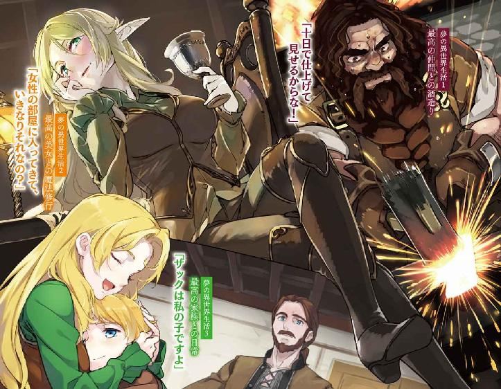
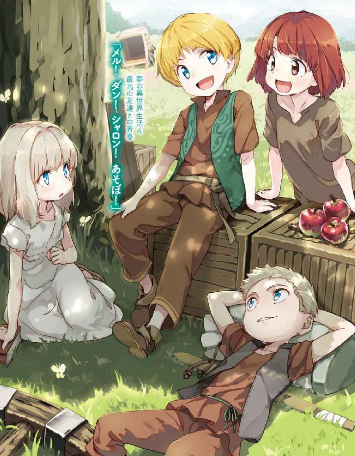
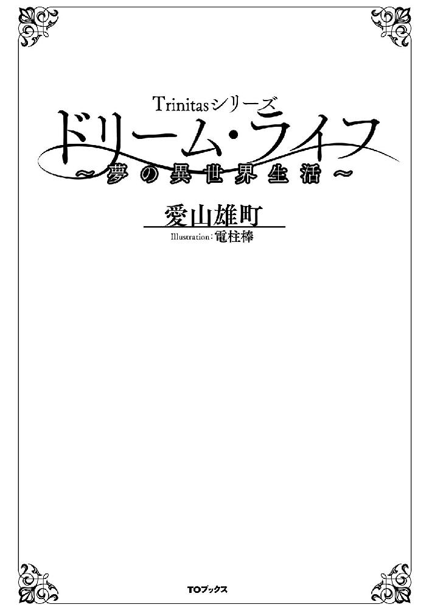
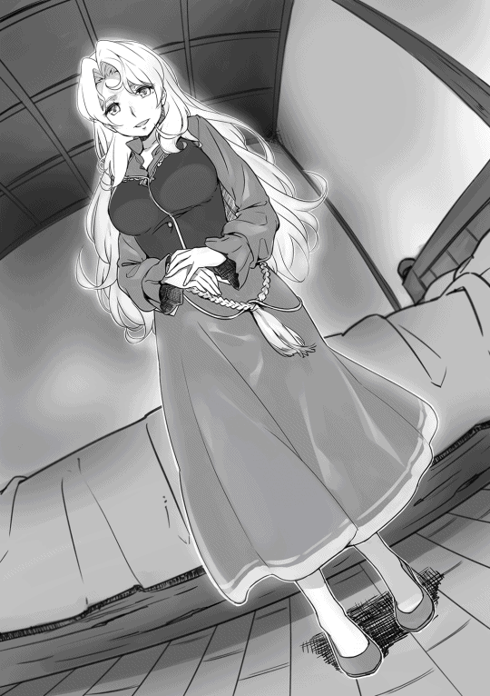
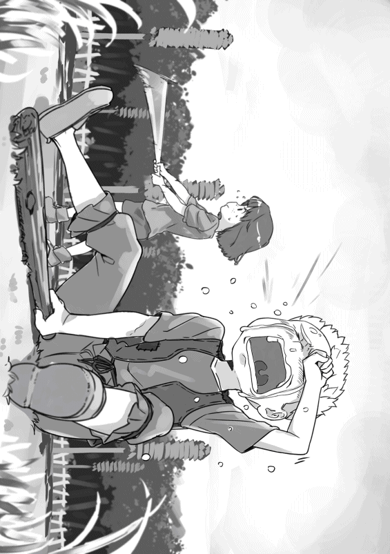
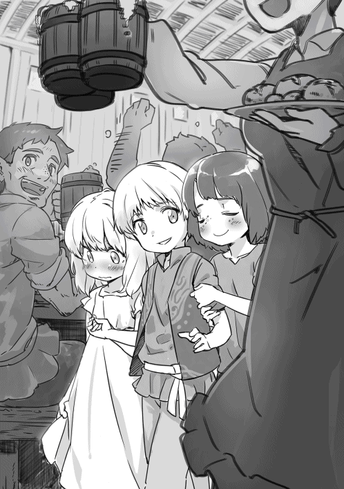
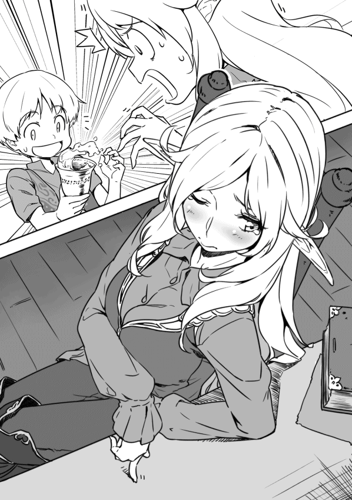
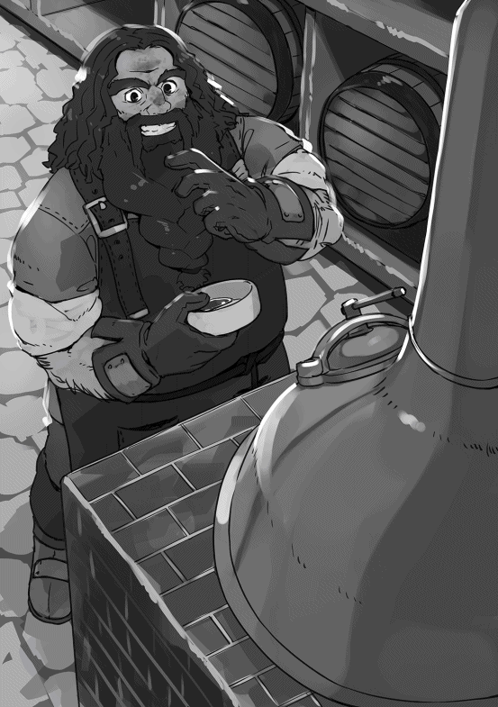
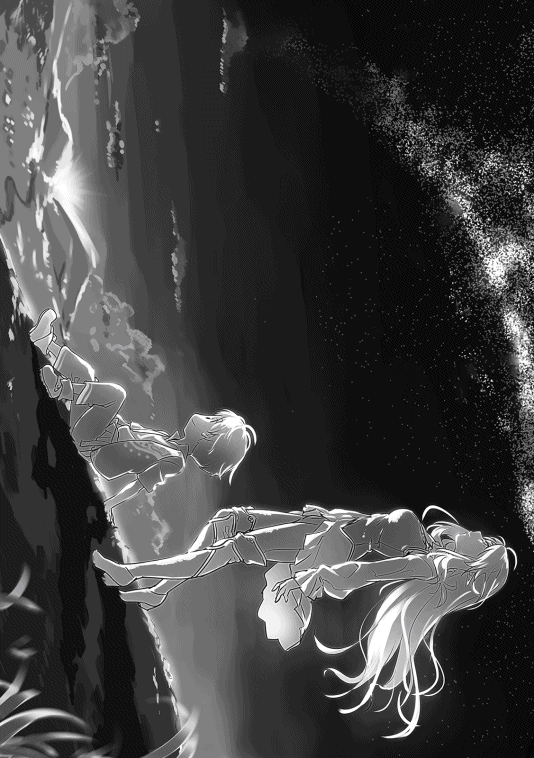
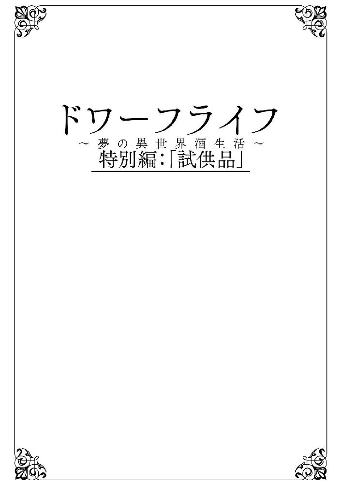

| Trinitasシリーズ ドリーム・ライフ～夢の異世界生活～ | |
| 愛山雄町 | |
| TOブックス (2016) | |
人生に疲れた中年技術者は生まれ変わった。異世界の辺境領主の息子・ザックとして。神から授けられたのは「救世主を導け」という使命。それを胸に、ザックは剣や魔法の修行に勤しむばかりか、持ち前の知識で衛生や教育の問題を改革していく。やがて、少年は特産品開発のため、忘れかけた夢と再会する。それは、何と「酒造り」!? 失われた情熱がよみがえる、「夢の人生」の始まりだった！



イラスト：電柱棒
デザイン：木村デザイン・ラボ
サミュエル・ウルマンの「青春＝Ｙｏｕｔｈ」っていう詩を知っているか？
「青春とは人生のある期間ではなく、心の持ち方をいう」っていう書き出しの詩だよ。有名な詩だし、著名人なんかが座右の銘にしていたりするから、知っているかもしれないな。
俺はこの詩が嫌いだ。
そう、若い頃から嫌いだったよ。
なぜかって？ 俺はこの詩に書いてある「若さ＝Ｙｏｕｔｈ」を失った人間だったからさ。
正直、初めて見た時、俺のことを見て書いたんじゃないかと思ったくらいだ。
自覚していることを人に指摘されるのは嫌なことだろう？
それと同じさ。詩の内容がどうこうっていうんじゃない。「自分でも分かっているよ」って言いたくなるからな。
これを読んでいる若い人たちは、あまり考えたことはないだろうな。
小学校の頃、自分はスポーツ選手でもパイロットでも何にでもなれるし、何でもやれると、根拠もなく、そう思っていた。
中学生になると、自分はプロスポーツ選手にはなれないと気付いた。そして、芸能人にもなれそうにないし、みんなが羨むような華やかな人生は送れそうにないと思い始めた。だけど、まだやれることはたくさんある、それを見つければ楽しく生きていけると思っていた。
高校生になったら、急に現実が見えてきた。そう、自分の学力では一流大学には入れない。政治家や一流企業の社長みたいな社会を動かすような人間にはなれない、そう気付いてしまったんだ。それでも、自分にできる何かがあるはずだ、それを探せばいいと思っていた。
だけど、俺は保険を掛けてしまった。そう、大学を選ぶ時に。単に就職が楽そうだというだけで、好きでもない学部を選ぶという保険を。
俺が入ったのは地方の国立大学の工学部だ。その頃は、夢なんか関係なかった。その日を楽しく過ごすことだけを考えていたから。
卒業の前の年、仕方なく自分の進路を考え出した。そして、ここでも保険を掛けていた。
できるだけ潰れそうにない会社、そして、リストラされても潰しが効きそうな会社を選んでいた。もう、自分には夢を見ることができない、現実を生きるしかないと思い込んでいた。
何となく結婚し、何となく離婚していたよ。一人になったのは三十五の頃だ。それでも、まだ、体力的にも問題はなかったし、まだ未来があると信じていた。
四十歳、人生も半ばを過ぎ、自分の人生に選択肢などほとんど残っていないことに気付いたよ。不惑の年と言われるが、惑うほどの選択肢がないという意味だと気付いたね。やり直す時間など、既にないということも。
四十五歳、体力的にも衰えを感じ始めた。やり直すことすら考えなくなったな。
この歳になると、自分の人生を振り返ることが多くなる。なんと面白くない人生を歩んできたんだろうと、毎日そのことばかりを考えていた。そして、〝生まれ変わったら〟と考えることが多くなった。
人間は何を消費して生きているか、知っているか？
人は自らの「夢＝可能性」を消費して生きているんだ。
子供の頃には無限にあった「夢＝可能性」。それを食い潰して生きていくんだ。
人生の成功者は、消えていく可能性をうまく消化できた者のことを言うんだと、俺は思う。
そして、俺は冒険心を持たず、易きについた。ウルマンがいう「青春＝若さ」を失った者、そのものだった。
そう、俺は自ら持っていたはずの「夢＝可能性」を捨ててしまったんだ。
この物語は、挑戦もせず、夢を諦め、ただ生きるという目的のためだけに漫然と生きてきた男が、人生を一からやり直すという夢のお話。
◆ ◆ ◆
俺の名前は川崎弥太郎、今年で四十五歳になる冴えない中年男。
関西の港町でプラント関係の会社に勤めている。
同期には部長もいるのに、この歳で主任止まり。まあ、出世しようという気概もなかったから、誰の責任でもないんだが。
名字の〝川〟が〝岩〟なら、〝横三（注）〟の創業者。なのに、名字が〝縦三（注）〟だから、中途半端な感じで、この街ではよくからかわれる。
まあ、実際に名前で損をしたことはないから、問題はないんだけどな。
（注：〝横三〟とは三菱重工業（株）を、〝縦三〟とは川崎重工業（株）のことを指す。大昔の軍需産業での隠語）
俺はいつものように安い居酒屋で晩飯を食い、まだ十年以上ローンが残っているマンションに帰っていく。転勤が多いから、売り払っても良かったんだが、売るのが面倒というだけで何となく住んでいる「我が家」だ。
家に帰っても誰がいるわけでもなく、することも漫然とネットサーフィンをするか、投稿小説サイトを覗くくらいしかない。
テレビはほとんど見ない。ドラマなんて何年見ていないんだろう。ドラマの世界ですら、ときめかなくなった。違うな。ドラマを見ると自分が惨めになるから、俺にはハッピーエンドはないと分かっているから、見なくなった。
今日も小説サイトを覗いていく。
面白い小説に当たることは少ないが、転生物の小説はほとんど目を通している気がする。自分も転生したい、そんなできもしないことを妄想し、灰色の現実から逃げ出せるから。俺にだって四十半ばのおっさんのすることじゃないってことは分かっているさ。
いつものように「転生」、「異世界」、「ファンタジー」で検索を掛ける。画面には、三千件以上の作品があると表示される。その中から適当に選び、クリックしていく。
今日は外れが多い。十作品ほどチラ見して、缶ビールを取りに行く。
缶ビールを片手に小説を読み始める。最近はジョッキに入れて飲むこともなくなった。
（ああ、これも外れか。女子高生が主人公じゃ、感情移入なんてできないな......）
そして、別の作品を探そうとした時、突然胸が苦しくなった。急速に視界が暗くなっていく。机に突っ伏すように倒れると、缶ビールが倒れ、腕を濡らす感じがした。
（ああ、零しちまったよ......）
緊張感も切迫感もなく、そんなことを考えていた。そして、それがこの世界から飛ぶ前の最後の記憶だった。
俺の目には、パソコンの画面に浮かぶ「トリニータス・ムンドゥス」という小説のタイトルがぼんやりと映っていた。
俺はぼんやりとした頭で、なぜ、中学時代の友人、アキラの部屋にいるのか考えていた。
（ここはどこだ？......ああ、懐かしい部屋だな。アキラの部屋か......何でここにいるんだろう？）
アキラの部屋には俺以外、誰もいなかった。いつも置いてあるコタツの上には、ＴＲＰＧ──テーブルトークＲＰＧ──の説明書と、十面体サイコロが二つ置いてある。
（十面体サイコロか。懐かしいな......何々、タイトルは〝トンネル＆ドラゴンズ〟、略して〝Ｔ＆Ｄ〟か。パクリもここまで来たら潔いな......）
有名なＴＲＰＧ二作品を合わせたようなタイトルに思わず笑みが零れていた。
突然、アキラの声が聞こえてきた。
『おい、弥太、弥太郎。早くキャラクターを作ってしまえよ。後はお前だけだぞ！』
周りを見ても姿は見えないが、俺は特に気にすることもなく、返事をしていた。
「悪いな。けど、まだ説明書すら読んでいないんだ。もうちょっとだけ待ってくれ」
『仕方ないな。分かったよ。だが、さっさと済ませてくれよ』
俺はすぐにＴ＆Ｄの説明書を開き、ざっくりと斜め読みしていく。読み進むうちに自分の知っているＴＲＰＧと、それほど変わりないことに気付き、気になるところ以外は軽く目を通すだけでさっさと読み飛ばしていく。
（何々、種族を選んで、ステータスを設定、キャラクターポイント（ＣＰ）を決める。ＣＰはスキルの修得やステータス強化に使えるポイントか......スキルを選んで、それから、出生環境を選ぶか。階級が王家から奴隷まであるのか。それに、生まれた家が繁栄しているか、没落しているか、都会に生まれたのか、辺境に生まれたのか......なるほどね。意外と細かいな。全部、十面体サイコロで決めていくんだな）
ステータス設定の項目を読み始めた。
ステータスは戦闘に特化したものではなく、筋力、反射神経、肉体制御能力、耐久力、魔力、精神力、知力、製作能力、容姿、魅力の十個あり、十面体を二つ振って、一から百までの数字を決めることとなっていた。
（筋力とか反射神経は分かるけど、肉体制御能力って何だ？ 何々、〝命中率、運動関係の成功率に影響するステータス〟って、それだけしか説明がないのかよ。詳しくは〝戦闘〟の項を参照のことか......）
その他のステータスについても説明書を斜め読みしていく。
説明書には一般的な人間のＮＰＣ（ノンプレイヤーキャラクター）では、ステータスの平均値は五十、標準偏差は十であると書いてあった。
（標準偏差シグマが十ってことは、三シグマが二十と八十。五シグマが百か。それをランダムで選ぶっていうのは、無茶苦茶なバランスのキャラができるってことか。まあ、ＲＰＧの主人公だから、こういうのもありなんだろう......）
そして、面白いルールを見つける。
（キャラクター設定で一度だけサイコロの振り直しが可能。但し、その場で決めなければならないか。何々、出生環境にＣＰを振ることができる。その場合、消費したポイント以下の数値は無効となり、振り直しが可能となるか。要はＣＰを振った分、足切りができるんだな。三十つぎ込めば、三十以下のサイコロの目は無効になるから、振り直しができる。そういうことか）
ルールを理解した俺は、何十年ぶりかに十面体サイコロを手に取った。そのプラスチックの冷たい感触が昔を思い出させる。
（懐かしいな。こいつはよく転がるんだよな。いつものようにゼロが上に来るようにしてと......）
出したい数を上にして持つ癖があった。
そんな癖を忘れていないことに、少しだけおかしさを感じながら、最初に種族を決めていく。
竜人、魔族、エルフ、ドワーフ、獣人、人間の六種族から選べるが、最初はＣＰがないから、完全にランダムになる。
人間以外がいいと思いながら、俺はサイコロを転がす。最初の一投ということもあり、少しだけ緊張しながら。
気合を込めて、サイコロをコタツの天板の上に振った。
天板の上をコロコロと転がり、出た結果は人間。
振り直しもできるが、確率的に人間になる可能性が高いから、振り直しはしない。
次にステータスを設定するとあるが、俺は先にＣＰを決めることにした。ＣＰはサイコロを三回振った数の積。つまり、一から千までになる。
（普通に振れば百から二百くらいの数字になるんだろうけど、振り直しはここで使った方がいい。ＣＰが大きければステータスの補正はできるし、スキルもたくさんとれる。それに環境にも使える）
まずＣＰを決めるため、サイコロを一回ずつ振っていく。
一投目は〝九〟。俺は幸先のよさにガッツポーズを決める。
二投目は何と〝十〟だ。これで最低九十のＣＰを確保した。そして、運命の三投目。〝てえぃ！〟と気合を入れて賽を振った。
十面体サイコロが示す数字は〝二〟。
（えっ？ 〝二〟かよ......まあいい。振り直しだな。下がる可能性は十分の一、上がる可能性は十分の八。完全にリスクよりリターンが上回っている......）
俺は三度目の数字をキャンセルし、振り直しを選択した。そして、もう一度気合を入れ直し、十面体サイコロに念を送って転がした。
よく転がる十面体サイコロがコロッという音を立てて止まる。
出た数字は〝九〟だった。俺は誰に見せるでもなく、ガッツポーズを決める。
（ヨッシャ！ 九掛ける十掛ける九で八百十。相当ステータスが低くてもリカバリーできる。みんなには悪いが、チートキャラにさせてもらう。ふふふ......）
俺はほくそ笑みながら、数字を眺めていた。
そんな姿を見ていたのか、『早くしろよ。遅いぞ』と、アキラの急かす声が聞こえてきた。
「わりぃな。つい夢中になった」
俺は慌ててステータスの設定に入る。
筋力から順に決めていく。
気合を込めて、サイコロを振っていき、筋力：三五、反射神経：八二、肉体制御能力：八三、耐久力：二〇、魔力：九六、精神力：四一、知力：九九、製作能力：四五、容姿：八七、魅力：八一となった。
（結構いい数字が集まったな。これだけ見れば、完全に魔法使い系キャラだな。肉体労働は誰かにお任せしますっていう感じだ）
いい感じの数字に気を良くした俺は、スキルの獲得の項目に移った。
スキルの説明では、〝才能〟と〝特殊能力〟があると書かれており、それぞれＣＰを使ってキャラクターに付与できるとあった。
才能は武術系や魔法系、生産系など、生まれながらの才能に関するもので、才能を修得したからといって、すぐに使えるわけではない。修行や訓練、教育によって使えるようになるとあった。
もう一つの特殊能力は、頑健、病気耐性、毒耐性など基礎能力に関わるものと、よく分からない〝前世記憶〟というものや、簡易なヘルプ機能のような〝参照〟のような、まさに〝特殊〟な能力もあった。
（武術だけでも十個以上あるな。魔法は八つの属性があるのか。おっ、お得な八属性全部っていうのもあるな。八百十もＣＰがあると、取り放題な感じか......うん？ 才能はレベルがあるのか。一で村一番、二で街一番、三で名人、四で天才、五で百年に一人の天才か。分かりにくいな。おっ、例が書いてあるな。何々、野球に例えると、一で草野球のスター、二で甲子園出場クラス、三でプロの二軍クラス、四でプロの一流選手、五はメジャーリーグの殿堂入りクラスか......才能が高ければ高いほど、スキルレベルの上昇速度が上がるか......本職にするなら三以上、普通に使うなら一でも十分ってとこか）
俺はステータスの特性を生かし、魔法関連の才能を多めに取得した。
更に肉体強化系も可能な限り修得していく。そして、護身術くらいは使えるようにと、武術系のスキルもいくつか押さえることにした。
修得した才能を並べると、
武術系：剣術一、格闘一、回避五
魔法系：魔法才能全属性修得、魔力効率向上、魔力防御
生産系：なし
その他：体術三、馬術一、調教一、交渉一、気配察知三、隠密三、罠二
特殊能力：頑健、病気耐性、毒耐性、精神耐性、視力強化、死力発揮、前世記憶、参照
これだけのスキルを修得してもＣＰは五百七十。
（回避を五にしたから、回避しながら華麗に魔法を打ち込むって感じか。「当たらなければ、どうということはない」っていうセリフが使えそうなキャラだ......冒険に必要なスキルは押さえたし、次は出生環境だな。まずは身分か）
身分には王家から始まって奴隷まであり、七十以上で支配階級である騎士以上、四十以上で商人、十五以上で農家、五以下は奴隷となる。
（奴隷に生まれるのは絶対に嫌だな。ステータスにもＣＰを振りたいし、奴隷以外なら、良しとするか。後は、出生家系と家庭環境のバランスだな。もし、農民になったとしても、環境を昇運にしておけば、成長に問題はなさそうだし、家系は奴隷を回避するだけにしておくか。それにしても、五以下なんて、確率は二十分の一。勿体ない気もするな。まあ、保険と考えれば安いものか......）
俺はＣＰを五だけ使い、五以下の数字を無効にした。
そして、サイコロを振ると〝〇〟と〝三〟。ＣＰを使わなければ奴隷になるところだった。
気合を込めて振り直すと、〝七十一〟、底辺ではあるが、支配階級の騎士となった。
（よし、いいぞ！ 騎士の家に生まれた。騎士の家で魔法使いはしんどそうだな。後で武術の才能を見直すか）
次に家の状況を決める。
昇運から崩壊までの環境があり、最低崩壊していない三十以上となるように、俺はＣＰを三十使った。だが、出た結果は〝三十八〟の〝没落気味〟。
（折角三十も使ったのに、三十八か。もの凄く損した気分だな。まあ、落ちぶれつつある騎士の家っていうのも、キャラ設定的にはありってことにしておくか。没落しつつある家を建て直すため、冒険者になった。ありそうな設定だ）
俺は気楽にそんなことを考えていた。
そして、出生地を選ぶが、これも首都から人跡未踏の荒野まであり、俺はこれにもＣＰは使わなかった。その結果は、〝辺境〟。
（辺境の没落気味の騎士の家。名声と富を求めて旅立つ主人公。完璧な設定じゃないか......）
出生環境も決まり、残りのＣＰは二百五。
（これをステータスに割り振るか。それとも、更に才能を取るか......まずは武術の見直しをするか）
俺は、騎士の家ということもあり、剣術を三に上げ、更に投擲と盾防御を一ずつ修得した。そして、魔闘術という魔力を攻撃等に使える特殊技能を付けることにした。
（これで残りは百四十か。ステータスを上げていくか......）
俺は再度説明書を読む。
才能とスキルの習得方法の説明を見ると、成人（このゲームでは十五歳）までにスキルを習得するには、訓練が必要とあった。
そして、訓練でのスキル習得については、家庭環境（家が裕福で教師を付けられる）と、訓練の成功判定を行う必要があると書いてあった。
幼少期の訓練成功判定は、精神力以下の数字で成功。訓練実施回数は年間、耐久力数までとなっている。
（......つまり、幼少期の訓練は耐久力と精神力によって、習得速度が変わるということか......体が丈夫で根気のある奴が訓練をやり抜く。妙に現実臭いな......どっちも低いんだよな。思い切って上げておくか......）
俺はまず耐久力を二〇から八〇へ、精神力を四一から八〇に上げる。
（後は短所を改善するか、長所を伸ばすかだな。才能的には十分にとってあるし、残りのＣＰを使い切ってステータスを上げてしまうか）
俺はそう考え、筋力を三五から五〇、反射神経を八二から九〇、肉体制御能力を八三から九〇、魔力を九六から一〇〇、知力を九九から一〇〇、製作能力四五から五〇、魅力を八一から八二にした。
最終的には、筋力：五〇、反射神経：九〇、肉体制御能力：九〇、耐久力：八〇、魔力：一〇〇、精神力：八〇、知力：一〇〇、製作能力：五〇、容姿：八七、魅力：八二となった。
修得した才能を並べると、
武術系：剣術三、格闘一、投擲一、盾防御一、回避五
魔法系：魔法才能全属性修得、魔力効率向上、魔力防御
生産系：なし
その他：体術三、馬術一、調教一、交渉一、気配察知三、隠密三、罠二
特殊能力：頑健、病気耐性、毒耐性、精神耐性、視力強化、死力発揮、前世記憶、参照、魔闘術
すべてのＣＰを使い切り、もう一度、確認する。
（ふふふ......ステータスの平均は八十。ファイブシグマ、十万人に一人のステータスが二つ、千人に一人のステータスが六つ。平均以下なしか......くくく、正にチート。才能も豊かだし、育てがいのあるキャラだよ......）
アキラに終わったことを告げようとした瞬間、唐突にコタツの天板に突っ伏してしまった。そして、再び意識が混濁していった。
◆ ◆ ◆
俺は見知らぬベッドで目を覚ました。
周りは薄暗く、雨戸でも閉まっているのか、窓の隙間からうっすらと光が差し込んでいるだけだった。
（ここはどこだ......）
これがライトノベルなら、「知らない天井だ」と呟くのだろうが、俺にそんな余裕はなかった。
普段、寝起きは悪くないのだが、今日は無性に眠い。そのせいか、頭が全然回らない。首を振って目を覚まそうとすると、すぐ横に大きな白人の若い女性の顔があった。
（あわっ！ でっかい女だな。でも、金髪の凄い美人だ......）
感覚的には俺の二倍はあろうかという巨人の顔に一瞬驚くが、その美しい横顔につい見惚れてしまう。
（いやいや見惚れている場合じゃない。昨日の夜、俺は何をしていたんだ......思い出せない......それよりこの状況をどうにかしないと......知らない女性と同衾している......酔っぱらった勢いでベッドイン？ いや、俺にそんな甲斐性はない......）
完全にパニクっている俺は、考えが全くまとまらない。とりあえず、ベッドから出ようと、掛け布団に手をやった。俺は自分の手を見て、声を上げそうになった。
（小さい......子供の手だ......）
俺は自分の手をしげしげと眺める。
小さく、無駄毛など一切ないすべすべとした皮膚、仄かにピンク色で、幼児の手のように、ぷにぷにとしている。俺はもう一度、周りを見回していった。
（大きな部屋じゃない。俺が小さくなっているんだ。子供の体になっている......）
俺がゴソゴソとしていると、隣に寝ていた女性が目を覚ましたようだ。
「ザック、どうしたの？ ×× ○○......」
最初の言葉は聞き取れたが、その後はほとんど意味が分からない。
（英語に近いが知らない単語が多いな。待てよ、今、聞いたこともない外国語なのに知っている単語が勝手に日本語になっていた。どういうことだ......）
パニックになりそうになり、どういうことかとこの女性に聞きたいが、言葉が出ない。固まっていると、その大きな腕で俺は抱え込まれてしまった。
「怖い......夢......見たの？......」
分かる単語を繋げると、怖い夢でも見たのかと聞いているように聞こえた。
俺はその豊かな胸に顔を押し付けられる。
女性独特の匂いがして、心臓の鼓動が伝わってくると、自然とパニックも収まっていった。
（どうやら、俺は子供になったようだ。リアルな夢なのか......それにしてはリアルすぎる。まさか、転生したのか？）
必死に記憶を辿るが、家に帰ってネット小説を読んでいたことと、夢でＴＲＰＧのキャラクターを作ったことしか、思い出せない。
（そう言えば、不自然なことがあったな。何でキャラ作りの夢なんか見たんだろう？ もしかしたら......参照......）
俺はあり得ないと思いつつ、キャラ設定の時に付けた〝参照〟のスキルを使ってみた。
参照は、触ったものの名前と、簡単な説明が頭の中に浮かぶというスキルだったはずだ。
（まずは自分を見てみるか。参照っと......名前は〝ザカライアス・ロックハート〟。年齢は三歳、人間の男か。参照だとこれだけしか分からないか......もし、これがトンネル＆ドラゴンズの世界なら、ステータスが見られるかもしれない。念じればいいのか......）
〝ステータス〟と念じるが何も起きない。パラメータとか、メニューとかでも何も起きなかった。
（駄目か......待てよ。〝参照〟は日本語で考えたな。もしかしたら〝情報〟かもしれない......）
駄目元で〝情報〟と念じると、目の前に、ザカライアス・ロックハートと表示が現れ、その下にステータスとスキルが並んでいた。
筋力 ：二／五〇
反射神経 ：四／九〇
肉体制御能力：四／九〇
耐久力 ：五／一二〇（八〇×一・五）
魔力 ：四／一〇〇
精神力 ：一二〇（八〇×一・五）
知力 ：一〇〇
製作能力 ：二／五〇
容姿 ：八七
魅力 ：八二
ＨＰ ：四八
ＭＰ ：四〇
スキル ：なし
特殊能力 ：頑健、病気耐性、毒耐性、精神耐性、視力強化、死力発揮、前世記憶、参照、魔闘術
（スラッシュの後の数字に見覚えがあるな。この体はあの時のキャラクターで間違いない。まだ、子供だから数字が小さいのかもしれないが......うん？ 知力や容姿なんかは最大値になっているな。容姿はこの年齢なりの数字なんだろうけど、知力と精神力、魅力はなぜ最大値なんだろう......）
そこまで考えた時、ふと、俺はなぜ冷静に考えられるのか、疑問に思った。
（俺は元々パニックになる方じゃないが、ここまで異常な事態に冷静にしていられるほど胆力があったわけじゃない。ステータスの精神力が効いているのか？ 精神耐性のスキルが効いているのかもしれないが、それでも動揺してもおかしくない......）
そこで一つの推論に辿り着いた。
（推測にすぎないが、俺の生まれ変わりたいという欲求がこの状況を容認させているんじゃないか。夢でもいい。こんな風に生まれ変わりたいっていう夢が俺の心を平静にしてくれている気がする）
そんなことを考えていると、俺を抱きかかえている女性は、そのまま寝息を立て始めていた。
（いい匂いで、いい気持ちなんだけど、ムラムラはこないな。三歳の体だから仕方がないのかもしれない......折角だから、この女の人を参照してみよう）
俺はそっと彼女の腕に手を当て、参照と念じる。
（名前はターニャ・ロックハート。年齢は二十三歳、人間の女か。名字が同じで一緒に寝ているから、母親なのだろう。俺はどう呼んでいたのだろう......頭に何か浮かんできた......〝母様〟か......記憶が少しずつ蘇ってきた......）
俺の頭の中に、ザカライアス・ロックハートという幼児の記憶が、少しずつ蘇ってきた。
今までは俺＝川崎弥太郎の記憶がこの小さな脳に収め切れなかったのではないか。恐らく脳を守るために記憶を封印していたのだろう。脳が処理できるところまで成長した段階で封印が解け、記憶の整理がついたことで俺の意識が目覚めたのだろう。
（これからどうするかな。夢でないとすると、本当に転生したのか、あのキャラなのかを確かめる必要がある。もし、転生したのなら......俺の願いが叶ったことになる）
そこで俺は何の説明もなく、転生したことに疑問を持った。
（......だが、何で、俺は転生したんだ？ 神様でも、管理者でも、三途の川の渡し守でもいいが、何の説明もなかったしな。そもそも、俺は死んだのか？ 確かにパソコンの前で胸が苦しかった気がするが。心筋梗塞とか、心臓発作とかそんなものが起こったのか？ 年齢的には少し早い気がするがないと言い切れるわけじゃない......しかし、普通、こういう条件で転生させてもらえるのは、誰かを助けたとか、神様が失敗したとかだよな......駄目だ。完全に頭がラノベに侵されている。とりあえず、今考えても答えはなさそうだし、流れに任せてみるか......）
こうして、俺の第二の人生は始まった。
母、ターニャが目覚めると、俺も一緒に起きることにした。
ベッドから出ると、思った以上に部屋の中は寒く、俺は震えを止めることができなかった。
母は俺のその姿を見て、すぐに服を取り出し、何か俺に言ってくる。だが、最初のうちは、ただの外国語にしか聞こえず、単語を拾うことしかできなかった。
母が服を取り出しながら、話しかけてくる言葉を聞いていると、少しずつ言葉が理解できてきた。
（思い出すって感じだな。俺の意識が戻る前に覚えた言葉が、自然と頭に浮かんでくるな。語彙は少ない。まあ、三歳だからこんなものか......）
母が着替えさせてくれた服は、薄茶色の麻のゴワゴワした丸首のシャツで、ダボダボの腰回りは紐で縛っていた。ズボンも同じ素材のもので長い裾を折り曲げ、無理やり履いていた。靴は皮の粗末なもので、しかも、これも大きさが合わず、ウールの靴下を重ねて履くことで何とか履いているといった感じだ。
「ザック、ご挨拶がまだよ。おはよう」
優しく微笑みかける母の顔が眩しく、俺ははにかみながら、「おはようございます。母様」と呟くのが精一杯だった。
そんな俺の姿を微笑ましく思ったのか、にっこりと笑いながら、俺を抱きかかえる。
身長の三倍くらいの高さに持ち上げられ、少し怯えるが、この位置だと今までの視線の高さと同じになるため、意外と安心感がある。
俺が部屋を見回していると、ベッドからもう一人、起き上がってきた。
茶髪の髭面の男だが、まだ若く、結構美男子だ。記憶が整理された俺には、この男の正体は既に分かっていた。
（確か、俺の父親だ。名前は......あれ？ 母様はマットって呼んでいた記憶があるな。マット・ロックハートかな）
「もう起きたのか、ザック」

「おはようございます。父様」
俺は父に挨拶を返すと、母は俺を下に降ろす。
そして、二人は抱き合い、朝の挨拶なのか、キスを交わしていた。
（目の前で堂々とキスをされると、見ている方が恥ずかしい。これが普通のことのようだが......）
二つの記憶が混在するため、どうも考えが安定しない。
（これから、ゆっくり整理していこう。この世界のことは何も知らないし、それまでは〝悪魔憑き〟とかって言われないようにしなければな......）
父も母も着替えを済ませ、窓を開ける。
窓にはガラスはなく、ただの木窓だったようで、一気に朝の眩しい光が部屋に差し込んできた。父も母も俺と同じような地味な麻の服を身に纏い、どう見ても騎士階級には見えない。
（どう見ても農家の若夫婦一家だな。せめて、立派な剣でも置いてあれば騎士らしいと思うんだが......）
俺の想いなど関係なく、父が窓の外を見ながら伸びをする。
「今日もいい天気だ。牛たちも機嫌がいいだろう」
俺はその言葉に驚き、父の後ろ姿を茫然と眺めていた。
（牛たち？ うちは騎士の家じゃないのか？ それともこの世界では牛に乗って戦うのか？ 本当に情報収集をきちんとしないとボロが出そうだ......）
俺は一日目を無事に過ごすことに集中しようと、気合を入れた。
転生した事実に驚愕したまま、この世界での両親の寝室を出て行く。
天井が高く幅の広い廊下を歩いていくと、食堂らしき広い部屋に到着した。俺はまだ自分の体に慣れておらず、以前の大人の体とのギャップに戸惑うしかなかった。
（広く見えるが、それは俺の体の大きさの関係だろう。目の間隔が狭くなったから、そう思うのかもしれない）
食堂には十人掛けの大きなテーブルがあり、朝食の準備が行われているのか、いい匂いが漂っていた。食堂の奥にある調理場では、四十歳くらいの恰幅のいい女性が食事を作っている。
「おはよう、モリー」
母がその女性に挨拶している。その様子を眺めながら、自分の中にある記憶を必死に検索していく。
（モリーか......確かお手伝いさんみたいな人だな。ウォルトっていう人の奥さんのはず......）
父が声を掛けた後、俺も挨拶をしておく。
「おはよう、モリー」
「皆様、おはようございます。××○△○、少しだけお待ちください」
エプロンで手を拭きながら、笑顔で挨拶を返してきた。その姿は学生寮の寮母を思い出させる。
（世話好きなおばちゃんっていう感じだな。でも、まだ聞き取れない単語が出てくる......）
俺がそんなことを考えていると、彼女はにっこりと笑い、再び調理台に向かっていった。
テーブルには木皿と木のスプーンが置いてあり、丸いパンも置いてあった。パンはカンパーニュのような田舎風のパンで、焼き立てなのか、香ばしい良い香りが食卓を包んでいく。
数分後、小学校低学年くらいの歳の少年が現れ、挨拶をしながら、母の横の椅子に座った。
（兄のロッドだな。〝兄様〟と呼んでいるみたいだ）
俺はできるだけ幼児らしく聞こえるように「おはようございます。兄様」と笑顔を作る。
兄は少しびっくりしたような顔で俺の顔を見るが、すぐに挨拶を返してきた。
（何か拙かったのか？ 普段の行動の記憶があいまいだから、ボロを出さないようにしないといけないんだけどな......）
しばらくすると、モリーが大きな鍋を持ち、それぞれの木皿にスープらしきものを配膳していく。スープには具はほとんどなく、僅かに肉の欠片とキャベツのような葉野菜が浮かんでいた。
配膳が終わると、父と母、そして兄がパンを手に取り、食事を始めた。
（貧しい食卓だな。没落気味とはいえ、騎士の家なのに......記憶を探ってもあまり代わり映えがしないから、いつもの食事みたいなんだろうけど......）
俺は母に手伝ってもらい、千切ったパンをスープに浸す。
パンは幼児の俺の口には硬すぎ、母がスプーンで押し潰すように浸すことで、ようやく食べられる硬さになる。
（味は結構濃いけど、悪くはないな。味付けは......塩だけか。香辛料らしきものは使っていないのか）
俺は大人の拳ほどのパンを二つ平らげ、満腹になる。
他の三人が食事をしている間に、今日すべきことを考えていく。
（さて、これから情報収集をしないとな。昨日の俺は、天気が良かったから、〝メル〟と呼ばれる少女と庭で遊んでいたようだな。今日は屋敷の中を探検するか、それとも母か父について回るか......まだ、情報不足だな。もう少し様子を見てから決めるとしよう）
食事が終わると、母に連れられ、外に出て行く。屋敷の裏側にある井戸に向かうようだ。
屋敷は丘の頂上にあるのか、周りは緩やかに下っていた。そして、斜面は草原になっており、更に遠くには連なる丘にパッチワークのような畑が広がっていた。
（丘の上か......パッチワークが歪だけど、北海道の美瑛を思い出すな。しかし、視力強化のおかげか、遠くまでクリアに見える......）
呆けた表情で景色を見ていると、母に急かされる。
「何か面白いものでも見えるの？ でも、先に顔を洗ってしまいましょ」
屋敷の裏、北側にある井戸に着くと、四十代半ばのがっしりとした熊のような体格の男が水を汲んでいる姿が目に入る。
「おはようございます。奥方様、ザック様」
「おはよう、ウォルト」
彼の名はウォルトで、記憶を探ると朝から晩まで屋敷で手伝いをしてくれている人物と出てきた。俺が「おはよう、ウォルト」と挨拶すると、彼は律儀にもう一度、「おはようございます。ザック様」と応えてくれる。だが、すぐに黙々と水汲みを再開した。
井戸はかなり深いのか、釣瓶を投げ入れてから、引き上げるのに彼のような大男でもかなりの時間が掛かっている。
（丘の上だし仕方ないのかもしれないけど、結構な重労働だな）
母を見ると、指に白い粉を付け、歯を磨き始めていた。
俺もそれを真似て、歯を磨こうと白い粉に指を付ける。
（塩？ それも岩塩を砕いた感じだな。歯ブラシはないのか......）
粉を付けた指で歯を磨いていく。
しょっぱい塩の味にチョークのような粉っぽい味があり、爽快感は全くない。
（塩と石灰とかなのかな？ 体に悪くなければいいんだが......それにしても、歯は全部生え揃っていたな。虫歯もないし、まずは健康ってことか......）
木の器で水をすくい、口をすすぐ。母を真似て、桶にある水で顔を洗う。水はとても冷たく、眠気が一気に引いていった。
（文明のレベルは中世か、それ以前って感じだな。キャラクターを作った時の情報が正しければ、魔法があるはずなんだが、今のところ、その痕跡はどこにもないな。それほど、一般的じゃないのか、攻撃魔法に特化しているのか。この辺りもしっかりと情報収集しないと......）
屋敷に戻ると、健康な証拠なのか、便意を催してきた。
俺は記憶にあるトイレに向かう。母が慌てて、何か叫ぶが、俺はそれどころではなく、ほとんど走るくらいの早足で屋敷の中を進んでいく。
（子供の体は我慢が利かなさそうだ。拙いぞ、もう漏れそうだ......）
トイレに到着すると、ホッとする間もなく、すぐに用を足す。トイレは元の世界と違い、便器も何もなく、床に穴が開いているだけ。更にその下はただの地面であり、臭いが凄い。
（これほど汚いトイレは初めてだよ。トイレットペーパーはないし、置いてある布で拭くんだけど、衛生状態は最悪だな）
俺は手を洗おうと考えるが、トイレには手桶もなく、手が洗えない。
（これじゃ、子供は病気になるな。これを改善しないと、快適な生活は送れない......）
俺は再び外に向かいながら、異世界で最初に思いついた改善事項、〝トイレの改善〟を心に誓っていた。
手を洗って、屋敷の中に戻ってくると、母が何やら心配そうな顔で近づいてきた。
「汚しちゃった？ 着替える？」
どうやら、手を洗いに行ったことをトイレの失敗だと思ったようだ。
「大丈夫。手を洗いに行っただけ」
母は俺の服を確認し、問題ないと分かると不思議そうな顔で俺を見つめていた。
（拙かったかな。でも、手を洗わないと落ち着かないんだよな。今度から注意しよう......）
朝のバタバタが終わり、少し落ち着いて周りを見ると、父と兄の姿はなく、母とモリーと俺の三人になっていた。
（さて、昨日はメルっていう子と、ダンとシャロンの兄妹の四人で遊んでいたみたいだな。記憶にある限り、この三人と遊ぶか、兄たちの後を追いかけるかして、過ごしているっていう感じだな。さて、今日はどうするか......）
俺はまずザックという少年の記憶が、現実と整合しているか、確かめることにした。
（子供の記憶はいい加減だからな。思い違いなんかも多いはずだから、これを確認していくか......今日も天気が良さそうだから、屋敷の外、〝お庭〟と〝メルの家〟、〝ダンとシャロンの家〟辺りを確認していくか）
俺は母にメルの家に行くと告げ、いつもと同じように見えるよう、脇目も振らずに走り出す。
屋敷の門──木で作られた粗末な観音開きの門──をくぐり、屋敷の外に出て行く。メルの家は、丘の中腹にあるため、屋敷から続く道を下っていくことになる。屋敷の方を振り返ると、屋敷は黒い柱と白い漆喰の壁、スレート葺きの屋根の木造二階建てで、思ったより大きな建物だった。屋根には煙突が突き出ており、そこから調理のためなのか、薄い煙が上がっていた。
俺は誰にも見られていないのを確認し、走るのをやめる。そして、歩きながら、自分の体について考えていた。
（走りにくいな。頭が重いからか、それともまだ体の制御がうまくいかないからか。この世界で生きていくなら、体が資本になるだろう。特に俺の家は騎士の家。戦闘能力がものを言う世界のはずなんだから......三歳から体を鍛えていけば大人になる頃には同世代に対してかなりのアドバンテージを得られるはずだ......）
屋敷の外は一面草原かと思っていたが、ところどころに畑があった。
朝の爽やかな風を受け、踏み固められただけの道を下りながら、更に思考を進めていく。
（設定通りなら、ここは辺境なんだろう。だが、どのくらいの気候の土地で、夏や冬がどうなるのか。緯度や標高はどのくらいで......いや、そもそも、今が何月何日かも分からない。ああ！ 一年が何ヶ月で、何日かも知らないんだ！ 情けないほど基本情報がないな......）
俺は情報があまりに少ないことに落ち込んでいた。
ネットが当たり前で、スマートフォンでいつでもどこでも欲しい情報が手に入る世界から、突然情報を手に入れる手段すら分からない状況に陥り、苛立ちに似た感情が湧き上がってくる。
（しかし、転生させるなら、ちょっとくらい説明があってもいいはずだろう......情報がないっていうのが、こんなにイライラすることだって思わなかった......）
メルの家は屋敷から五十メートルほど下ったところにある平屋の小さな家で、防風林のような林が家の周りを囲んでいる。
（メルのお父さんがヘクターで、いつも弓を持っていたな。お母さんがポリーで屋敷の手伝いによく来ている人。兄がシムで、うちの兄様と同い年か......苗字があるのかは分からないが、三歳児としてはよく知っている方だな。それとも俺の意識が蘇ったから、情報が整理できて、理解できるようになったのかもしれないが......）
いつもと同じ行動になるようノックもせず、いきなり扉を開け、「メルはいる!?」と叫ぶ。
（領主の息子だからいいのかもしれないけど、マナー的にどうもな......まあ、これからゆっくり改善していけばいいか......）
すぐにショートカットの茶色い髪に、大きな茶色い瞳、自分より僅かに年長の愛らしい少女、メルが現れる。
「ザック様、今日は何をするの？」
考えていなかった俺は答えに窮し、「お散歩かな？」と三歳児らしく答える。だが、心の中は正反対にオヤジ臭い感情が渦巻いていた。
（四十過ぎたオヤジが幼児プレイか......俺の羞恥心がズタズタになっていく気がする）
メルはその愛らしい笑顔を向けて頷くと、「ザック様と遊んでくる！」と叫んで駆け寄ってくる。奥から二十代半ばのかわいい感じの女性、メルの母親のポリーがエプロンで手を拭きながら、顔を出してきた。
「メル！ ザック様がおケガをしないようにちゃんと見るのよ！ ザック様もお気を付けて」
俺は笑顔で大きく頷き、メルと手を繋ぐ。そして、こっそり〝参照〟の能力を使ってみる。
（メリッサ・マーロン、四歳か。メリッサだからメルなのか。それにしても、普通に姓があるんだな。騎士の家に仕える従士だから苗字があるのか......それにしても、この小さい子が一つ年上なんだよな......）
メルと手を繋いで、ダンとシャロンの家に向かう。彼女の家はマーロン家から二十メートルほどのところにあり、同じように家の周りに木が生えている。
（良く見ると、胡桃っぽい殻が落ちているな。食用の実がなる木なのかな？）
小さな林を抜けると葉野菜が植えてある畑があり、その先の草原では羊が草を食べている。
（ダンとシャロンも俺と同い年くらいか。父親がガイで、母親がクレアか。ガイっていう人も弓を持っている印象が強いな。イングランドの長弓兵みたいなものか？ クレアっていう人は俺の母親っていうイメージが強い気がする。乳母とか養育係みたいなものなのかな？......しかし、ロックハート家に仕えている従士かと思ったけど、狩人とか農家とかなのか？ 分からないことだらけだな......）
シャロンの家でもメルの家と同様に扉をいきなり開け、「ダン！ シャロン！ あそぼ！」と叫ぶ。顔が熱くなるほど恥ずかしいが、怪しまれないため、必死に演技を続けていく。
中から俺と同い年くらいの、少し脱色した麦の穂のような金髪の少年が顔を出し、すぐに近寄ってくる。
「おはよう、ザック様！」
元気一杯のダンの声に少し戸惑いながら、「おはよう、ダン！」と挨拶を返す。その後ろから大人しそうな少女、シャロンも近寄ってくる。
シャロンは銀色に近い薄い金髪で水色の瞳の、人形のような美少女だった。
俺が「おはよう、シャロン」と声を掛けると、少し恥ずかしそうな表情で挨拶を返してきた。
後ろから母親のクレアも姿を見せる。クレアは二十代前半で、母ターニャと同じ歳くらいに見える、スラリとした金髪の美人だ。
彼女は笑顔で挨拶した後、「今日はどうなさるのですか？」と優しく聞いてくる。どうやら、彼女がこの四人の世話係のようで、昨日も俺たちのことを見守ってくれていたようだ。
「今日はお散歩しようかな」
俺の言葉にクレアは首を傾げ、「お散歩ですか？」と聞いてくる。
（拙かったのか？ 子供らしくないっていえば、そうかもしれないけど、俺は子供を育てたことなんかないし、小さい子供との接点なんてほとんどなかったからな。ザックが好きなものを思い出せ......馬か......駄目だ、馬場に近づくなって言われている......）
俺の沈黙を質問の意味が分からないと思ったのか、クレアは「どこにお散歩されるんですか？」と聞き直してきた。
（そうか、どこに行くのかを聞いてきたんだな......屋敷の近くを見たいだけなんだが、どう答えるべきか......）
「うーん。羊を見て、お屋敷の近くに行く」
彼女は「あまり遠くに行ってはいけませんよ。それから、羊に近づくと危ないですから、近づいてはいけません」と笑いながら、注意を促す。
（優しい感じの人だな。俺たち四人の母親っていう感じがする......）
俺は大きく頷き、シャロンの手を取った。
（子供とはいえ、男の子より女の子の手を握った方がいいからな。さて、参照を使ってみるか......）
シャロンに参照のスキルを使うと、〝シャロン・ジェークス、三歳、人間、女性〟と出た。
（同い年か。ダンが少し年上みたいだから、四歳ってところか。近所でこれだけ近い歳の子供がいるってことは、この辺りは意外と人口が多いのかな？）
俺は頭にいろいろな疑問が浮かぶが、それを片隅に押しやり、シャロンとメルの手を引くようにして、ジェークス家を飛び出していく。ダンがニコニコしながら、後ろを追いかけてきた。
外に出ると走るのをやめ、牧草地のような草原に向かって西に歩いていく。
俺は歩きながら、周りをゆっくりと眺めていった。屋敷のある丘のふもとには、木でできた高さ二、三メートルの塀があり、周囲をぐるりと囲んでいる。塀の他にも丸太を組み上げた物見櫓のようなものもあった。
（この丘全体が屋敷というより、城の役目をしているのかもしれないな。塀で周囲を囲んでいるっていうことは、外敵がいるっていうことなんだよな。それにしては兵士の姿が見えないな......）
そして、丘全体をじっくりと眺める。
（ざっと見てもこの丘自体、直径二、三百メートルはある。三百メートルとして、塀の長さは一キロメートルくらいある。この城を守ろうとするなら、少なくとも数百人の兵士が必要だよな。それが物見櫓にすら人の姿がない。どういう状況なのか、さっぱり分からないな）
メルの家とシャロンたちの家は屋敷の南側にある。そして、そこから屋敷に近い方にも数軒の家が見えていた。
（兵舎とかじゃなくて、普通の民家なんだよな。小さいとはいえ、畑もあるし......丘全体を塀で囲う......野生動物から家畜を守るためなのか）
そんなことを考えながら、牧草地を進んでいく。
ところどころにモコモコとした毛の羊たちが草を食んでいるが、俺たちにも慣れているのか、こちらのことを完全に無視している。
ダンは羊にちょっかいを出しそうになっていたが、俺はそれを無視して牧草地を歩いていく。西の斜面に近づくと、視線をゆっくりと回し、西の風景を眺めた。
丘の先には川が流れており、水車小屋の水車がゆっくりと回っている。
更にその先には濃い緑の森が続き、遠くには黒く見える山が連なっていた。
（南側には丘が連なっていて、畑が広がっていたな。その先の遥か遠くに山脈が見えた。西は川が流れていて、その先には深い森か......北と東はどうなっているんだろう？ 記憶では北も東も森が広がっている感じか。どうやら、この領地は、うちの屋敷が最北端で、村は南に広がっている感じか......）
牧草地を百メートルほど歩いていると、後ろからダンが声を掛けてきた。
「歩いているだけじゃ、面白くないよぉ。ねぇ、騎士ごっこしようよぉ」
俺は「もうちょっと、お散歩してからね」と愚図るダンを宥めながら、屋敷に向かう。
屋敷に近づくにつれ、〝えい！〟とか〝やあ！〟とかいう掛け声が聞こえてくる。
屋敷の西側で、革製の防具を着けた数人の男が、剣や槍を振り回していた。
その中に俺の祖父、ゴーヴァン・ロックハートの姿があった。
祖父は鍛え上げた細身の体に、プレートアーマーのような金属製の鎧を着け、長めの剣を振っていた。彼の顔は長年の苦労により刻み込まれたような深いしわがあるが、思っていたより若い感じがした。
記憶ではかなりの歳に見えていたが、良く見れば四十代半ば、俺がこっちに来る前の年齢くらいに見える。
今の俺が三歳で母親が二十三歳。父親の歳は分からないが、二十代半ばと考えれば、四十代半ばでもおかしくはない。ザックの記憶ではかなり祖父を怖がっていたようで、あまりいい印象が残っていない。
祖父と同じくらいの歳の槍を持った兵士が、数人の若者を訓練しているように見える。
その兵士は朝、水を汲んでいたウォルトだった。
祖父は流れるような剣の型を見せ、ウォルトは鋭い突きを何度も空中に放っている。
（武術の知識はないけど、じいさんの剣術が凄いっていうのは分かる。ウォルトの槍も地味だけど強力そうだ）
若い兵士たちに混じり、兄のロッドと同じ歳くらいの少年が剣を振っている。
ロッドとその少年は木の棒の重さに負け、腰をふらつかせている。
（小学校低学年くらいだから、仕方がないんだろうけど、大変そうだな。もう一人の少年は......シムか。メルのお兄さんか）
訓練の様子を数分眺めた後、俺たちは屋敷の庭──土がむき出しになっているだけのただの広場──に向かった。
ダンがせがむので、騎士ごっこに興じるが、再び幼児プレイを強要された俺は精神的にボロボロになっていた。
（何が悲しくて、真面目に幼児の真似をしなきゃならんのだ。これなら、訓練に参加した方が余程楽しそうだ）
そう考えるが、自分の体がまだ訓練に耐えられるほど、できていないことも理解していた。
ダンやメルと木の棒を振り回しながら、自分の訓練計画を練っていた。
（遊びで体を作るのが、一番自然なんだよな。まずは体を自由に動かせるよう体操みたいなことから始めるか。牧草地なら場所を選べば柔らかそうだし、前転や後転なんかの基礎的な運動から始めて、木登りとかロープを使った遊具で鍛えていくか......）
ダンはともかく、メルも活発な子供なのか、木の棒を振り回して遊ぶのが面白いようだ。だが、シャロンは見た目の通り大人しい子供なのか、その輪に入ることができない。
俺はつまらなそうな彼女を見て、「シャロンは何をしたい？」と声を掛ける。彼女は首を横に振り、「何でもいいです」と呟く。
（シャロンの記憶か......ままごととか、クレアに物語を聞くとかが楽しそうか......）
彼女の横に座り、「じゃあ、お話を聞かせてあげるよ」と言って、自分が知っているイソップなんかの童話を聞かせていく。
北風と太陽やずるい狐の話などをしていくが、ところどころ、語彙が足りず話がうまくまとまらない。それでも、シャロンには面白かったのか、嬉しそうな顔で話を聞いていた。知らない間にダンとメルの二人も聞いており、興味深そうな顔で話を聞いていた。
シャロンは「ザック様、凄い！」と抱きついてくるが、なぜかメルも同じように抱きついてくる。
（この二人はザックに好意を持っているのか？ 三、四歳でもそういうことがあるのか？ さっぱり分からんな）
昼食の時間になるまで、俺は話をせがまれ続けた。
昼食を食べ、四人で仲良く昼寝をした後、再び屋敷の周りを散歩していく。その散歩で確認できたことは、敷地内の東側に小さな森があること、北側には馬と牛が放されていること、時々、村人が敷地内に入ってきて、挨拶されたことだった。
日が傾き始め、三人が帰っていくと、長かった一日にどっと疲れが襲ってきた。
（大して体を動かしていなかったが、無茶苦茶疲れるな。腹は減っているけど、食べる気力がない。小さな子供が疲れて愚図る気持ちが良く分かる）
俺は疲れた体に鞭打って井戸で手と顔を洗い、食堂に向かった。
食堂で疲れた体を休めていると、祖父を始め、家族全員が集まってくる。朝と同じようにテーブルに着くと、メイドのモリーの他に、二十歳くらいの二人の若い女性が彼女を手伝っていた。
一人はモリーの娘のトリシアで、モリーと同じようにいつも笑顔を絶やさない。もう一人はジーンで美しい黒髪と落ち着いた雰囲気を持つ、物静かな女性だった。
朝と同じように木皿にスープが取り分けられていき、更に塊の焼いた肉が切り分けられる。
朝と同じ田舎パンが置いてあり、祖父たちの前には木製のジョッキが置かれている。今日の夕食はそれですべてのようだった。
（一応、たんぱく質と炭水化物は揃っているな。ビタミン類は......スープの野菜だけか。熱に弱いビタミンは摂れそうにないな......と言っても、栄養について詳しいわけじゃないんだけどな......）
祈りを捧げるわけでもなく、何となく食事が始まる。食器は木皿だけで、フォークはなく、スプーンとナイフだけで、汁物以外は基本手掴みで食べていく。
（食事内容の改善と食べ方の改善も必要だな。手も洗わず手掴みだと、衛生的に問題がありすぎる......）
俺は今日一日で感じたことを心の中にメモしていき、近い将来、必ず改善しようと心に誓った。
長かった一日が本当に終わり、ようやく就寝となる。
予想していたが、風呂はなく、濡れた布──タオルのような柔らかいものではなく、ごわごわの麻の布──で、体を拭き、裸でベッドに潜り込む。朝は気付く余裕もなかったが、ベッドは藁か何かが敷いてある上に布が掛けてあるだけだった。掛け布団は羊毛か何かを詰めた重たいもので、獣臭い匂いがしている。
疲れている俺はほとんど気にすることなく、すぐに眠りに落ちていった。
ふと気付くと、俺は白い光に包まれていた。
俺はその非現実的な光景に、夢であることを自覚していた。
（これで日本に戻っていたら、笑えるな。それにしても眩しいな）
俺は高い輝度の白い光に目を細めていた。だが、その光は徐々に強くなり、瞼を閉じても眩しさが感じられるほどだった。
俺は手で目を押さえ、光が収まるのを待つが、一向にその気配がなく、少し苛立っていた。
（眩しくて目が痛くなってきた。いい加減にしてくれ！）
俺の願いが聞こえたのか、光が徐々に収まっていく。
もう大丈夫な頃だろうと、ゆっくりと目を開けていくと、そこには十数体の巨大な人型がそびえていた。
見上げるほど大きく、目測で十数メートルほど。朧な輪郭の中に、頭、腕、胴、脚があるように見え、それが人に見えていたようだ。何かのアトラクションで使われる風船のように実体がないようにも見えるが、なぜかその姿には、気圧される何かがあった。
その気圧される感じが不愉快だった。
（何の夢なんだ？ ともかく早く目が覚めて欲しいものだ）
突然、人型の一つから『話を聞くことができるか？』と、声ではなく思念のようなものが放たれた。その思念は、荒波のように物理的な力を持ち、俺にぶつかってくる。俺は知らぬ間に尻餅をついていた。
「痛っ！ いきなり何をするんだ！」
俺は怒りを露にし、思念を放ったと思われる人型の一つに対し、怒鳴り声を上げていた。
『済まぬ。これでよいか？』
先ほどの荒波のような思念ではなく、流水プールのような、まとわり付く抵抗感のある流れに変わっていた。
「大丈夫だが、何なのだ、ここは？」
『そなたは我らとの話を望んでいたはずだが？』
俺は彼らの意図が分からず、「話を望んでいた？ 俺にはさっぱり話が見えん」と、苛立ち混じりの声を上げていた。
『我らはそなたをこの世界に呼んだ者。その我らにそなたは説明を求めたのではないのか？』
俺はようやく話が見え始めてきた。
（俺を呼んだ神か何かが、俺の願いに応えたというのか？）
『その通りだ。我らはこの世界の管理者。そなたに頼みがある。世界の消滅を回避するために力を貸して欲しい』
（世界の管理者？ つまり神様ってことなのか？ 何で俺が？）
『神と呼ばれていることは否定しない。そなたを呼んだ理由はそなたが望んだからだ。我らはそなたに第二の人生を与え、その見返りとして我らに助力してくれることを望んでいる』
（第二の人生を与えた？ ザック、いや、ザカライアス・ロックハートという人生のことか？）
『そうだ。そなたは人生をやり直したいという強い想いを抱いていた。その想いが我らに届いたのだ』
（俺の想いか......もし俺の夢の中なら、俺の想いが出てきてもおかしくはない。だけど、神様なら......）
俺は相手が神であってもなくても、とりあえず相手の言い分を聞いてみようと思った。
「分からないけど、言いたいことは何となく分かりました。それで、俺に何をさせたいのですか？」
『我らの世界はそなたが転生した時より、数百年から数千年の間に滅びる可能性がある。それを防ぐため、ある者を送り込む......』
俺は意外な話に「ある者？」と疑問を口にしていた。
『その者はそなたの世界の者だ。我らの敵はその者を排除しに掛かるだろう。それを防いで欲しい』
なぜ神がただの人間である俺の力を借りたいのか、さっぱり分からなかった。
「神様なら直接やった方が早いのではないですか？ 俺のような凡人にそんなことはできないですよ」
『敵も含め、我らは世界に直接干渉することを禁じられておる。影響力のある者を送り込むのが精々なのだ。敵は我らより数百年先行しておる。それを覆すには×××をせねばならぬ』
もっとも重要な単語が聞き取れず、「聞こえませんでした。もう一度お願いします」と聞き直した。
『×××については、そなたが何度聞いても理解できぬ。我らの干渉が強くなりすぎるのを防ぐためだ』
（いいところが聞けないのは何かなぁ。仕方ない、話を進めよう......）
俺は話を進めるため、具体的な方法を確認することにした。
「それで、私は何をしたらいいのですか？ 具体的には？」
『今から二年後にある者を送り込む。その者には敵の手の者からの干渉があるだろう。その干渉から庇護を、そしてできうれば、その者の道を拓くため、教導してやって欲しい』
（道を拓く？ イエスに対する洗礼者ヨハネの役どころか？ 教導ねぇ......面白そうかもしれないな）
世界を救う英雄の露払い的な役割に対して少し興味を持った。自分が直接世界を救うというのは重すぎるが、露払い的な役割ならそれほど責任はない。
（こちらの方が気が楽でいいな）
俺はその問題の人物について、情報を得ようと、「どこの誰なんですか？ 分からなければ助けようがありませんが？」と尋ねた。
『今は明かせぬ。だが、その時が来れば、運命の輪がその者と交差する。その時、そなたにも分かるはずだ』
俺はこの第二の人生を楽しむつもりでいた。だが、件の人物とは因縁か何かで勝手に出会い、そして、巻き込まれていくという事実に困惑する。
（断れないかな？ 断ったらペナルティとかがあるのかもしれないが）
『断ってもよい。そなたの言う〝ペナルティ〟に相当するものはない』
俺はようやく神に心を読まれていることに気付く。
（心の中を読まれている？ なら、声に出す必要はないか......断れるなら、なぜ私に声を掛けたのですか？）
『そなたなら、我らの目的を理解せずとも協力してくれると考えたからだ。別に気負う必要はない。そなたの生きたいように生きれば、自ずと我らの目的に適うだろう』
俺は念のため、神の言質を取っておくことにした。
（よく分からないですが、それでいいというのならお受けします。ですが、俺は俺が生きたいように生きるつもりです。もし、その誰かが、俺の人生の邪魔をするなら、排除はしませんが、俺は助けもしません。俺の人生をその誰かに捧げるつもりはない、それでもいいですね）
『それでよい』
俺はいくつか確認したいことがあった。
特に自分の能力について、ＴＲＰＧに似たキャラクター作成法をとったことに違和感を覚えていたからだ。
（あのキャラクター作成はあなた方の趣味ですか？）
神は少し困惑したような思念を送ってきた。
『そなたの言う意味がよく分からぬが、そなたの望んだ通りの能力を与えたつもりだが？』
（では、ザカライアスという人物については、私の望み通りということでしょうか？）
『その通りだ。そなたがどのようにそれを決めていったのかは、我らの関知するところではない』
どうやら、ＴＲＰＧ方式にしたのは、俺の願望だったようだ。
（なら、もっと優れた能力にすることも可能だったのでしょうか？）
『もちろん。だが、そなたはそれを望まなかった。我らの加護を多く受けたが、半神というほどの能力は求めなかった』
俺が何を求めていたのか、ようやく思い至る。俺は英雄になりたかったわけじゃない。灰色の人生をやり直したかっただけだ。つまり、鋼鉄の超人のような絶対的な力を持った孤独な英雄ではなく、仲間と共に人として生きることができる能力を望んだのだろう。
俺の沈黙を終了の合図と思ったのか、それとも時間切れだったのか、神は会談の終了を告げる。
『では、第二の人生を楽しむが良い。我らと会うことはもうなかろう......さらばだ』
（待ってください。あなたの、あなた方の名を教えて......）
俺の意識はそこで唐突に途切れた。
目が覚めると、まだ真夜中で横では父と母が静かな寝息を立てて眠っている。俺は夢の中で、神らしい存在から聞いた話を思い出していた。
（今から二年後か。俺より五歳年下ということになる。教え導くなら、もう少し後の方がいい気もするが......それともこの年齢差にも理由があるのか？ どこで、どんな形でその人物に出会うんだろう？ まあいい、俺の好きなように生きていいと神にお墨付きを貰ったんだ。楽しく第二の人生を過ごさせてもらう......）
俺は自分の中でそう結論付けると、すぐに眠りに落ちていった。
翌日から、俺はこの世界で生きるために必要な知識、技術を得ることに力を入れることにした。
まずは言語だ。俺の知る限り、ここで使われている言葉は英語に近い。アルファベットも英語で使っているものとほとんど同じ。地名なんかの固有名詞の発音に独特なものが多いから、もしかしたら、イギリスでもスコットランドとかウェールズとかの言葉に近いのかもしれない。
言葉については、日常会話はすぐに問題なくなった。
文字についても、アルファベットが同じだから、覚えるのは簡単だった。数字もアラビア数字の変形版で多少の違和感だけで問題なく使えた。
問題は単語を覚えることだった。この家には辞書がなかった。もしかしたら、辞書というものがもの凄く貴重で王宮や首都の図書館みたいなところにしかないのかもしれないが、辞書がないことには閉口した。なぜなら、分からない単語はすべて誰かに聞かなくてはならないのだ。聞けばいいだろうと簡単に思うかもしれないが、俺のような小さな子供が、難しい単語を調べる理由はない。聞くたびにいちいち理由を聞かれるから、面倒極まりなかった。
三ヶ月ほどである程度の読み書きを覚えると、次は本をせがんでみた。最初のうちは、簡単な物語の薄い本が与えられたが、一ヶ月もしないうちにその本に飽きてしまった。我が家には領主である父の執務室と前領主である祖父の執務室があり、そこには地理や歴史などの本が置かれているが、幼児である俺には執務室に入ることは許されない。だが、何とか父に頼み込み、歴史や地理などの本を借り受けることに成功した。
この努力が実り、ようやくこの世界がどうなっているのか知ることができた。
もちろん、常識については、母やメイドであるモリーたちから聞いて勉強していた。
一年は十二ヶ月、一ヶ月は三十日、一日は二十四時間。初めて聞いた時、この美しい数字の組み合わせに感動し、この世界の神は調和を愛する存在なのだと感心したほどだ。
地理の勉強や話を聞いて分かったことは、俺がいるところはラスモア村という人口五百人程度の小さな村で、ここがロックハート家の所領のすべてだということだ。ラスモア村はカエルム帝国という国の北東部の辺境地帯に当たるそうで、緯度は北緯四十度くらいだと思う。これは夏と冬の日照時間が北欧ほど極端な差はなく、精々北海道くらいの感じだったからだが、この星の大きさが分からないから何とも言えない。
北海道くらいの緯度だと思うが、その割には夏は暑く、冬は寒い。地図を見るとこの辺りは盆地になっており、大陸性の気候と相まって、この程度の緯度でもそんな気候になるのかもしれない。
ロックハート領は、都市国家連合と呼ばれる自由都市の連合体と傭兵の国フォルティスという国、そして、カウムという王国に挟まれた飛び地のようなところだ。都市国家連合とフォルティスが成立した際に、辺境すぎて自分たちの国に組み入れず、結局名目上はカエルム領として残っているという情けない土地だった。組み入れなかった理由は魔物と呼ばれるモンスターが跋扈する土地であり、民を保護する義務が税収と釣り合わないと判断されたからだそうだ。
一方のカエルム帝国は元々辺境の開拓村を積極的に保護する政策をとっていなかった。そのため、ほとんど自由国境地帯と言っていい土地であったが、貴族や騎士への恩賞に名目上の領地として与えることが多く、その一人がうちの祖父、ゴーヴァン・ロックハートだった。
祖父は十八年前の戦功で、平民から騎士に叙されたが、何かのトラブルで十五年前から、自分の領地であるラスモア村に住むようになったようだ。
この辺りは父も母も詳しくは語らず、長く仕えているウォルトらに聞いても口を濁して、教えてくれなかった。俺も三歳児に話す内容でないことが分かっただけで、それ以上深く聞くことはなかった。
話を整理すると、ラスモア村はカエルム帝国の北東部の自由国境地帯にあり、南に行くとドワーフたちが多くいる山岳国家のカウム王国がある。北には都市国家連合の一つ、冒険者の国ペリクリトルがあり、西には傭兵の国フォルティスがあるということだ。
そして、このラスモア村は主要街道であるアルス街道から五キロメートルほど外れている。この〝五キロメートル〟が曲者で、この距離がこの村を交易ルートから完全に外すことになった。街道を行く旅人たちはラスモア村に立ち寄ることなく、南北を行き来しているのだ。
地理についてはその他にもいろいろ分かり有益だった。
この他に分かったことは、ギルドの存在だった。主なギルドは商業、傭兵、冒険者、魔術師、鍛冶師で、俗に五大ギルドと呼ばれている。
本だけでは詳しくは分からなかったが、ギルドは互助組織であり比較的大きな都市には支部を持ち、商人や職人になるには、それぞれのギルドに入った方がいいらしい。その審査も結構大変だそうだが、騎士階級である俺にはあまり関係がないので、詳しくは調べていない。
興味があったのは、やはり冒険者だ。
冒険者と傭兵の違いがよく分からなかったが、冒険者は主に魔物を倒して報奨金を得るが、傭兵は主に護衛などを行って金を稼いでいる点が違いだそうだ。もちろん、傭兵でも大規模な魔物の討伐を専門にする凄腕や、国と長期契約を結んでいる所謂〝兵隊〟もいる。
魔術師ギルドは閉鎖的でほとんど情報がなかったが、都市国家連合の一つ、学術都市ドクトゥスに本部があり、そこにある魔術学院に入るとギルドへの入会資格が得られるらしい。
俺としては自分の魔法の才能を生かすために、魔術師ギルドについて一番知りたかったのだが、このラスモア村自体、魔術師がほとんどおらず、僅かに治癒魔法が使える治癒師が三人いるだけだ。
魔法についてはあまり分からなかったが、この世界の神についてはいろいろな話から、ある程度の知識を得ることができた。
この世界には創造神であるクレアトール、そして、三主神と呼ばれる天の神であるカエルム、地の神であるモンス、人の神であるウィータがいる。更に主神とは別に八柱の属性神、火の神イグニス、光の神ルキドゥス、風の神ウェントゥス、木の神アルボル、水の神フォンス、闇の神ノクティス、土の神リームス、金の神フェッルムがいる。これら属性神は魔法との関連が強く、三主神より信仰されているそうだ。
俺の夢にも十二人いたような気がするが、誰と話したのかは分かっていない。
ちなみにラスモア村には特定の神の神殿はなく、十二神を祀った神殿が一つだけあった。ここの神官はカウム王国に近いことから、土の神リームスの神官だそうだが、普段はカウムの国境の街、ボグウッドにおり、村には常駐していない。田舎の神社みたいなもので、祭りの時に神官が神事を行いにやってくる感じだそうだ。
度量衡についても元の世界の単位に近く、十進法を使ったＭＫＳ単位が基本だった。読み方が微妙に異なり、重さの単位ではｇが〝グラン〟、ｋｇが〝キグラン〟、長さの単位ではｍが〝メルト〟、ｋｍが〝キメル〟、ｃｍが〝セメル〟となっており、表記と単位量はほぼ同じだ。このため、戸惑うことはほとんどなかった。
ロックハート家の家臣についてもある程度の情報は得られた。うちには五人の従士がいることが分かった。
まず、従士頭のウォルトはウォルト・ヴァッセルといい、祖父が騎士階級に上がる前からの部下だそうだ。槍の名手だが、極端に無口で挨拶と訓練の時以外に声を聞いたことがない。ウォルトの息子のイーノスも従士として仕えているが、武術が苦手で、訓練中はいつも祖父かウォルトに怒鳴られている。イーノスは父上の幼馴染だそうで、よく一緒に酒を飲んでいるようだ。
メルの父親のヘクター・マーロンだが、この人は弓の使い手だ。陽気な人で村人で作る自警団の人たちから一番慕われている。ヘクターの妻でありメルの母親であるポリーとは、この村で知り合ったそうで、一回り──この世界では使わない表現だが──も年下のかわいい奥さんを貰った幸運な男のようだ。
ロックハート家で一番の知識人、ニコラス・ガーランドは片手剣と盾を使うオーソドックスなタイプの剣術士だ。この人も訓練に参加しているが、物静かな雰囲気に似合わず、激しい剣術を使う。ニコラスの娘で屋敷でメイドをやっているジーンはウォルトの息子のイーノスと婚約しているそうだ。
シャロンの父親、ガイ・ジェークスは兵士上がりではなく、冒険者上がりの従士だ。魔物の討伐の時に祖父と一緒になったそうで、その際に祖父に惚れ込み、従士になった変り種だ。魔物について詳しく、更に剣と弓も使えるため、猟師たちと一緒に村の周辺の警戒を担当しており、あまり屋敷にはいない。
ヴァッセル家、マーロン家、ガーランド家、ジェークス家がロックハート家に仕える家臣になる。
俺は一年間でこれらのことを学んだり、覚えたりした。そして、新たな段階に移るため、俺は自分の秘密を家族に打ち明けることにした。
これについては、かなり悩んだ。
父や母、そして家臣たちとは良好な関係が築けたと思っている。祖父は近寄り難いため、よく分からないが、少なくとも父と母は受け入れてくれると思っている。だが、こういった呪いのような話は、信頼関係とは別の問題になる可能性がある。新興宗教に嵌ったら、家族の絆がズタズタになるなんてよく聞く話だからだ。
それでも、俺は打ち明けるつもりでいる。俺の知識と才能を生かすためには、避けては通れない関門だからだ。最悪、悪魔憑きとして処分されても構わない。神が俺を送り込んだ以上、その可能性は低いと思っているが、それでもゼロじゃない。
俺の誕生日である五月二十五日。
俺は覚悟を決めて、祖父、父、母の三人に話をすることにした。
誕生日を迎えた朝、朝食を終えた祖父、父、母の三人に真剣な表情で話を始めた。
「おじい様、父様、母様、お話があります」
俺は四歳の幼児とは思えないしっかりとした口調で話を始めた。祖父が「改まって何か？」と言っただけで、父と母は笑顔を崩さず、俺を見つめている。
「私には別の世界で生きた記憶があります」
三人はポカンという感じで何も言わなかった。俺の最初の一言は三人には理解できなかったようだ。
「この世界とは別の世界、日本という平和な国で生まれ、四十五歳まで生きていました。私がこの世界に来たのは......」
俺は日本人の技術者であったことと、夢の中で神と話したことを打ち明ける。三人は溜め息を吐いたり、首を振ったりして、必死に理解しようとしているようだったが、俺の話を邪魔することなく、最後まで聞いてくれた。俺が話し終わると、まず祖父であるゴーヴァンが話し始める。
「儂たちはお前に何かあるとは気付いていたのじゃ。それがこのような荒唐無稽の話だとは思わなんだがな」
俺はやはり信じてもらえないかと落胆するが、次の言葉に驚く。
「まあ、いいじゃろう。お前が別の世界から神に呼ばれたというのなら、儂らはそれを受け入れるしかあるまい」
「信じて頂けるのですか？ こんな無茶苦茶な話を......」
「信じるしかあるまい。僅か三歳の子供が儂やマットの部屋の本を読んでいくのじゃ。初めて見た時は腰を抜かしそうになったわ。お前が読んだ本は子供向けの本ではない。どちらかといえば専門書と呼ばれるものじゃ。我が家でも完全に理解しておるのは、ニコラスとケイトくらいなものじゃ」
ニコラスとは、我が家に仕える従士の一人、ニコラス・ガーランドで、ロックハート領の管理を任されている官僚のような人物だ。ケイトはその妻で、二人とも平民にしては珍しく、きちんとした教育を受けた知識人だ。俺はその言葉に衝撃を受けていた。
（ばれないように隠していたが、ほとんどばれていたっていうことか。それにしても、そんな子供がいて、気味が悪くなかったんだろうか？）
俺がそれを聞こうとした時、母であるターニャが俺を抱きしめる。
「ザックは私の子ですよ。それが神に選ばれたのなら、それは喜ばしいこと」
そして、更に強く抱きしめられ、
「それにあなたから、邪な感じは受けなかったわ。だから、私たちはあなたが話してくれるのを待っていたのよ」
それに父であるマットも俺の頭をガシガシとかき回すように撫でる。
「そうだぞ。お前が陰でいろいろ訓練しているのも知っていた。それにダンやメルたちに話している物語も聞いた。恐ろしいほど含蓄のある寓話だな、あれは」
俺はメルたちと遊んでいるように見せながら、自分で考えたトレーニングを始めていた。
最初は小学校でやるようなマット運動を始め、その後はウォルトにせがんで木の枝にロープを垂らしてもらい、それを登る訓練をしたり、木の枝を使って鉄棒のようなこともしたりしていた。更に、この世界では一般的でない〝縄跳び〟をトレーニングに加えてもいた。
（確かに子供の遊びにしては異常だったかもしれないな......俺は自分で思っているより、抜けているようだな）
俺は自嘲しながら、再び三人に向き直る。祖父が「で、これからどうするつもりじゃ」と尋ねてきたので、考えていた自分を鍛える方針を話していく。
「私には魔法の才能があります。それに剣の才能も。それらを伸ばすために訓練をしたいのです。剣については、おじい様の指導を受けさせて頂きたいと思っていますが、魔法については、思い浮かびません」
「剣については儂が指導してやる。魔法か......治癒師のところに出入りしておったが、それでは覚えられなかったのだな？」
俺はよくケガをして、治癒師のドロシー婆さんのところに行っていた。そこで、治癒魔法を見せてもらい、やり方などを詳しく聞いていたのだが、結局ものにならなかった。
「はい。ドロシー婆さんに教えてもらったのですが、全然......」
「魔法の才能があることは間違いないのじゃな。ならば家庭教師をつける」
俺はその言葉に驚く。家庭教師は貴族の子弟につけるもので、こんな辺鄙な村に来てくれるはずもなく、仮に来たとしても高額な謝礼が必要になるからだ。
「才能があることは間違いありませんが、お金が......」
「大丈夫じゃ。伝手がある。まあ、金もほとんど掛からんじゃろう」
祖父の言葉に父と母が何か閃いたようだ。
「リディアーヌを呼ぶのですか？ 父上」
父の言葉に母も頷いている。
「そうじゃ。〝リディア〟ならば必ず来てくれるじゃろう」
俺はリディアーヌなる人物について、祖父に質問すると、
「リディア、いや、リディアーヌは若い頃、一緒に戦った戦友じゃ。エルフの魔術師にして、四つの属性を操る天才じゃ。弓も使え、森にも詳しい......」
祖父にしては饒舌にリディアーヌについて話していく。祖父の長い話をまとめると、祖父が二十代の頃、修行と称して冒険者や傭兵をやっていた時の仲間だそうだ。光、風、木、水の四属性の魔法を使え、治癒魔法から攻撃魔法まで幅広く使える万能型の魔術師だそうだ。
森の中の行動にも詳しく、罠や魔物の追跡などでも何度も助けられたと、嬉しそうに話してくれた。
（リディアーヌっていうことは女の人だろう。もしかして、じい様の昔の恋人なのか？ いや、父上が生まれた頃の話みたいだし、どうなんだろう？）
俺は気を利かせて、その話はせず、是非ともその方の指導を受けたいと真剣な表情で頭を下げて頼んだ。
「リディアはサルトゥース──北にある森の国、エルフが多く住む王国──におるはずじゃ。ギルドを通じて伝言を送ったとしても、早くて三ヶ月、下手をすれば一年は連絡が来ぬ。それでもよいな？」
俺はその期間が無駄になると思ったが、別の手段は金が掛かりそうであるため、一年間は待つことにし、黙って頷いた。
その後、俺は日本にいた頃の話をした。三人はほとんど理解できないようだったが、俺がこの村のために自分の知識を使いたいと言った時だけ真剣な表情になる。
「お前の知識を使うのはよい。だが、あまりに大掛かりに始めると、お前の秘密がばれてしまうかもしれん。そのことを気に留めておくのじゃ、よいな？」
祖父の言葉に両親も頷き、それを見た俺は、涙が出そうになった。三人は自分たちの領地を発展させることより、家族である俺のことをまず心配してくれたのだ。
「分かりました。ばれないように少しずつやっていきます。始める前には必ず、おじい様や父上に相談します」
その後、二十分ほど話し合いを続けるが、あまり長時間話していると不自然であるという意見が出たため、今日のところは話を終えた。家族との話し合いを終えた後、俺はふうと息を吐く。
（それにしても、悩んでいた自分が馬鹿に見えるな。ばれていないと思っていたが完全にばれていたし、こんなにも簡単に受け入れてもらえるとは思っていなかった。まあ、これが普通だと考えると危ないんだろうな）
その日から祖父の訓練を受けることになった。そのことをメル、ダン、シャロンの三人に話すと、メルとダンは自分たちも一緒に訓練を受けたいと言い始める。
「おじい様は厳しいよ。兄様やシムが苦しそうなのを見ただろう？」
「ザック様と一緒がいい。メルも一緒にやる！」
「僕も！」
二人は尚も食い下がってくる。俺は根負けして、「おじい様にお願いしてみる」と言わされてしまった。
祖父のところにその話をしに行くと、意外なほどあっさりと認められた。
「同じくらいの歳のものが一緒にやる方がよい。だが、ついてこれぬ者はすぐにやめさせるぞ。それをよく言い聞かせておくのじゃ」
俺はメルとダンの二人にそれを告げると、二人は飛び上がらんばかりに喜んでいた。その様子を寂しそうに見るシャロンのことが気になった。
「シャロンはどうする？ 僕たちの訓練の邪魔にならないところで見ていたいなら、おじい様にお願いするよ？」
彼女は嬉しそうに俺に頷くと、訓練場に走っていくメルとダンの二人を追っていった。
（友達って言うより、精神年齢的には孫なんだよな、あの三人は。子供もいなかった俺に孫か......）
俺も三人を追って訓練場に走っていく。
訓練場では、祖父ゴーヴァンと従士頭のウォルトが待ち受けていた。祖父が厳しい顔で俺たち三人を睨む。
「お前たち三人は今日から儂の指導を受けることになった。子供といえども、剣を握れば一人の戦士じゃ。覚悟のない者はすぐにやめよ。泣いた者は、その日はその場で終わりじゃ。分かったな」
俺たちは「「はい！」」と元気よく答え、兄たちの後ろに並ぶ。兄ロッドは優しい笑顔で、「今日からザックもおじい様の弟子になるんだ。がんばれよ！」と励ましてくれる。
和気藹々としていたのはそこまでだった。
祖父は俺たち三人に手ごろな木の棒を与え、それで素振りをするよう命じる。素振りは上段からの振り下ろしと、左から右への横薙ぎの一振りだけ。俺たちは木の棒を両手で持ち、祖父の型を真似て素振りを始めた。
最初は真剣な表情で棒を振っていたダンが、飽きてきたのか、徐々におざなりな振り方になっていく。
それを見た祖父が「真面目にやらんか！」とダンを一喝すると、その迫力に彼は泣き出してしまった。そして、そのまま襟首を掴まれて、訓練場から放り出される。
（本気だよ、じい様は。五歳の子供も関係なしか。俺も真面目にやらないと同じ目に遭うんだろうな......それにしても飽きてきた。忍耐力を鍛えるためには仕方がないんだろうけど、これはお子様にはきついな）
型をなぞるように木の棒を振っていくが、祖父の型と同じように振れているのか、全く自信がない。横を見るとメルは真剣な表情で棒を振っており、その型は祖父の型にそっくりだった。
（鏡でもあれば分かるのだがな。しかし、メルの方が才能があるのかもしれないな。俺の才能レベルは三だったから、名人級になれる素質のはずだ。メルはそれ以上の才能を持っているのかもしれないな......）
俺とメルが素振りを始めて二十分ほど経った。二人とも息が上がり、振る速度は目に見えて遅くなっていく。だが、少しでも型が崩れたり、速度が遅くなったりすると、すぐに祖父かウォルトの罵声が飛んでくる。更に十分ほど続けると、疲労のため、メルが膝をついてしまった。
「ザックはまだへばっておらんぞ！ どうした、メル！ もうへばったのか！」
俺はその様子を見ながら、五歳の女の子にそこまでしなくてもと考えていた。俺の考えが聞こえたかのように、祖父の話はまだ続いていた。
「女傭兵など珍しくはないぞ！ そいつらはお前より早く剣を握っておる。負けたくないなら立ち上がれ！ 立てぬなら外に放り出すぞ！」
さすがに四歳児の体力では、軽い木の棒を振るだけでも三十分は長すぎる。
（初日から、こんなスパルタかよ。明日からは俺一人だな。しかし、俺ももう限界だ。腕が上がらない......）
俺は自分の目標があるから、まだ続けられるが、普通の四、五歳の子供なら、あっという間に泣いてやめてしまうだろう。そんなことを考えていたら、メルは気丈にも立ち上がり、再び棒を振り始めた。

（根性あるよな。しかし、俺と同じ才能があるなら、メルは将来じい様のレベルである七十を超えるかもしれないな）
祖父のレベルについては、以前ウォルトに聞いて知っていたのだが、その時、無口なウォルトにしては嬉しそうに教えてくれたのが印象的だった。
（レベル七十っていうのが、どの程度凄いことなのか、良く分かっていないんだけど、ウォルトがあれほど自慢げに言うってことは、相当なレベルなんだろうな）
俺が雑念に囚われていると、祖父の罵声が飛んでくる。俺は思わず首を竦めてしまったが、すぐに気を取り直して雑念を追い払った。
結局、俺とメルは、一時間素振りを続けた。訓練が終わった後、俺とメルはその場にへたり込んでいた。荒い息で泣きそうな表情に見えるメルを心配し、声を掛ける。
「メルは大丈夫かい？ でも、良くがんばったな」
メルは疲れてしゃべれないのか、俺を見つめるだけで何も言わない。
「無理しない方がいい。明日からもこれが続くんだし、女の子なんだから」
俺がそう言うと、彼女は「がんばる。あしたもがんばる」と決意を新たにしていた。
（凄い根性だな。本当に五歳児か？ すぐに飽きるかもしれないが、見直したな）
儂は孫であるザカライアスの話を聞いて、腰を抜かすほど驚いた。
（別の世界だと！ 神に選ばれただと！ 子供が考えるおとぎ話にしても荒唐無稽すぎる......何かあるとは思っておったが、まさか、ここまでの話とは......）
儂は驚きながらも最後まで孫の話を聞いた。孫の話が終わると、できるだけ平静な表情を保つように心がける。そして、何となく気付いていたことを伝えると、孫は落胆した表情を見せた。
儂がその話を受け入れると言うと目を見開いて驚いていた。
儂らも孫が一年前に突然変わったことには気付いていた。息子のマサイアスとその妻のターニャから相談も受けていたし、何より去年の秋頃、突然、本を貸して欲しいと言ってきたことに驚いていた。最初は息子に易しい本を貸すように命じたが、すぐに飽きたのか、どんな本でも良いと言ってきた。
儂は遊び心で、〝トリア大陸における地政学上の問題とその歴史的背景〟という専門書を貸し与えた。
儂の元上司ラズウェル辺境伯が、騎士になるならこのくらいは読んでおけといってくれた本だが、正直、ほとんど理解できていない。ニコラスの勉強のために貸したことがあるが、あのニコラスですら、理解するのに数ヶ月を要していた。
それをザックは難しい文字を聞きに来るだけで、内容についてはほとんど理解していた。
儂が戯れにカエルム帝国と都市国家連合の関係を問うた時も、都市国家連合は宗主国である帝国に服従している振りをしながら、実利を得ようとしているといった趣旨の答えを返してきた。表面的に見れば、都市国家連合は自治権を完全に確立した独立国家に見える。一見するだけでは、宗主国と従属国の関係に見えることはない。だが、実際には帝国の軍事力を恐れ、いかに金を掛けずに独立を保つかを考えており、都市以外の領有権を主張しないなど、帝国との関係に腐心しているのが実情だ。
噂を信じるなら、帝国から独立を果たしたルークス聖王国を陰で支えているのがアウレラ──都市国家連合の中心の商業都市──という話もある。帝国の矛先をルークスに向けさせるため、支援しているという専らの話だ。他にも帝国が掛けようとしたアウレラ街道の関税を撤廃させるなど、実利を得るために苦労していると聞く。貸した本にもそのような趣旨のことは書いてあるが、著者が学術都市にいる学者であり、その辺りの表現は微妙にぼかしてあった。それをいとも簡単に読み解き、自分なりの解釈まで加えていたのだ。
その他にも、ザックが作ってメルたちに話した物語にも驚かされた。北風と太陽の話は、武力と懐柔策の硬軟合わせた外交の重要性を説き、ずるい狐の話は近しい者同士の争いが他人に漁夫の利を与えることを示唆しておった。クレア──クレア・ジェークス。ダンとシャロンの母、ザックの世話係──からその話を聞いた時には、誰がそれを教えたのか、従士たち全員に確認してしまったほどだ。そして、ザックがその話を作ったと分かった時には、貸した本を読んだこと以上に驚いた。
この子には何があるのかと。
そして、自ら語り始めた時には正直、ホッとした。確かに最初は荒唐無稽だと思ったが、別の世界で学者に匹敵する教育を受け、儂と同じくらいの歳まで、何十万も人が住んでいるような大都市で仕事をしてきたのだ。それで当たり前だと思うようになった。
だが、危うさも感じていた。
確かに知識はあるのだろうし、神に選ばれた素養もあるのだろう。だが、我らにも壁を作るような人との付き合い方、これだけの才能の持ち主が誰も信じられぬような生き方をすれば、必ず道を誤る。
魔法の話が出た時、儂は思った。この子には将来にわたり信頼できる友が必要じゃと。だから、リディアーヌを呼び寄せることにした。彼女ならこの子を導き、そして、理解できるのではないかと。
儂は何があってもリディアを呼ぶ。そして、彼女に儂の考えを正直に話そうと思う。彼女なら、理解してくれるだろう。
話が終わった後も驚きの連続だった。
剣の訓練の話が出た時、今日は挫折を味わわせるつもりだったのだ。ザックなら普通にやり遂げられるだろうが、挫折を味わわねば強くなれぬ。それを今日味わわせてやろうと、兄のロッドでさえ音を上げる単調な訓練を命じたのだ。
案の定、ガイの息子はすぐに音を上げた。だが、ザックは元より、ヘクターの娘も最後までやり遂げおった。
更に二人とも筋がいい。鍛え上げれば、儂を超える剣術士になれる素質を持っておる。
それが、あれだけの根性を見せよった。儂の生き甲斐はこの二人を鍛え上げること、そして、孫であるザックの未来を明るくすることだ。
今日は本当に良い日だった。
◆ ◆ ◆
私は息子が話をしたいと言ってきた時、夫であるマットと顔を見合わせ、遂にその時が来てしまったと慄いたわ。私たちの息子が三歳になった頃、突然、行動が変わったことに気付いた。自分のおなかを痛めた子供だもの、ちょっとしたことでも気付くのは母としては当たり前のこと。
まず、凄くきれい好きになったわ。手や体を清潔にするし、気付けば掃除をしていることもあった。それから、本を読んで欲しいとせがむようになり、文字を驚くほどの速さで覚えていった。文字を覚えると、すぐに一人で本を読むようになって、少し寂しかったかな。
文字を覚えたことにも驚いたけど、一番驚いたのは、メルたちの世話をするようになったこと。それまではいつもお世話されている方だったのに、シャロンが寂しそうにしていれば声を掛けるし、ダンが退屈そうにしていたら本を置いて遊びに付き合っていた。メルにまとわり付かれても前みたいに邪険にしなくなったし、ロッドたちの邪魔もしなくなった。そう、大人が子供を見ているような、そんな感じがしたわ。
そして、ザックが〝自分は別の世界から来た四十過ぎの大人だ〟と言った時には、驚きはしたけど納得もした。ああ、やっぱりっていう感じで。
お義父様は少し心配していたみたいだけど、私は全然心配していなかった。
メルやダン、シャロンといった純粋な小さな子供が何の疑いもなく、息子と付き合っているんですもの。大人が子供を騙すっていうことは、よくあることかもしれないけど、何の見返りもなく、毎日過ごしているんだから、ザックが悪い人であるはずはないわ。私は心配そうな顔の息子を見て、思わず抱きしめてしまった。
「ザックは私の子ですよ。それが神に選ばれたのなら、それは喜ばしいこと」
そして、強く抱きしめ、
「それにあなたから、邪な感じは受けなかったわ。だから、私たちはあなたが話してくれるのを待っていたのよ」
そう、あなたは私の息子。大事な息子よ。
魂は私よりずっと年上かもしれないけど、それは関係ないわ。私はあなたを愛し続けるわ。そして、あなたを守ってみせる。何があろうとも......。
◆ ◆ ◆
私の息子が神に選ばれていた。
妻のターニャは当たり前という顔をしているが、私には未だに信じられない。息子が戯言を言っている可能性はあるが、僅か四歳の子供がこれほど明瞭な話し方で、このような大胆な嘘はつけないだろう。
だが、これは喜ばしいことなのだろうか？
ロックハート家のような辺境の貧しい家に生まれたのだ。もっと裕福な家に生まれれば、もっと自由に勉強もさせられた。実際、一人で本を読んで学び、あれだけの成果を上げたのだ。帝都の学校に通わせれば......。
だが、彼はそれを望んでいるようには見えない。
私たちの家にいられることに本当にホッとしているように見えるのだ。ならば、私にできることは、息子にチャンスを与えることだ。一般的な知識は習う必要はないだろう。恐らくこの村で、いや、この辺りの街も含めて一番知識がありそうだからな。
そうなるとやはり魔法だ。父上はリディアーヌを呼ぶと言っていたが、やはり専門的な知識は学校で学ぶのが一番だろう。
ここラスモアから一番近い魔術学校は、学術都市ドクトゥスのティリア魔術学院だ。入学は十二歳くらいから受け付けられる。ザックなら間違いなく合格するだろうが、留学するには資金が必要だ。入学金と授業料。入学金はそれほど高くないと聞いたことがあるが、それは裕福な貴族の家が言っていることだ。それに授業料と生活費がずっと続く。
だが、我が家にはその資金がない。
今から入学まで八年か。それまでに資金を貯めておくのが、父として私に課せられた使命だろう。
◆ ◆ ◆
僕の弟は凄い奴だ。
知らない間に僕より勉強ができるようになっていたし、時々、面白い話を考えて話してくれる。
そして、今日だ。
遂にザックは、おじい様の弟子になった。八歳の僕より四歳も下なのに、一時間も木剣を振り続けていた。
僕が訓練を始めたのは五歳の時だ。それでも最初はちょっと素振りをしただけで、おじい様に叱られて泣いていた。
シムの妹のメルもがんばっていたけど、ザックは一度も弱音を吐くこともなく、膝をつくこともなくやり遂げた。
自分のことを思い出すのは嫌だけど、僕がおじい様の厳しい訓練を最後までやり遂げたのは、多分六歳の時が最初だと思う。僕には一年以上できなかった。それなのに、弟は四歳で、それも一日目から、それをやってしまった。
僕は弟のことをかわいいと思っていたけど、それほど気にしていなかった。
でも、今日分かったんだ。
僕はザックの兄さんなんだ。負けないようにがんばらないといけないんだと。
僕は今日から弱音を吐かない。ロックハート家の長男として、偉大なおじい様の孫として、弟に負けないように努力していこう。
両親たちに告白した日。
午前中の訓練を終え、凹んでいるダンを慰めた後、俺は父のいる執務室に向かっていた。四歳児の体は、厳しい訓練のせいもあり、昼寝という休息を執拗に求めてくる。だが、時間があるうちに話しておきたいことがあったため、無理をして父の執務室に向かったのだ。執務室には父と事務担当のニコラスがいたが、俺が入っていくと、父も察してくれたのか、ニコラスに用事を言いつけて、二人きりにしてくれる。
「父上にお話があります。この村を、ロックハート領をより良くするための方策についてです」
父は頷いた後、俺を抱きかかえて、子供が座るには高すぎる椅子に座らせてくれた。
「私はこの村の現状をよく知りません。まず、現状を見たいのです。村の中を自由に歩ける許可を頂けないでしょうか？」
俺はこの屋敷の敷地から僅か二回しか、出たことがなかった。一回目は、昨年の夏に南にある黒池と呼ばれる湖に家族で遊びに行った時。二回目は秋の収穫祭の日に、村の神殿に行った時の二回だけだ。そして、そのどちらも子供が多いという理由で、荷馬車が使われ、自由に見て回ることができなかったのだ。
息子の身の安全を考えて、壁に覆われた安全な敷地の中で遊ばせるというのは分かるが、それにしても過保護すぎると思っていた。まあ、普通に考えれば、三、四歳の子供にとって敷地内は充分に広く、遊ぶだけなら不満は出ないので、それほど過保護というわけではないのかもしれない。
「自由にか......難しいな。少し考えさせてくれ」
渋る父の姿に、領主の息子が村を歩くと、危険があるのかと尋ねる。
「村の人々は気のいい連中ばかりで、うちの息子に危害を加えようと思う者はいないだろう。だが、この村は森に近い。いつ魔物が現れるのか分からんのだ。誰かを護衛に付けるにしても人手がな......」
俺としても、自分のために誰かにしわ寄せが行くのは気が引ける。
「では、父上の視察というのはどうでしょうか？ 次男のお披露目も兼ねてというのは？」
父は少し考えてから、俺の同行を認めてくれた。
「明後日の朝から村を回ろう。私とニコラスで村の中を案内してやろう」
父はにこやかにそう告げ、いたずら小僧のような表情で俺に耳打ちしてくる。
「何か考えはあるのだろう？ 少しだけでも教えてくれないか」
俺が「まだ考えがまとまっていませんが」と告げると、少し残念そうな顔になる。
「ニコラスと一緒に行くんだ。私が考えたように見せた方がいいと思ってな」
父が真面目に考えていることに驚きながら、どうしたものかと思案する。
「父上に確認したいことがあります」
父は「何が知りたいんだ？」と明るく問い返してきた。
「この村の人口の推移です。後は子供、特に小さい子供の死亡率が分かればいいのですが」
「人口か......オーブの登録簿があるから、分かるはずだが......」
どうやら人口統計は取っていないようで、正確な数は分からないようだ。だが、身分証明の魔道具であるオーブの登録簿を見れば村人の人口の推移は分かるらしい。
そもそも、うちの領地の税金はどうやって決めているのか気になった。
「そうですか......そもそも、税金はどうやって決めているのですか？」
「畑の面積、家畜の数だな。職人については無税だ」
人頭税でないため人口の管理はあまり必要ではないらしい。職人が無税なのは、祖父が招聘したからで、普通の町では売上に対して税金が掛かる。
「まずは人口の調査が必要ですね」
父はその理由が分からず、「なぜなんだ？」と俺を見つめる。
「毎年の人口の変化が分かれば、労働力と消費の動向が分かります。人口の推移が分かれば、減っているのはなぜか、増えているなら、新たな畑が必要か、どの程度森を切り拓くかなどが分かります。それに人が増えれば、消費する物資が増えるので、商人を呼び込むこともできます」
俺の考えに「なるほどな」と納得したように頷くが、「子供の死亡率と言っていたが、それはどうしてだ？」と尋ねてきた。
「もし村の人口がずっと同じで、年に五十人の子供が生まれているとします。そして、年に三割、十五人の子供が死んでいくと仮定します。もし、その死亡率を三分の一の一割にできれば、年間十人ずつ人口が増えていきますから、十年後には百人の増加となります。それもこの先子供を生んでくれる若い世代がです」
ここまで説明すると現役の領主には大体のことは理解できるようだ。だが、表情はあまり明るくない。
「十年で百人か。なるほどな。理屈は分かるが、小さな子供を病気から守るのは容易なことではない。この屋敷のように、誰かが面倒を見られるならともかく、貧しい農家では、少し大きい子供、お前くらいの歳の子供が、更に幼い子供の面倒を見ているのが実情なのだ」
俺は父が行政官として、きちんと状況を把握していることに、正直驚いていた。
「まだ、見ていないので分かりませんが、食糧生産量の増加と、幼児死亡率の低下を同時にできる案を考えています」
父は俺の言葉に思わず「それは本当か！ そんな夢のようなことが......」と言って立ち上がる。あまりの反応にぬか喜びにならないよう釘を刺しておく。
「見てみないとできるかどうか、分かりませんよ。とにかく、村の状況を確認しないと......」
興奮する父を説得し、鍛冶師と木工職人、革職人のところに行く約束を取り付ける。ニコラスが戻ってきたので、俺はその場を退散し、疲れた体を引き摺って、四人の昼寝の場所になっている、ホールに向かった。
（何とか村に行けるようになったけど、どんな感じなんだろう。人口もニコラスに調べさせるって言っていたけど、大丈夫だろうか......しかし、子供の体は大変だな。すぐに疲れるし、無理が利かない......）
俺はそのままメルたちの横に行き、倒れるように昼寝を始めた。
昼寝の後は、メルたち三人の教育をすることにしていた。と言っても、特に難しいことをするつもりはなく、庭で文字を覚えさせようというだけだ。アルファベットを使ったゲーム──地面に丸を書き、その中にアルファベットを書き、アルファベット順に石を投げていくゲームを始める。
「最初はＡだよ。次は何？」
三人のうち、シャロンが小さな声で「Ｂ」と答える。俺が偉いぞという顔で「じゃ、どれがＢ？」と言うと、Ｂの文字を指差す。
俺はいつの間に覚えたのだと驚くと共にシャロンの頭を撫でて「凄いな、シャロンは」と思いっきり褒める。すると、ライバル心を燃やしたメルが、俺に次々と質問を始め、更にダンまで釣られてその輪に入ってきた。俺の作戦はどうやら成功したようで、何とか文字に興味を持ってもらえたようだ。
俺はこの村の識字率を上げるつもりでいた。
さすがに従士たちは皆文字が読めるが、農民のほとんどは文字が読めない。だが、この村は比較的豊かであり、人々の暮らしにもある程度の余裕がある。その余裕を教育に振り分けたいと考えていた。
教育ですべてがよくなるとは思わないが、識字率が上がれば、文書による経験の伝達ができ、生産性が上がる。更に簡単な四則演算を覚えさせれば、生産管理も劇的によくなるはずだ。
交通の便の悪さが問題だが、生産性さえ上げれば人の流れはできるはずだ。特産品を作ってもいいし、税収を使って街道を切り開いてもいい。
（ちょっと先走りだけど、教育は必要だ。治安はいいから、衛生管理、教育、そして新産業に力を入れれば、この村は必ず発展する......）
この先、この村に居続けるか、それとも旅に出るか決めていない。村に残るにしても、次期領主は兄のロッドだから、俺の居場所を探さないといけない。どうせ居場所を探すなら、世界を旅するのも一興かとも思っている。
どちらにしても、ここが俺のふるさとになることは間違いない。このラスモア村を発展させ、俺を受け入れてくれた両親、祖父に恩返しをしたいということもある。ならば、俺ができることはやっておきたい。
俺はただのエンジニアだった。
設計者といえばかっこいいが、いろいろな部品を組み合わせるだけ、昔はともかく、現代ではコンピュータがなければ何もできない。そんな中途半端な俺の知識が、どこまで通用するのかは分からないが、できることを精一杯やる。それだけだ。
翌々日、俺は朝からソワソワしていた。父と共に村の中を見て回れる、新しい世界を見られるという興奮が、俺の中で暴れ回っている。
父の馬に一緒に乗ると、その視線の高さに少し恐怖を覚えた。普段の視線の数倍の高さであり、馬の背に揺られるたびに鞍にしがみつきそうになる。父はその様子に「怖いのか？」と笑っている。
「怖いですよ。前に屋敷を出た時は荷馬車の荷台でしたし、馬なんて、乗ったことがないんですから」
俺はニコラスが見ていることを忘れ、幼児口調から地の口調で話してしまった。ニコラスの笑顔が固まったように見えるが、それを無視して鞍にしがみつく。
屋敷からの下り坂が終わると、丘を囲む城門をくぐる。城門というほど大したものではなく、やや厚めの木製の板の扉であり、野生動物でも猪とか熊とかの大型の動物なら、壊されてしまいそうなものだった。
ここラスモア村には五つの丘がある。
北から、屋敷がある「館ヶ丘」、「北ヶ丘」、「東ヶ丘」と「西ヶ丘」が並び、一番南が「南ヶ丘」だ。
村の中を走る道は、踏み固められた未舗装の道で、丘を縫うようにして走っている。村人の家は、白い漆喰の壁にスレート葺きの屋根の平屋ばかりで、道沿いに数軒から十軒くらいが集まって建っている。
屋敷から見えたように、丘にはパッチワーク上に畑が耕されており、緑色の放牧地には羊と牛が、家の裏手には豚の姿もあった。
俺の第一印象は思った以上に汚いということだった。
（遠くから見るときれいな風景なんだが、近くに寄るとかなり汚いな。ここ四日ほど雨は降っていないのに、道がぬかるんでいるし。それに家畜の糞尿も混じっているようだ）
そして、丘を一つずつ巡りながら、畑の様子や村人の様子を見ていく。俺たちが通ると、農作業をしていた農民が帽子を取って頭を下げてくれる。
（さすがにご領主様か。一応、尊敬されているんだな）
彼らを見る限り、鍬や鋤を使って畑を耕しているが、馬や牛を使っている様子はなかった。俺はニコラスに聞こえるように「馬や牛は使わないの？」と尋ねる。
「馬はお屋敷にいるくらいでほとんどいません。牛は乳を搾るためにいますから、畑で働かすことはしません」
真面目なニコラスは四歳児の俺に律儀に答えてくれた。
（農耕馬の使用は随分昔からあるはずなんだけどな？ 牛も雄を使えばいいだけだし......）
俺は父に降ろしてもらうように言い、畑を見に行く。俺の様子に三十代のがっしりとした農民は驚き、慌てていた。何か不都合があったのかと思い、慌てて走り寄ってくる。
父が笑顔で手を上げると、すぐにホッとしたような顔になり、「何か御用でしょうか？」と心配そうな顔で尋ねてきた。
父に農具を見せてもらいたいと頼んでもらい、その鍬を見せてもらった。その鍬は日本で見られるような形に近く、更に掘る部分は鉄でできていた。
（一応、鉄製の農具を使用しているのか。鉄器の使用で農業生産を飛躍的に上げるっていう案はボツだな......）
俺は農具に興味を失ったような振りをし、土を手に取る。
（少しパサついた感じだな。五月の終わりで麦でもないから、豆類とかイモ類を植えるんだろうけど、もう少し黒い土じゃないと駄目なんじゃないのか？ 俺の農業知識が正しいとは限らないが、肥料を入れた方が良さそうな気がするな......）
俺はできるだけかわいい声で「今、何しているの？」と尋ねる。農民は少し困ったような顔で父を見てから、子供にも分かるようにゆっくりと説明を始めた。
「今から豆を蒔くために耕しているんです。まだ雨が降りませんから、今のうちに蒔いてしまうんですよ......」
そう言いながら、豆の種を俺に見せてくれた。大豆より大粒の豆で、直播するようだ。どうやら、雨が降ると蒔けなくなるようで、ここ数日の晴天を利用しているとのことだった。
俺は「ありがとう」と礼を言い、その場を離れるように父に合図する。父も「邪魔をした」と言って、その場を離れる。
畑を見終わった後、四つの丘の中心、すなわち、ラスモア村の中心部に到着した。
村の中心には、二十軒近い家が建ち並び、その中に木造だが二階建ての建物が二軒あった。そのうちの一軒には小さな看板が取り付けられていた。看板には「黒池亭」という文字が書かれており、父の説明では村にある唯一の酒場だということだった。
（酒はこの村で作っているんだろうか？ それなら、試したいことがある......）
もう一軒の二階建ての家は、この村の顔役、村人の代表が住む家で、集会所にもなっているそうだ。
（ここが村の繁華街か。小さな村だからこんなものかもしれないが、ここも地面がぬかるんでいるな......）
再び父に頼み込み、顔役であるゴードンの家に案内してもらう。
突然現れた領主に、ゴードンの妻は驚き、頭を下げながら、夫がいる畑に飛ぶように走っていった。
数分後、息を切らせて四十歳くらいのがっしりとした体つきの男が掛け込んでくる。
「こ、これはご領主様、今日は突然のお越し、どのようなご用件でしょうか？」
父は申し訳なさそうに「済まんな」と謝り、
「今日は村の見回りに我が息子がついてきたがってな。まずは、そなたに顔を見せておこうと思ったのだ。いや、本当に済まん」
ゴードンは領主自らが息子を会わせに来たと聞き、少し得意そうな顔に見える。
「いえいえ、ご子息様を最初にご紹介頂けるとは。ごゆっくりしてくだされ」
ゴードンは妻に飲み物を用意するように命じるが、父は「構わんで良い」と笑って断り、「少しこの辺りを見せてやりたい。気にせず、仕事に戻ってくれ」と手を振る。
ゴードンは少し不思議そうな顔をするが、息子の我儘に父親が付き合っているだけだろうと納得したようだ。
ゴードンの家を出て、裏に回った。
裏には井戸があり、その先には畑が広がっている。井戸の周りでは、主婦たちがおしゃべりをしながら洗い物をしていたが、一人の中年女性が領主である父に気付き、慌てて頭を下げる。
（さすがに五百人くらいの村だと、領主の顔はすぐに分かるんだろうな。それにじい様も父上も、元々平民で気さくだから、それほど堅苦しい対応はされないんだろう......それにしても子供の姿を見ないな？）
俺は、子供、特に俺と同じかそれより小さい子供の姿を見かけないことが気になり、父に「僕みたいな子供がいないけど、どこにいるの？」と聞いてみた。
父も知らないらしく、「子供は仕事に出ているのか？」と一人の主婦に尋ねる。
「いいえ、小さい子は順繰りで預かっているんです。今日はジェスローさんのところにいるはずですが」
どうやら、子供の面倒は地域で見る体制のようで、それも輪番制を敷いているようだ。
（なるほど。意外と合理的だな。それなら、うまく行けば寺子屋みたいなものもできるかもしれないな）
俺たちはその場を離れ、鍛冶師のドワーフのところに向かった。
俺は実年齢四十五歳とは思えないほど、興奮していた。
（異世界生活を始めて一年。初めて異種族が見れるよ。それも定番中の定番、ドワーフを......）
存在することは分かっていたが、実物を見られるとなると、やはり感動が違うだろうと。できれば、エルフに獣人、竜人なんかも見てみたいが、ラスモア村は人族の村であり、この辺りでは比較的多いはずの獣人すら住んでいない。
工房は北ヶ丘の東側にあり、屋根にある煙突から黒い煙が立ち昇っている。ニコラスが先触れのような感じで工房に入っていき、俺と父がその後に続く。
工房の中は五月末の過ごしやすい季節にもかかわらず、ムッとした熱気に包まれ、奥からトンテンカンという鎚のリズミカルな音が聞こえてきた。ニコラスが戻り、苦笑を浮かべて謝罪する。
「ベルトラムさんは、手が離せないそうです。見たいなら、勝手に見ろとおっしゃっています」
父も苦笑いを浮かべ、「いつものことだ」と、俺に説明してくれる。
（仮にも領主なんだがな。じい様が招聘したから、特別待遇なのか？ それとも職人気質のなせる業なのか......気難しそうな人じゃなければいいが......）
ニコラスは別の用事があるのか、それとも鍛冶師が苦手なのか、工房から出て行った。
俺は父に連れられ、工房の奥に入っていく。奥に入ると、作り終わった農具や鍋などが並び、更に奥には真っ赤に燃える炉と、その横で鎚を振るう小柄な職人の後ろ姿があった。
（小柄だが、がっしりとしている。身長は百五十センチ弱っていうところか。しかし、腕は俺の胴より太そうだな。これで髭面ならイメージ通りのドワーフなんだが......）
俺はあまり近寄りすぎないように気を付けながら、作業が終わるのを大人しく待っていた。
鍛冶師は無限の体力を持つかのように、二十分近く鎚を振り続け、ようやく手を止め、焼きを入れる。打っていたのはすらりとした長剣のようで、ジュッという音をさせて一気に焼きを入れる。研いでいないが、業物といった趣を俺は感じていた。
「領主の仕事は相当暇なようだな、マット？」
鍛冶師は振り返りながら、怒鳴るようにそう言ってきた。父は「そんなに暇ではないんだがな」と笑っている。どうやら、鍛冶師も冗談でそう言っているようだが、大きな銅鑼声で表情が分かりづらい髭面のため、俺には冗談に聞こえなかった。
「ザック、鍛冶師のベルトラムだ。挨拶しなさい」
俺は「ザックです。お邪魔しています」と頭を下げる。ベルトラムは一瞬目を見開いたような顔をするが、「ベルトラムだ」と一言言って、父に向き直る。
「今日は何の用だ？ 自警団の武器はまだ大丈夫のはずだが？」
父は苦笑しながらも「今日は俺の息子、ザックのお披露目みたいなものだ。ここを見たがったから連れてきた」と目的を告げる。
ベルトラムは「何が見たいんだ」とでも言うように、黙って俺を見つめていた。
「ベルトラムさんが作れるのは、ここにあるようなものだけですか？」
俺はその視線に耐えられず、演技を忘れて素の状態で質問してしまった。
（しくじったな。どうも一昨日カミングアウトしてから、脇が甘い感じだ。仕方がない。ここは聞きたいことを聞いてしまおう......）
だが、彼は俺のしゃべり方を気にすることなく、俺の話に乗ってきた。
「何か欲しいものがあるのか？ 剣はまだ早ぇな。ナイフか？」
「銅の加工とかはできますか？」
その問いに意表を突かれたのか「銅だと？」と絶句している。
「銅の鍋とかができないかなって......」
「できねぇことはねぇが......マット、お前の息子は変わっているな」
俺が見上げると、父も俺が素のしゃべりになっていることに気付き、厳しい表情をしていた。
（後で叱られるな。仕方ないな、俺のミスだし......）
父は「確かに変わっているが、面白いぞ、うちのザックは」とフォローを入れてから、彼と雑談を始めた。俺は工房の中をゆっくりと見回し、炉とその横にある炭に興味を持った。
（木炭じゃないな。石炭か。近くで見たいんだが、寄っていくと怒鳴られそうだし、諦めようか）
雑談しながらも俺のことを見ていたのか、ベルトラムは、「炉が見たいなら見せてやるぞ」と声を掛けてきた。俺は大きく頷き、ベルトラムの後ろについて、炉にゆっくりと近づく。顔を焼くような熱気が襲ってくるが、我慢してじっくりと見ていった。
（材料はインゴットになっているな。ふいごは手押し式か。耐火レンガっぽいな。家にはレンガが使われていないから、特別製なのかもしれない......）
そして、横に置いてある炭を手に取り、
（炭はやはり石炭か......割れ口が光っている物が多い......ざっと見、褐炭っぽいものも混じっているが、無煙炭と瀝青炭がほとんどだ。かなりいい品質の炭だ......）
俺は入社したての大昔に、製鉄所の仕事をしたことがあった。その時、客先の気のいい技師が俺にいろいろなことを教えてくれ、石炭についても少しだけ知識があった。
（どこで石炭が採れるんだろう？ この世界なら露天掘りだろうし、近くなら俺の考えに使えるんだが......）
他にも鋳造も行っているのか、天井に滑車とフックがあり、工房の端には砂と木枠があった。
（ここまでくると、工房と言うより、小さな鉄工所だな。職人がもう少しいればいろいろできそうだ）
あまり見ているとボロが出そうなので、飽きた振りをして父のもとに戻っていく。父が「邪魔をしたな」と言って、出て行こうとすると、ベルトラムは「ザックと言ったな。いつでも遊びに来い」と白い歯を見せて、笑いかけてくれた。
俺は「はい！」と元気よく答えて、父の後についていく。
（気に入られたのかな？ でも、ここに来ると絶対に俺の秘密はばれるな。じい様に相談した方が良さそうだ......）
外に出ると、ニコラスが待っており、次の工房へ案内される。途中、父から、「しゃべり方に気を付けろ」と、小声で注意を受ける。俺は素直に頷き、「すみません」と同じように小声で謝った。
次の工房は木工職人の工房で、ここでは丸太の加工と、樽の製造を行っていた。
二人の職人が、森から切り出してきた太い樫の木のような丸太を巨大なのこぎりで材木にしていた。父の姿を認めると、作業の手を止め、父に挨拶をする。
「ご領主様、ようこそおいでくださいました」
ごつい感じの年嵩の職人が頭を下げると、父は「中を見せてやってくれ」と俺を指差す。年嵩の職人はクレイグといい、息子のケネスと一緒に仕事をしているとのことだった。
工房の中に入ると、木の板や角材の他に、真新しい樽が並べられていた。樽は俺の身長より大きく、数百リットルは入りそうなもので、鉄製のたがで留めるタイプだった。ここも使えそうだなと心にメモをし、最後の革職人のところに向かった。
革加工の工房はきつい臭いが立ち込め、中では二人の職人が皮をなめしていた。父が入っていくと、職人たちは手を止め、慌てて立ち上がる。
（鍛冶師だけが対応が違うんだな。他が常識人なのか、鍛冶師のベルトラムがドワーフだからなのか......）
工房の中には革鎧のパーツなのか、肩当てや胸当てが並んでおり、更に布状の革が多く掛けてあった。
（革の加工は全く分からないな。そのうち、鎧を作ってもらう時に世話になるくらいか......）
工房を回り終わると、太陽は中天に掛かっていた。
「弁当を作ってもらってある。黒池のほとりで昼飯にするか」
父の一言で、ニコラスと共に馬で南ヶ丘の南にある黒池と呼ばれる小さな湖に向かった。
黒池は澄んだ水を湛えた湖で、一辺が五百メートルほどの三角形に近い形をしている。南ヶ丘から湖を見ると、黒い森と山が映ることから、その名が付いたそうだ。
馬を少し駆けさせ、十分ほどで黒池のほとりに到着した。周囲には葦のような草が生え、鏡のような湖面に森の木々が映り込んでいる。
手ごろな倒木を見つけると、そこに腰を掛け、弁当を広げる。弁当はパンと炙った肉で、ニコラスが近くの木の枝を集め、着火の魔道具で火を熾す。
俺が初めて見た魔法は、屋敷にある灯りの魔道具で、その次に見たのが、この着火の魔道具だった。魔道具は簡易な魔法陣と魔晶石と呼ばれる魔力を込めた石で作られた道具で、簡単な魔法、灯りの魔法や着火の魔法を誰でも使えるようにしたものだ。
（初めて見た時は驚いたよな。灯りの魔道具は蛍光灯っぽい感じで、スイッチ代わりに魔力を込めるだけで使えたし。それも三歳の俺でも簡単に点いたからな。魔力を込めるというより、触りながら〝点け〟って命じるだけだから、ほとんどタッチセンサーの電化製品と同じ感じだったしな）
焚き火を熾した後、小さな鍋で湯を沸かし、塩と肉でスープを作る。時間的には二十分くらいなのだが、何となくアウトドアな気分に浸れて嬉しかった。
食事をとった後、黒池から西に流れ出るブラック川沿いを進み、ブラック川に北から合流するフィン川沿いを北上する。フィン川は小さな川だが、流れは強く、西ヶ丘の北辺りに水車小屋が設置されていた。
水車小屋では製粉でもしているのか、杵をつくようなゴンゴンという音が響いている。
俺は父の馬に揺られながら、これからすべきことを考えていた。
（まずは衛生管理だ。家畜の糞もほとんど放置されているし、人の排泄物も酷い。井戸の近くに排泄物があっても気にしていない。もし、病原菌が井戸に混じったら......まずはトイレを作ることから始めるか）
午後二時頃、屋敷に帰るが、今日は昼寝をせずにそのまま父の執務室に向かった。
父の執務室に向かいながら、俺は誰もが行う排泄という行為の改革を〝ラスモア村改革計画〟の第一歩としたことについて考えていた。
人によっては、もっと優先順位の高いものがあるだろうと思うかもしれない。普通は村人の食糧事情を改善するとか、税収をアップさせる方策を立てるとかするのだろう。だが、この村の食糧事情は決して悪くなく、更にロックハート家も税収不足に陥ったことはない。
理由は簡単だ。
支配者であるロックハート家が税をあまり必要としていないからだ。ロックハート家が掛ける税金はかなり安い。破格と言ってもいい。
このラスモア村の住民のほとんどが農家だ。不作などで食糧事情が悪くなることもあるのだろうが、税が安い分、備蓄に回せる。更に税として納められた穀物などは一部を現金化しているが、ほとんどを屋敷に備蓄している。緊急時にこれを放出することで、村人が餓えに苦しむことはほとんどない。
税が安い理由は二つある。
一つ目だが、ロックハート家の家族と従士たちの生活はほとんど自給自足で賄えている。
貴族なら交際費などがかさむのだろうが、ド田舎の、更には平民上がりの騎士であるロックハート家は、社交界とも縁が無く、無駄な社交費を掛ける必要がない。
二つ目はそもそも行商人が月に二回しか来ないから、村内では貨幣経済があまり発達していない点だ。当然、ロックハート家も現金を使う機会がなく、物納される税を上げる必要がないのだ。
真っ当な税収の使い道としては道路の補修などのインフラ関連だが、元となるインフラ自体が整備されていないラスモア村では、村人のボランティアだけでほとんど解決してしまう。
インフラを整備すればいいだろうという意見もあるが、村人側にニーズがない。
次に掛かりそうな軍事費についても、平和なこの村では自警団の装備類の更新くらいしかないが、定期的な魔物討伐をするくらいで、これも大した金額にはならない。
正確な税率は分からないが、感覚的には年収の十％程度ではないかと思う。
食糧事情が良いにもかかわらず、ラスモア村の人口はここ十年くらい大きくは変わっていない。流行り病が数年に一回の頻度で発生し、抵抗力のない子供たちや年寄りが死んでいくからだ。ニコラスに調べてもらったところ、乳幼児の死亡率も高く、年に十人以上が亡くなっていることが分かった。年間に生まれる子供の数は、三十人くらいだそうなので、三割以上の死亡率だったのだ。
すべての原因がトイレ事情にあるとは限らないが、少なくとも衛生管理という概念を村人に植え付けられれば、小さい子供を守ることができると思う。
俺は執務室に入ると、父の前に行く間に気合を入れ直す。気合を入れた俺は、大上段に構えて「父上にお願いがあります」と話を始めた。
「我が家のトイレを改善したいのです」
思ってもみない俺の言葉に、「ト、トイレ......なのか？ それが今日の視察の結果だと......」と言って椅子から滑り落ちそうになる。
何とか言葉を搾り出した父に、俺は大きく頷く。
「はい。難しい言葉ですが、〝衛生管理〟という考え方があります。これは身体や環境を清潔に保つことによって、病の発生を抑えるというものです」
父はさっぱり分からないといった感じで、「はいじーんまねじめんと？ 体をきれいにすることと、病が関係あるのか？」と首を振っている。
「はい。病の元は不潔なものに多くあります。特に糞尿には多くの病の元があるのです。その病の元が口から入ると、腹を下したり、熱を出したりします。大人なら少し調子が悪いくらいで済みますが、小さな子供はそれだけでも死ぬことがあるのです」
父はあまり納得していないのか、「そうなのか？ 確かに子供はよく熱を出すものだが、それは当たり前のことではないのか？」と聞いてきた。
「いいえ、病には必ず原因があります。必ずしも糞尿がすべての原因ではありませんが、今の状態はよくありません......」
俺は屋敷のトイレがいかに不衛生で、病気の元になりかねないかを、父に力説した。現状では外に放置された排泄物が雨で流れるまで放っておかれ、更に雨水と共に道や家の周りに流れ出す。今のところ、井戸に汚水が侵入している形跡はなかったが、いつ汚水が入り込んでもおかしくない。更に子供たちは地面にあるものを平気で手に掴む。その地面が汚染されていたら、そして、その手を洗わなかったら......。
大腸菌などの細菌が、どの程度の期間、地面で生きていられるのかを俺は知らない。だが、村の状況を見れば、子供が細菌に侵され、病気になってもおかしくないと考えたのだ。
「ですから、トイレの下に樽か桶を置いて排泄物を受け、定期的にそれを処分します」
「樽を置くのは良いが、すぐに一杯になるのではないのか？ 処分と言っても、そのような病の元の塊をどうするつもりなのだ？」
「樽に溜まったものは、屋敷から離れた場所に開けた穴に埋めます。その際、森の中にある落ち葉の腐敗したもの、腐葉土を上から掛けておきます。こうすることで、排泄物は分解され、臭いもなくなり、更には畑で使える肥料に変わっていくのです......」
俺が提案したのは、汲み取り式のトイレと微生物による分解だった。うろ覚えだが、腐葉土の中には微生物が多く、コンポストのように分解を促進してくれるはずだ。
「今のトイレの場所をきれいにしてからでもいいですが、トイレを外に作った方が早いかもしれません。樽か桶を置くために床を高くする必要がありますし、この後、村に広めるためには、同じようなトイレを作ろうと思っていますから」
村を視察した時、村人がどうやって用を足しているのか確認していた。
聞いてみて驚いたのだが、家の外の畑の草むらや木陰で用を足しているとのことだった。
父は村に広めるという話には疑問を持っていたようだが、屋敷内に作ることについては、許可を出してくれた。俺は設計図を描くための紙と筆記用具を貰い、父の執務机の上に乗って図面を引き始める。
（羽根ペンに羊皮紙か。描きにくいが、何とかなりそうだな。定規代わりにナイフを借りて......）
ペンを持ちながら、頭の中で描いた図面を引いていく。
（大きさは二メートル×一メートルくらい、床高を一メートルとして高さは三メートルくらいか......。百リットルくらい入る樽だと背が高いから、口の広い桶にするか。運ぶのに台車に載せないといけないから......最初から台車とセットにしておけば便利だな。そうすると床高をもう少し......）
よく引っ掛かるペンに四苦八苦しながら、三面図でトイレの図面を描いていく。俺の横では、父がそれを興味深げに見ていた。
「その図面はどう見るのだ？ ああ、前と横、それに上から見た図面か。なるほど......」
しきりに感心している父が少しうるさいが、二十分ほどで大まかな図面を描き上げる。そして、穴の大きさと通気口の構造、桶の材質の注意点なども書き入れていく。
「こんな感じですが、場所はお任せします。できれば、従士たちの家の近くにも同じものを作ってください」
「分かったが、どう説明したものか......」
確かに父の発案では無理がある。
「父上に相談があります。私の秘密を従士たちに話しておいた方がよいのではないかと。そうすれば、私が説明できます」
父は少し考え、「そうだな、ニコラスは気付いているかもしれんが」と呟き、
「父上に相談しよう。何ならベルトラムにも話しておいた方が良いだろう。あまり広めたくはないが、従士たちは家族も同じ。ベルトラムも父上との友誼を考えれば信用できる」
祖父と父は俺の秘密を従士とその妻に話すことに決めたようだ。
翌日、従士たちとその妻たちが屋敷に呼ばれ、ホールで祖父が説明したようだ。俺はその場に呼ばれなかったので、どういう反応だったのかは分からないが、その後、ウォルトやモリーに会ったが、いつも通りの反応で安堵した。だが、誰に会ってもいつも通りであり、逆に疑問が湧いてくる。
（いくら、じい様の言葉でも、普通気味が悪いんじゃないのか？ それにしては、全然対応が変わらないし......）
その疑問は祖父の口から明かされた。
「うちの家臣たちは皆、お前に何かあると思っていたそうだ。儂らと同じ反応だったぞ。はっはっは！」
祖父はそう言って大きな口を開け、笑っていた。
（結局、俺の演技は全然駄目だったってことか......良かったのか、悪かったのか......メルたちにもばれているのか？）
祖父は俺の表情を見て、真剣な表情になる。どうやらお見通しだったようで、
「ロッドには時期を見てマットから話すそうだ。メリッサたちに話すのは、その後にするんだぞ」
確かに家族である兄より先に話すのは拙いと思い、「分かりました」と頷く。
ウォルトとニコラスが俺の図面を持ち、何やら相談している。
俺は遠くから見ていたが、どうしても気になり、「何か問題でも？ 分からないことがあれば、いつでも言って欲しい」というと、突然声を掛けられたことにニコラスが少し驚くが、ちょうど良かったと、相談を持ちかけてきた。
「図面は分かるのですが、どこに建てたらいいのかと。ウォルト殿は目立たぬ北側がいいのではとおっしゃるのですが、私は林に近い東側がいいと」
どうやら、設置場所で悩んでいたようだ。
「ウォルトの案の方がいいかもしれないね。北の方が手を洗うのに水場が近いから。でも、あまり井戸に近づけないように。大雨で溢れたら水が汚れるから」
二人は納得したのか、北側のやや下ったところ、屋敷から十メートルくらいの場所に決めたようだ。
桶の運搬などをどうするのか気になったが、当面は従士たちでやっていくそうで、ある程度やり方が分かったところで村人に広めるそうだ。
その翌日から、大工も兼ねる木工職人のクレイグが工事を開始した。従士たちも手伝い、屋敷用は僅か三日で完成した。
図面の通り、床高は一メートルくらいだったが、斜面を利用したため、階段は三段と少なく済んでいる。
手洗いの重要性も説明してあるため、出入口の横にきれいな水を入れた桶が設置されていた。桶からは柄杓で水をすくって手を洗える。
（できれば両手が洗えるようにしたいんだが、水の補給が問題なんだよな。手をきれいに洗えるよう石鹸でも作るか......）
裏側に回ってみると、肥桶を出し入れするところには道が作られ、馬場の方に向かっていた。馬場に行ってみると、厩の横に廃棄用の穴が作られていた。
ニコラス曰く、厩の臭いがあるから、多少増えても気にならないため、ここに決めたとのことだった。
（よく考えてある。道も僅かに下っているから重い桶を積んだ台車でも楽に運べる......厩の馬糞か。これも堆肥にできるはずだな）
俺は馬糞と牛糞についても一箇所に集め、同じように腐葉土を掛けておくように指示を出す。
（こっちにはミミズでも放り込んでおけば、もっといい土になるかもしれないな）
従士たち用のトイレにも着手し、その三日後に完成した。
最初戸惑っていた家族たちも、家の中や庭で臭いがしなくなり、かなり好評だった。但し、雨の日だけは別で、わざわざ雨具であるマントを羽織る必要があることと、足が濡れることが不評だった。
冬のことを考えると、やはり家の中にあった方が便利だろう。その点については屋敷内にあるトイレを一度きれいにした後、新たにトイレを設置する方向でまとまっていた。
屋敷のトイレの改善が終わったところで、父と内政担当のニコラスに村人への普及に際し、更なる注文を付けた。
「トイレの改革と共に、以下の点の周知徹底もお願いします。一つ、家畜の糞も同じように集めて処理すること。二つ、手洗いの励行。特に食品を触る際には必ず手を洗い直すこと。三つ、乳幼児及び体が弱っている者には井戸水といえども、生水は飲ませないこと。四つ、食器類は常に清潔に保つこと。五つ、ケガをした場合は良く水洗いし......」
衛生管理の基本を書いたものを予め作っておき、それを見せながら説明していく。二人は訳が分からないという顔をして、唸っている。
「どれも良く分からんのだが、これはすべて必要なことなのか？」
父の疑問に対し、俺は「すべて必要です！」と力強く頷く。
ニコラスも「これをすべて徹底させるのですか......」と困った顔で唸る。
「一度にやらなくてもいいですが、最初の二つは必ず徹底してください。これだけでもかなりの効果があると思います」
俺の自信たっぷりの説明に、父とニコラスは仕方がないといった感じで村人への周知方法を相談し始めた。
こうして、俺のラスモア村改革計画は始動した。
六月三日に従士宅用のトイレが完成した。それを足がかりに村への普及計画を立てていく。
まず、素材についてだが、木工職人のクレイグの工房の在庫を見る限り、十棟分くらいはいけそうだ。
次にどの程度の割合で建てていくかだ。昔、ある機械工場の建て替えの仕事に携わったことがある。その時聞いた話だと、大便器は三十人に一つで良かったはずだ。これは工場の話だから、一般家庭だとどのくらい必要か。
（本当なら、一家庭に一つくらい必要なのだろうが、共同トイレになるから、もう少し少なくてもいいはずだ。だとすれば、十人に一つくらいで充分足りるはずだ......）
一気に村に普及することができないことから、モデル地区を決めて、十棟すべてをそこに集中させることにした。
モデル地区については、村の中心である四つの丘の真ん中、顔役のゴードンの家がある地区にすることを提案するつもりだった。
（顔役を引き込めば普及させやすいし、集会所になっているから、村人の目にも留まりやすい。酒場もあるし、村人の興味を引くにはちょうどいい。それに別の場所にすればゴードンがへそを曲げる可能性がある。最初に作ってやれば、彼の顔も立つ。ゴードンを引き込むためには、ここから始めるのが最適のはずだ）
俺はその旨を父に提案に行った。
父もそれを了承してくれた。ゴードンを呼び出して趣旨を説明することになり、ニコラスには現場調査とトイレ建設を命じた。
翌日、父の呼び出しに応じたゴードンが屋敷にやってきた。
残念なことというか、当たり前なのだが、子供である俺は、その話し合いに参加することができなかった。父からその様子を聞くと、ゴードンはトイレの設置目的が理解できず、少し困惑しているようだったとのことだ。だが、領主自らが建設してくれる施設であり、ありがたく使わせてもらうと言って帰ったそうだ。住民たちへの衛生管理の周知徹底についても、全面的に協力すると約束してくれた。
俺は何とかなりそうだと、この件はニコラスに任せ、他の案件を検討することにした。
（トイレはうまく行きそうだな。後は井戸の手押しポンプと石鹸の開発を始めて、余裕があれば排水路の整備で、村の環境整備はある程度うまく行くだろう。その後は特産品作りだ。というより、俺の趣味を、いや、夢を実現させてもらう。ふふふ......）
その時、俺は安直にそう考えていた。もう成功したものだと考えていたのだ。
トイレの建設を始めた六月の初旬は特に問題もなく、ニコラスから順調に建設が進んでいるという報告しかなかった。それどころか、村人も時間を見つけて手伝ってくれ、当初予定していた一ヶ月の建設期間より、十日以上早く、十棟のトイレは完成した。
うまく行っていると油断が俺にあったことは否定しない。
好事魔多しとはよく言ったもので、建設はうまく行ったが、その後の〝使用〟についてはうまく行っていなかった。
フォローを怠った俺に責任があるのだが、一ヶ月ほど経った七月初旬に、ニコラスから報告を受けるまで、完全に成功したと思い込んでいたのだ。
「十日ほど経ったのですが、あまり使用されている様子が見受けられません」
申し訳なさそうにニコラスが俺にそう告げてきた。なぜ使用しないのか信じられず、「なぜだ？」と尋ねると、
「ゴードンに確認したのですが、どうも要領を得ないのです。自分は使うように言っているが、皆が使わないのだと、それしか言わないのです」
俺は必死に考えを巡らせる。
（なぜ使わないのか。普通使うだろう？......普通？ 俺の〝普通〟が村人の感覚と違うのか？）
「ニコラスの意見を聞かせてくれ。何でもいい」
ニコラスは少し申し訳なさそうに、
「恐らく、〝面倒〟なのだと思います。我々も最初は面倒だと思いましたから......ですが、御館様のご命令ですし......」
そして、俺の視線に気付いたのか、慌てて付け加える。
「い、いえ、今は快適なのです。臭いもないですし、雨が降っても大丈夫ですから......これは本当です」
俺はその言葉を聞き、基本中の基本を忘れていたことに気付く。
（クライアントの意見を全く聞かなかった......今回は使う人全員がクライアントじゃないか。俺は自分の思い入れだけで仕事を進めていた......設計者として最低だと後輩たちに教えていた俺が......）
俺は自分が大きな間違いをしていることに気付いたのだ。俺の感覚は、平成の日本人の感覚であって、この世界のものではない。今までのシステムを変える時は、どれほどメリットがあってもおいそれとは変えてもらえない。人間はどうしても保守的になる。だから、それをいかに変えてもらうかを考えねばならなかったのに、俺の思い込みで進めてしまった。
（さて、どうするかな？ 改善点の洗い出しが必要だな。アンケートでも取るか）
俺はニコラスに村人への聞き取り調査を命じる。
「村の人たちがどうして使わないのか、皆に聞いて欲しい。どんな意見でもいいし、それを言ったからと言って罰は与えない......」
そこで俺はこれでは駄目だと思い直す。
「いや、意見を出してくれた者には、少量でいいから褒美を与えてくれ。これは父上に俺からお願いする」
ニコラスと共に父のところに行き、トイレ普及がうまく行っていないことを報告する。そして、改善案を考えるために、使用者の意見を聞き出したいと切り出す。
「忌憚のない意見が聞きたいのです。そのために、意見を出した者には、どのような意見でも十ｅの褒美を与えたいと思います。許可と現金の支給をお願いします」
十ｅはおよそ百円に相当する。
「褒美など出さずとも、ニコラスが聞けば答えてくれよう」
父はなぜ無駄な出費をするのか理解できないようだ。
「恐らくそれでは、当たり障りのない意見しか出ないでしょう。例えば、つい忘れたとか何とか、そんな意見しか。褒美を出せば、我々の耳に聞こえがいい意見を言おうとするでしょうが、悪い意見にも金を出すと言われれば、できるだけ多くの意見を出そうと考えてくれるはずです。そこにこそ、改善の手掛かりがあるのです」
俺が小さな拳を振るって力説すると、父もその迫力に負けたのか、五十Ｃ＝五万円の予算執行を認めてくれた。
「今後もあまり金が掛かるようなら、この件は考え直すぞ、分かったな。ニコラス、済まんがもう少し面倒を見てやってくれ」
父は急に領主の顔になり、俺に釘を刺した後、後ろにいるニコラスに金の入った袋を渡す。
父の執務室から出た後、俺はニコラスに彼の妻のケイトと共に聞き取り調査をして欲しいと頼み、質問する時の注意点を説明する。
「君とケイトで手分けして話を聞いて欲しい。ニコラスは男性に、ケイトは女性に。聞く時の注意点は、どんな意見、何の役にも立たない意見であっても、きちんと最後まで聞くこと。意見が出れば必ず金を渡すこと。そして、意見はできるだけそのまま報告して欲しい。君なら大丈夫だと思うが、領主の命令を振りかざさないように頼む」
彼はいまいち納得していないようだが、俺の命じたことを必ず守ると言って、村に向かった。
（さて、これでちゃんとした〝声〟が拾えればいいんだが......）
二日後の夕方、ニコラスとケイトが二人で羊皮紙の束を持ち、俺のところにやってきた。
「多くの意見が出ました。聞き取り結果はここに書いてあります。一応、同じような意見ごとにまとめてあります」
羊皮紙に書かれた内容をパラパラと眺めていく。
主な意見は、三つだった。
一つ目は朝の時間帯に使えないことが多いから、使わなかった。
二つ目は溜まった物を運びに行くのが面倒だから、できるだけ溜まらないようにした。
三つ目はそもそもトイレに行くのが面倒だ。
この三つが全体の半分以上を占めていた。
その他にも、女性の意見として、わざと開けられた、または開けられそうになったというものや、子供を連れていくと間に合わないというものもあった。
一つ目は数の問題だ。
二十軒で十棟だから、十二、三人に一棟になる。これが少なすぎたのだろう。もう少し増やしてみて最適値を探すしかない。
女性の意見、〝開けられた〟というものに対しては簡単な鍵を付けることで対応し、子供については数を増やすことと〝おまる〟のようなものを使うことで対応できそうだ。
問題は二つ目と三つ目。面倒だという意見だ。
これについては、何か対策を考えないと、普及しない。どうすれば一番効果的に普及させることができるのか。
堆肥作りが成功すれば、貴重な肥料を捨てることになるというインセンティブが働くから解決するのだろうが、今の段階で堆肥作りが成功するかも分からないし、堆肥の効果が出るのは畑に撒いた後の収穫期まで待たなければならない。
（ここは強制するか。それとも別のインセンティブを与えるか。何軒かでグループを作り、堆肥の作成が一番うまく行ったところに賞金を出す......駄目だ。それではこの先もコストが掛かりすぎる）
俺は考えを進めるうちに少しずつ閃いていった。
（やはり最初は指導を強化するしかないな。ゴードンに指導役をさせる。それではゴードンが不満を持つから、ゴードンに何か役職、名誉職を与える。例えば、区長とか自治会長とか。今までは顔役といっても、領主のお墨付きがあった訳じゃない。領主のお墨付きがあれば、彼の虚栄心を煽れるから、こちらの要望を真面目に聞いてくれるだろう）
更に考えを進めていく。
（いっそのこと、村を何区かに分けて行政単位にしてもいい。居住に適した場所に数軒から十軒くらいで固まっているから、二十軒くらいを一つの単位にすれば、四つの区になる。それぞれに区長をおけば、管理が楽になるはずだ。父上に相談してみよう）
父に相談に行くと、難しい顔をされる。
「この小さな村で区分けする必要があるのか？ 下手に区分すると派閥のようなものができないか？」
盲点だった。
「確かにその懸念はありますが、元々、近所付き合いだけしかないのではないでしょうか？ それならば、それほど問題にはならないと思いますが」
父は区長という役職を与えることは保留とし、何か別の名前を考えるように命じてきた。
「区長ではな......他にいい名はないのか？」
確かに区長では上下関係を示すことに繋がりやすい。ふと一つのキーワードが頭に浮かんだ。
「民生役というのはどうでしょうか？ 民の生活を見守る役目というのは？」
父は「民生役か」と呟き、「報酬はどうするのだ？」と尋ねてきた。
「名誉職でいかがでしょうか？ 年に一回か二回、屋敷に民生役を集めて宴を催すというのは？」
「なるほど。それならば金は掛からんし、余裕のない者はやりたがらぬ。逆に名誉を欲しい者がやりたがるか......良かろう。ゴードンにその旨、打診しよう。だが、民生役の仕事をちゃんと決めておけよ」
民生役というのは、日本にある民生委員の簡易版を考えている。
別に民生委員について詳しいわけじゃないから、簡易版にならざるを得ないが、住民の生活状況を把握し、それを改善する手伝いをする仕事としておけば、当然、トイレの改善も仕事のうちになる。
俺は簡単なメモを作成し、父に渡すことにした。
トイレの普及に目途がつくには、更に数ヶ月は掛かるだろう。まだ、ちょくちょく状況を見ていかないといけないのだろうが、きちんとフォローしていけば何とかなりそうだとも思っている。
俺はニコラスとケイトに労いの言葉を掛け、次の案件について考え始めていた。
そう、言い忘れていたが、トイレの改善の間も祖父からの特訓は続いていた。
毎日、朝食前に二十分ほど素振りをし、午前中に兄たちと一緒に訓練に参加する。そして、夕方にも二十分ほど素振りをしてから、夕食という生活を続けていた。
訓練を始めてから半月以上経っても、一つの型の素振りしかさせてもらえない。一緒に始めたダンも、俺とメルに置いて行かれるのが悔しいと思ったのか、真面目に素振りをするようになっていた。
そして、訓練を始めて二十五日目の六月二十日。
俺は〝剣術士〟になっていた。
夕方の素振りを終え、何気なく自分のステータスを確認した。ステータスは〝情報〟と念じると、頭の中に勝手に浮かんでくるのだが、いちいち確認したい項目を思い浮かべないと見たい項目が見られないため面倒だ。
誕生日にカミングアウトしてから、トイレの改善や別の改革案の立案で忙しく、最近はステータスをほとんど見ていなかったのだ。
（久しぶりだな、ステータスを確認するのは）
ステータスを確認すると、各ステータスはほとんど変わっていなかったが、決定的に違う項目が一つあった。
〝剣術士〟という称号がついていたのだ。
〝ザカライアス・ロックハート 四歳 剣術士レベル一〟
俺はビックリして、思わず声を上げそうになった。スキルを確認すると、
〝スキル：剣術一、体術五、交渉三十、計算七十〟
（剣術のスキルが一になったから、剣術士か......良い響きだな）
剣術以外のスキルについては、四歳になるまでに上がっていたものだ。体術については、自分で考えた体操などで少しずつ上がり、交渉も言葉を覚えるに従って、徐々に上がっていた。だが、計算だけは数字を覚えた時点で、一気に上がっていたのだ。
当時、そのことに驚いていたが、誰かに聞くわけにもいかず、そのまま放置してあったのだ。
（〝体術〟はコツコツ訓練した結果だろう。〝交渉〟も言葉を覚えて語彙が増えたからなんだろうな。だが三十なのはなぜだろうな。それに〝計算〟が七十っていうのも驚きだ。じい様の剣術が七十だったから、それに匹敵するスキルレベルなんだよな）
交渉と計算についてはある仮説を考えてある。計算も交渉も元の川崎弥太郎の能力が数値化されたのではないか。計算については、幾何は結構忘れているが、微積分くらいはまだ覚えているから、この世界のトップクラスだろう。
交渉についても、二十数年の社会人生活で培ったものが、言葉を覚えたことによって、数値化されたのだろう。三十という数字が高いのか、低いのかはよく分からないが、一般的な剣術士のレベルが三十くらいだから、職業に使える程度のレベルに達しているということなのだろう。
他に上がりそうなスキルがないか考えたが、スキル自体何があったのかを覚えていないから、まだ上がっていないものがあるのかは分からない。
計算と交渉についてはそう結論付けたが、剣術については努力の結果だ。それに、〝剣術士〟という称号を得られたことが、何かの資格を得たようで無茶苦茶嬉しかった。
（剣術士か......何か、国家資格みたいだな。まさに〝士〟資格か......待てよ、俺が剣術士になっているなら、メルもなっているかもしれないな。明日にでも聞いてみるか）
俺は師匠である祖父に、剣術士になったことを報告に行った。
祖父の部屋に行くと、夕食前に流した汗を拭いていた。
さっきまで一緒だった俺が、嬉しそうに入ってきたため、祖父は「どうしたんじゃ？ ニヤけた顔をして？」と少し怪訝そうな顔をする。
多分、俺の顔が相当ニヤけていたんだろう。それでも俺は嬉しさを隠しきれず、
「剣術士になったんです。さっき確認したら、剣術のスキルが......」
俺の話を途中で遮り、「何！」と言うと驚きの表情に変わっていた。祖父が喜んでくれると思って報告に来たのだが、その反応は俺の想像と全く違った。
（そんなに驚くことなのか？ 毎日修業したから、結果が出てもおかしくはないだろう？）
「何か変ですか？ 修業した結果だと思うのですが......」
「誰かにそのことを話したか？ いや、そもそも、お前はオーブを持っておらんはずじゃが......どうやって......」
祖父は混乱しているのか、俺には何を言っているのか、意味が分からない。
「まずはおじい様に報告しようと、一番にここに来ました。ご存知でしょうけど、私は四歳ですから、オーブは持っていませんよ。しかし、何がそんなに変なんでしょうか？」
オーブとは特殊な魔道具で、個人の情報をその道具に転写することにより、本人確認が行えるというある意味ハイテクな身分証明書のような道具のことだ。
原理は聞いても良く分からないのだが、人間も含め、魔力を持つ者の体内には魔晶石という宝石のような結晶があるそうだ。そこには個人の情報である、真名、種族、性別、年齢などが蓄えられており、オーブはその魔晶石の情報を転写できる魔道具の総称だそうだ。
普通、十歳くらいになった時、街や村の役場のようなところで作成する。他にも冒険者ギルドや傭兵ギルドなどのギルドでも作成することができる。十歳まで作らないのは、子供の死亡率が高いことと、子供に持たすとすぐに失くしてしまうためと言われている。ラスモア村でも村人は十歳の誕生日に作ることが多い。
うちのような騎士の家系では、武術の訓練を開始する五歳くらいに作ることが多いそうだが、俺の場合はまだ作っていない。兄ロッドは五歳で作ったと言っていたから、俺も来年貰えるものだと思っていた。
「オーブがないとおかしいのでしょうか？」
祖父は「お前は知らんのか......そうか......」と納得し、ゆっくりと話し始めた。
「スキルというのは、オーブを身に着けて初めて確認できるものなのじゃ。オーブを作った場所、例えば、傭兵ギルドで作れば主に戦闘に関するスキルが、魔術師ギルドで作れば魔法に関するレベルが分かるといった具合にだ。理屈は知らんが、それぞれの職業で使いやすいようになっていると聞く......」
祖父が言いたいのはオーブなしでスキルが見えたことが異常だということだった。
「屋敷にあるオーブの〝転写機〟は、冒険者ギルドのものに近い。武術系と野外活動に必要なスキルが読み取れる。だが、お前はまだオーブを持っていないという。このような話は聞いたことがない......」
祖父は深刻な顔で更に話を進めていく。
「魔晶石にはその者のすべてが、神によって刻まれているとされるのじゃ。事実、罪を犯した者は魔晶石にその罪が刻まれる。当然、オーブでもそれを読み取ることができる。神殿では、神と人を繋ぐ〝絆〟が魔晶石であり、オーブであると考えておる者も多い。お前は神との絆であるオーブを介さず、それを読み取ったのじゃ。つまり......」
俺は祖父の言葉を引き継ぎ、
「つまり、私は神との絆であるオーブもなしに、スキルを確認できた。だから、異端の者であるとされるかもしれないということですか？」
「そうじゃ。お前は神により、ここに生まれ落ちた。だが、それを知らぬ者は我らの信じる神を必要としない存在、つまり邪神や悪魔のような存在とされる可能性がある」
厳密に言えば、この世界では邪神と呼ばれる神は存在していない。光の神を信じる光の神殿──光神教と名乗る教団──が、闇の神を邪神と言っているが、闇の神も属性神の一柱であり、十二柱の中に含まれる。
闇の神の眷属に独特な価値観で行動する悪魔や魔族がいるが、彼らも魔晶石を持つ存在である。唯一信仰の対象となっておらず、十二柱の神に数えられない、虚無の神があるが、この神を邪神とする教義は一般的ではない。それどころか、虚無の神自体を知らない者の方が多い。
俺は「どうしたら良いと思いますか？」と、祖父の考えを聞く。
「まずはオーブを作らねばな。その上でオーブに情報が出ればよし。出なければ......その時考えるしかあるまい」
苦悩した祖父の顔を見ていられず、俺は黙って頷き、そのまま下を向いてしまった。
「ともかく、明日にでもオーブを作るようにマットに言っておく。この件は儂とお前の二人だけの秘密にしておく。明日の結果次第でマットとターニャに話すが、いたずらに心配を掛ける必要はなかろう」
俺はそれに頷き、更にステータスについても聞いてみたが、
「すてーたす？ 力や体力、知恵を表わす数字だと？ そんなことは初めて聞いたぞ。ドクトゥス──学術都市──で調べてみねば分からんが、少なくとも儂は聞いたことがない」
ステータスが一般的でないという情報は知らなかった。確かに本などには記載されていなかったが、自分では簡単に確認できるため、常識だと思い込んでいたのだ。
（ステータスも見られないのか。しかし、オーブに俺の情報が転写できなかったら、かなり厳しい状況になるな）
オーブは生体認証付きの身分証明書だ。これがないと大きな都市には入れないし、宿にも泊ることができない。つまり、この村で一生暮らさなければならないことになるのだ。
俺は入ってきた時の高揚した気分がすっかり冷め、暗澹たる気持ちで祖父の部屋を出た。その後の夕食時も、俺と祖父の気分は晴れず、食卓全体が沈んだ雰囲気となっていた。父は何か問いたげであったが、祖父の顔に拒絶の色を見たのか、何も言わなかった。
翌日、俺とメル、ダン、そして、シャロンの四人のオーブを作るという話が持ち上がる。ダンとメルは五歳になっており、更に修行を開始していたので特に問題はなかった。だが、四歳でしかなく、更に修行に参加していないシャロンのオーブを作ることには、皆も驚いていたようだ。
シャロンについては、おまけのようなものだ。祖父から、修行を始めた俺を含む三人だけにオーブを与えると話があったため、一人仲間外れになるシャロンにも作ってやって欲しいと、俺が頼んだのだ。いつもの祖父なら反対したのだろうが、俺のことが気になっていたのか、特に何も言わずに認めてくれた。
父から、メルの父親ヘクターと、ダンとシャロンの父親ガイに、オーブ作成の話をしたようだ。唐突に決まったことに、二人も驚いていたようだが、特に反対する理由もなく、オーブの作成が行われることになった。
俺たちは父の言葉に続き、「領主の命に従い、法を破らないことを誓います」という宣誓をさせられる。これは誓約を破るような重大な犯罪行為を行えば、魔晶石に記録が残る仕組みとなっているからだが、どういうメカニズムで魔晶石に記録が残るのかは誰も知らなかった。
（心理的なもの、例えば罪を犯してしまったというような負の感情が魔晶石に残るんだろうか？）
宣誓を済ますと、屋敷の奥にある一室に向かう。
その部屋には、魔晶石の情報を読み取る魔道具──高さ三メートル、幅一・五メートル、奥行き一メートルほどの木製の箱──があり、その中で情報を読み取るとのことだった。年齢順で、メル、ダン、シャロンと入っていき、最後に俺の番になる。
メルは少し怯えながらも、箱に入る。特に音も何もなく、三十秒ほどで彼女は箱から出てきた。ダンが「どうだった？」と尋ねるが、父から「次はダンだ」と急かされ、渋々箱に入っていった。
俺はメルに小声で「どうだった？」と聞くと、
「光がきらきらして、うーん......光の線がこう......」
何やら光が出てくるようだが、彼女の言葉とゼスチャーでは何のことか良く分からない。とりあえず、痛くも痒くもないとのことで、恐怖で顔が青くなっていたシャロンの表情にも少し余裕ができる。ダンの後にシャロンが続き、最後に俺の番が回ってきた。
（俺にはどうしようもないが、判決を受ける罪人もこんな気分なんだろうな......）
俺はそんなことを考えた後、この世界に俺を呼んだのがこの世界の神様ならきっと大丈夫だと、自分に言い聞かせながら、箱に入った。俺がその箱の中に入ると、外からゆっくりと蓋を閉められる。隙間のない箱の中は、一瞬真っ暗になった。
その状態で五秒ほど待っていると、唐突に色とりどりのレーザー光線のような光が放たれ、俺の全身を走査するように、光が体をなぞっていく。そして、三十秒ほどで唐突に終わった。箱の蓋が開けられ、これで終了だと告げられる。
（あっけないが、結果はどうなんだろう？）
父からオーブができるまでに三十分ほど掛かると告げられたため、四人で待つことになった。興奮気味の三人に比べ、俺は結果が気になり、雑談に混じれない。長い三十分が過ぎ、父が俺たちの前に戻ってきた。彼の手には直径一センチくらいの黒曜石のような輝く宝石が付いた四つのペンダントがあった。
「これがお前たちのオーブだ。失くすと大変だから、寝る時も着けていなさい。では、メリッサ」
父は一人ずつに確認しながら手渡していく。そして、俺の番になる。
「これがザックのものだ。失くさないようにな」
全員に渡ったところで、父からオーブの使い方について説明がある。
「さてオーブの使い方だ。うちの村には門がないから関係ないが、大きな街では、街の中に入る時にこれを見せなければいけない。今度はオーブの見方だ。こうやって手に持って、〝表示〟と念じる。そうすると頭の中に名前とかが浮かんでくるはずだ。やってごらん」
父の合図で四人はオーブを手に持ち、一斉に目を瞑る。俺は覚悟を決め、〝表示〟と念じた。
名前：ザカライアス・ロックハート 年齢：四歳 性別：男 種族：人族
出身地：カエルム帝国北東部辺境地区ロックハート領ラスモア村
レベル：剣術士 一
スキル：剣術一、体術五
俺は表示が出たことに、思わず右拳を握りガッツポーズを作ってしまった。
（頭の中に情報が浮かんでくる。文字のようでもあり、音声のようでもあるな。確かに文字の読めない人でも音声なら理解できるな。それにしても良かった。これで普通に暮らせる......）
俺のガッツポーズに父たちが不思議そうにしている。父が「何かあったのか？」と尋ねてきたので、どう答えていいのか焦ったが、「剣術士になっていたんです。剣術が......」と答えると、父も納得したのか、俺の頭を軽く叩く。
「そうか、良かったな。父上が早く作らせたのも、これを考えておいでだったのかもしれんな」
俺はガッツポーズを誤魔化すようにメルに「どうだった？」と聞くが、彼女は良く分からないのか、首を横に振っている。父が更に説明を加えていく。
「次は他の人のオーブの見方だ。やり方は同じ。その人のオーブを持って、同じように〝表示〟と念じればいい。メルとザック、ダンとシャロンでやってごらん」
俺がメルのオーブを表示させると、
名前：メリッサ・マーロン 年齢：五歳 性別：女 種族：人族
出身地：カエルム帝国北東部辺境地区ロックハート領ラスモア村
レベル：─
レベルが〝─〟になっており、スキルは表示自体されない。俺はようやく落ち着けたので、いつもの幼児言葉に戻し、「父上、見れないものがあるの？」と尋ねる。
「人のスキルは見れないんだ。見てもいい人、例えば私のような領主しか見れないんだ。ギルドだとまた違うが、もう少し大きくなったら教えてやろう」
剣術士となっていたのはどうやら俺だけだった。
（メルの方が才能があると思っていたんだけどな。朝と夕の素振りの時間が効いているのかもしれないな。それにしても交渉も計算も表示されない。商業ギルドのオーブなら表示されるんだろうか？）
俺はすぐに祖父のところに行き、剣術士となったことを報告する。そして、小声で、「何とかなりました。ご心配をお掛けしました」と頭を下げておいた。
その後、俺が剣術士になったことを知ったためか、メルがいつも以上に気合を入れて稽古を始めた。ダンも彼女に触発されたのか、疲れても稽古をやりきるようになった。
そして、メルは十日後の六月三十日に、ダンも更に遅れること二十一日後の七月二十一日にそれぞれ剣術士になった。祖父を始め、従士たちもその驚異的な速さに驚いていた。
剣術士となったが、村の改革もきちんと進めていく。
トイレの改良の時に思いついたのが石鹸だった。この村では食事の時、汁物以外はナイフと手を使う。フォークを普及させるという手もあるが、面倒だからなかなか広がらないだろう。それなら、手を使う食事でも大丈夫なように、手を清潔にすることを思いついたのだ。
とりあえず、手洗いの徹底を周知させたが、恐らく面倒がるだろう。だが、石鹸を与えれば、珍しいものに興味を持ち、使い始めるのではないだろうか。面倒なことを始めさせる時は、興味を持たせるのが一番手っ取り早い。
俺はそんな安直な考えで、石鹸作りを始めることにしたのだった。
石鹸は油と苛性ソーダで作ったはずだ。原料の油については、この村にも食用油があることは確認している。問題は苛性ソーダだ。
良く話に聞く灰から作る灰汁を使う方法は、なかなかうまく行かないと聞いたことがある。藁の灰から灰汁を取り出すのは水に浸すだけだが、分量が分からないと水分が多すぎたり、少なすぎたりして、うまく固まらないのが原因ではないかと思っている。
そこで苛性ソーダの代替材料がないか、そこから考え始めた。
苛性ソーダの特徴は何と言っても強アルカリだろう。アルカリで簡単に思いつくのは石灰だ。そして、この村の家には漆喰が使ってある。俺の記憶では、漆喰の原料は消石灰だったはずだ。
消石灰は水酸化カルシウムだから、水に溶かすと強アルカリになる。これを使えば何とかならないかと考えたのだ。
そして、石鹸の作り方を思い起こす。正直な話、俺の石鹸の作り方の知識は、大昔にテレビで紹介しているのを見た程度しかない。つまり、知識がほとんどないと言ってもいい。原料の油も植物油だったという程度の知識しかないし、灰汁でやる方法は分量や置いておく時間など、重要な情報も全く覚えていない。
一般的な知識として〝苛性ソーダ＝水酸化ナトリウム〟を使うのは知っていても、〝消石灰＝水酸化カルシウム〟からどうやって作ればいいのか、見当も付かない。
（何度か試行錯誤してやってみるしかないか）
まずは油の入手からだが、探してみて分かったことがある。
この村では、動物性油脂は比較的豊富にあるが、植物性の油はあまりないということだ。理由として考えられるのは、油を灯具の燃料に使わないことが挙げられるだろう。
ここでは、灯りの魔道具という安全で、ランニングコストの安い灯具が普及している。更に、その魔道具の本体価格も比較的安く、火事の危険が伴う灯火はあまり使われていない。
豚の脂肪であるラードや牛の脂肪であるヘットは肉の副産物としてあるのだが、植物性の油は胡桃などのナッツ類から取れる油が、調味料として使われる程度しかなかったのだ。
（リッターオーダーで手に入れようと思うと、結構なコストだな。まあ、当てがないわけじゃないから、ゆっくりと探すか）
俺には二つの〝当て〟があった。
一つは川沿いに生えていた黄色い花をつけた草が、アブラナ科の植物ではないかということ、もう一つはドングリとか椿とかの木の実がないかということだ。
これを解決するため、シャロンの父、元冒険者で森に詳しいガイ・ジェークスに話を聞くことにした。
俺はドングリ──椎やクヌギの実や、椿の花について説明していく。
「花の方は見たことがありませんが、実の方は森にたくさんあります。ですが、問題もあります」
椿の花は見たことがない。そう言えば椿は日本からヨーロッパに渡ったと聞いた記憶がある。そして、ドングリについても問題があるようだ。
「今は落ち葉に埋もれて見つけにくいですし、森にはそれを食べる猪や大型のネズミ系の魔物がいますから、取りに行くのは危険ではないかと思われます」
森を良く知るガイは、森の中を長時間にわたって、広範囲に移動するこの作業に反対だった。
もう一つのアブラナ科の草については、俺の予想通り種子から油が取れそうだが、量が少なすぎて、使えそうにないことが分かった。
（ゴマとか、ブドウの種とか、油を取れる植物はいろいろあったはずだが、ここにはないか、あっても量が少ないな。無理にドングリを集めても、油がどの程度取れるのか分からないし......）
そこで原点に返って考え直してみた。そもそも植物油にこだわる必要があるのかということだ。ラードやヘットなら結構な量がある。それでも作れるのではないかと思ったのだ。
俺は父と、完全に俺の担当になってしまったニコラスに、ラードかヘットと漆喰の原料である消石灰を手に入れてもらうよう頼んだ。
「すぐに手に入ると思うが、何をするつもりだ？」
「石鹸というものを作ろうと思います」
俺がそう言うと、二人は同時に驚き、「石鹸か。あのような高価なものが作れるのか？」と聞いてきた。
詳しく聞いてみると、石鹸はカエルム帝国の南部にある帝都付近で作られているそうで、あまりにも高価なため、普通に使うのは貴族、それも伯爵以上の上級貴族だけだそうだ。
当然、辺境であるこの辺りには売っていない。
価格も、商業都市アウレラで銀貨一枚、つまり十Ｃ以上するという話だった。
（十Ｃだと一万円くらいか......確か日本にも一個数千円する石鹸があったな。確かに日常使いはできないな。なるほど......）
ちなみにこの世界の通貨単位は「クローナ」といい、一Ｃが小銀貨一枚で、物価から考えると、大体千円に当たる。補助単位が「ｅ＝エーレ」で百ｅが一Ｃとなる。
ちなみに貨幣は、白金貨（一千クローナ）、大金貨（五百クローナ）、金貨（百クローナ）、半金貨（五十クローナ）、銀貨（十クローナ）、半銀貨（五クローナ）、小銀貨（一クローナ）、大銅貨（五十エーレ）、銅貨（十エーレ）、小銅貨（一エーレ）だそうだが、俺はお小遣いを貰ったことがないので、実物を見たことがない。
俺はその話を聞き、下手に石鹸を作ると、拙いことになるのではないかと思った。
それだけの高級品なら、もし類似品が出回れば徹底的に調べられる。それに高級品を納めている業者は帝室や貴族たちにコネがあるはずだ。下手なことをすると、この村に災いを招くことになりかねない。更に俺の秘密も漏れる可能性がある。
諦めかけた時、この村の成り立ち、地理的条件から、村への干渉を防ぐ手段があるのではないかと気付く。
（待てよ。ここの流通ルートは都市国家連合──商業都市アウレラを中心とする自治都市国家の連合体──を経由する。都市国家連合を引き込めば......例えば、石鹸の製造法を公開するなどすれば、こちらが潰される前に帝都の業者が潰れるはずだ。品質の差は、香料の配分くらいだから、少しヒントを与えれば、創意工夫をする都市国家連合の商人たちの方がいい物を作るはずだ......）
俺は当面、村の中で使う分だけ作り、ある程度うまくいったら、特産品化せずに商人に製造方法を売りつけてしまおうと考えた。
（俺は石鹸で恒常的に儲けたいわけじゃない。ある程度、儲けが出たところで広めてしまった方がいい......帝都の製造業者には悪いが、石鹸の普及のために犠牲になってもらおう）
俺の沈黙を、父は自信のなさと感じたのか不審そうに見ている。
「ちゃんとしたものができるか分かりませんが、多分大丈夫だと思います」
俺がそう言っても、まだ、父とニコラスは納得しておらず、半信半疑なようだ。翌日から、俺はニコラスの家で石鹸作りをすることになった。
やってみて、俺の考えていたことが、〝取らぬ狸の皮算用〟だったと反省する。石鹸作りが予想以上に難しかったのだ。最初はドロドロかネチャネチャの怪しい物体しかできず、六月中旬に開発を開始してから既に一ヶ月以上経つが、石鹸と呼べる固形物が完成していない。今のところ固まるまでの期間が全く読めない。
俺の頼りない記憶では一週間から二週間くらい放置すれば固まったはずだが、それらしいものが一向にできない。時間ばかり掛かりそうなので、少量ずつ数パターン──石灰や灰汁、油の量を少しずつ変えたものや加熱時間を変えたものなどで試行していく。
（一週間くらいだと思ったんだが。記憶違いかもしれない。それとも植物油じゃないと駄目なのか？ それだとコストが掛かりすぎるし、長い目で見るしかないか......）
俺はニコラスと彼の妻のケイトに、固まらないものも捨てないことと、記録をきちんと管理するよう指示を出しておく。
怪しい実験室と化したニコラスの家の惨状に心を若干痛めながら、彼の家を出た。
（石鹸は一年くらい掛かるかもしれないな。のんびり行こうか......）
そう思いながら、別の案件に力を入れようと屋敷に戻る。
石鹸と共に開発に着手したのは手押しポンプだった。
これはトイレと石鹸で忙しいニコラスの手は借りず、ドワーフの鍛冶師ベルトラムと二人で作るつもりだ。
ベルトラムには祖父から俺の素性は話してある。彼は祖父に招聘されてここに来たのだが、元々、祖父に何か借りがあるようで、
「お前さんの秘密は俺の口からは絶対に漏れねぇから、安心しな」
俺の頭に手を置きながら、そう約束してくれた。
さて、本題に戻るが、手押しポンプがなぜ衛生管理に関係するのかだ。その理由は、俺が見た井戸にある。
ポンプがついていない井戸は、当然、釣瓶式になる。そのため開口部が大きく、異物が混入する可能性が高い。何で見た話か忘れたが、井戸に動物が落ち、それが原因で疫病が発生するという話だ。確かに開口部が大きく、不完全な蓋しかない井戸では充分に起こり得る。ネズミが一匹落ちるだけでもかなりの汚染になるだろう。
井戸の中は暗く、動物が落ちたことを確認するのは困難だし、病気が広がってからでは遅い。更にそれを除去するには井戸を空にして清掃する大掛かりな処置が必要になる。
その点、ポンプ式ならいい加減な造りでも数メートルくらいはポンプアップできるだろうから、開口部は必要ない。鉄パイプでは錆びるだろうから、銅製のパイプと銅のシリンダーでポンプを作れば、メンテナンスコストも少ない。俺が確認した限りでは、銅の加工、鋳造もできそうだったから、後は構造を描いた絵を渡せばいい。構造自体、逆止弁を二つ付けただけの容積ポンプの原型だから、それほど難しいとは思わない。
（ポンプは俺の得意分野だ。特に定容積ポンプは化学メーカーさんで良くお世話になった。まあ、ベンダーから取り寄せた物を組み合わせるだけの仕事だったが、理屈は分かっているはずだ......）
最初は自信満々にそう思っていた。
だが、作り始めるとうまく行かない。まず、銅でポンプ本体、シリンダー部分を作るのが難しい。
強度がまず足りない。銅のインゴットはかなり高価で大量に使えないため、薄くしようとしたのが原因だが、普及させるためには安くする必要がある。最適の厚さを目指して、試行錯誤を行っていた。ある程度行き詰ったところで、ベルトラムが俺に質問してきた。
「銅にこだわるのはなぜなんだ？ 鉄ならもう少し丈夫になるし、第一安いぞ」
「メンテナンスの楽な銅にしようと思って。パイプはずっと水の中ですし、銅じゃないと錆びてすぐに使えなくなりそうで」
ベルトラムは「まあ、そうかもしれんな」と頷くが、あまり納得しているようには見えない。
「それに銅と鉄をずっと接触させておくと鉄がすぐにボロボロになるんです。だから、パイプとシリンダーを同じ素材にしようと思ったんです」
「そうなのか？ だが、直接触らなきゃいいんだろ。なら、木でも挟めばいいんじゃないか？」
俺はその言葉に愕然とした。自分の思考が硬直していることに。
継ぎ手にできるものがないから、こだわっていたが、木でも充分代用できる。もし、木が劣化すれば交換すればいい。それだけのことに思い至らなかった。
ベルトラムの意見を参考に銅から鉄に素材を変更する。パーツごとに造るため精度が問題になるが、さすがドワーフだけのことはあり、鉄でも呆れるほど簡単に俺の注文通りの物を作っていく。
内径十センチのシリンダーを作り、クランク部分にレバーを取り付ける。更にバケットにロッドとチェック弁を取り付け、シリンダー内にもチェック弁を取り付ける。難しいのはバケットの外周のシール部とチェック弁の動作とシールだ。外周部のシールも製作精度で充分にカバーでき、チェック弁も数回の調整で問題なく動くことが確認できた。
銅製のパイプも銅の塊を叩いて作り上げ、更に五メートルごとの長さに作ったものを接続できるよう、フランジまで作り上げていく。
（うまく行きそうだ。ネジを一つずつ手作りするとは思わなかったけど、さすがドワーフ、器用なもんだ）
ポンプの開発を開始して、約一ヶ月後の六月二十八日。
完成したポンプを工房内で仮組みして試してみる。ポンプの下には水の入った桶を設置し、ポンプアップの具合を確かめる。四歳児の俺では小さすぎるため、ベルトラムがレバーを動かすことになった。
「このレバーを上下させればよいのじゃな」
俺は大きく頷き、「力はいらないはずですから、軽く動かしてみてください」と台の上に立つドワーフに笑いかけると、すぐにレバーを動かし始めた。桶までは二メートルほどしかなく、数回上下させると、すぐに水が噴出してきた。
「これでいいのか！ 成功したんだな！」
ベルトラムの嬉しそうな声が上から聞こえてくる。
「大成功です！ こんなにうまく行くなんて......」
吐水口から噴出する水を見て、俺は感動していた。
（ようやく成功した。石鹸は全然うまく行かなかったのに......）
感極まっていると、いつの間にか降りてきたベルトラムが、俺を持ち上げ、肩に載せる。
「よし、相棒！ これをいくつ作ればいいんだ！ 明日からはガンガン作るぞ！」
その日、祖父と父にポンプの完成を報告すると、翌日、ベルトラム工房がある東の丘の北側の集落の井戸に設置することが決まった。
翌日、祖父や父が見守る中、井戸にポンプを設置していく。最初は能力を試したかったため、少し水位の低い井戸で試したところ、五から六メートルくらいの吸い上げ能力があることが分かった。
理論上は十メートルだが、工作精度の関係から七から八メートルくらいだと予想していた。俺の知識不足か、チェック弁の限界なのか、それとも標高の関係かもしれないが、予想より若干能力が低かった。だが、平地にある井戸なら地上から三メートルほどの水位だから充分使えることが分かり、俺は少しホッとする。
本格的に井戸の取り付けを始めると、村人たちが集まり、物珍しそうに見ていく。ベルトラムがデモンストレーションで水を出すと、更に興味深げになり、代わる代わるレバーを動かしていた。大人も子供も面白いのか、何度も水を出し、手ですくって喜んでいた。
「あんまり水を出しすぎると、濁ったり、水が出なくなったりするんだそうだ。調子に乗るなよ」
ベルトラムにそう言われると、大人の方はバツが悪そうに頭を掻き、子供は大人に止められて、少し残念そうだった。
（確かに面白いと思うな。メンテナンスの方法だけが心配だが、構造がシンプルだから何とかなるだろう......）
ラスモア村改革プランの最初の成功は手押しポンプだった。
（労力低減にはなるけど、そもそもの目的と大分違うような気がする。皆が喜んでいるから、よしとするか......）
俺は祖父と父にベルトラムに労いの言葉を掛けてもらうよう頼み、井戸の水を手ですくい、その澄んだ水を見ながら、改革計画が順調に進んでいると満足していた。
俺自身の状況だが、朝の素振りに始まり、午前中は祖父から剣の指導を受けて過ごし、昼からはニコラスの家に篭るという、四歳児にしては、かなりハードなスケジュールをこなしている。
（昼寝はしたいんだけどな。幼少期の睡眠は成長に影響するんじゃなかったか？ 子供がいなかったから詳しくは知らないが......）
剣術の方も、俺とメルが剣術スキルを取得したことから、素振りに加え、より実戦的な型の指導が始まった。それまでは、上段からの斬り下ろしと左から右への横薙ぎだけだったが、急所を狙う突きや、袈裟掛けのような全身を使っての威力の高い斬撃、更にはそれらの連続技など、いくつかの型の組み合わせなども覚えていく。
この世界の敵は人間だけでなく、竜のような大型の魔物から、ネズミのような小型の魔物、更にはハーピーや巨大コウモリのような飛行生物にまで対応しなければならない。このため、剣道やフェンシングのような人間の弱点を狙うことに特化した武術ではなく、いかに効率的に大きなダメージを与えるかということに主眼が置かれている。
祖父の指導方針は、体が型を覚えるまで続けるというもので、兄たちも訓練時間のほとんどを素振りに当てている。さすがに三年もやっているため、俺たちと同じレベルの型ではなく、更に実戦的な動きの型をこなしている。
俺たちはまだ幼いということもあり、午前中の訓練だけで済んでいるが、兄のロッドとメルの兄のシムは午後も訓練時間に当てられていた。さすがに午後は夕方の涼しい時間帯が選ばれているが、夕食前にはフラフラになっている姿をよく見かける。
一方、祖父の方は俺たちの指導を行いながら、ラスモア村の自警団に対しても訓練を行っていた。ここラスモア村は十五歳から四十歳までの男性、百五十人ほどで自警団を作っている。自警団は月に二回の訓練が義務付けられており、毎日十人くらいが屋敷の西で訓練に汗を流していた。
自警団の指揮官は祖父であり、訓練の責任者でもあった。毎日、朝から晩まで訓練場で大声を張り上げているが、疲れている姿を見たことがない。
（日本にいた頃の俺より少し年上なんだが、それにしては元気だよな。粗食と運動が健康にいいっていうのを、地でいっているって感じだな）
この村の平均寿命は計算していないが、七十歳以上の年寄りはほとんどいない。そう考えると六十代半ばくらいが寿命なのだろうが、五十前の祖父はかなり元気であった。
六月の下旬になると、手押しポンプの開発が佳境に入り、更に石鹸の開発の細かい指示などで非常に忙しくなっていた。その頃、俺自身は気付いていなかったが、かなり疲れた顔をしていたのだろう。
六月三十日の昼食時。
メルが剣術スキルを取得したことが分かり、俺たちは盛り上がっていた。ダンが少し悔しそうだが、メルがスキルを取得したことについては、自分のことのように素直に喜んでいた。
翌日は七月一日。この世界では夏至に当たり、祭りが催される日でもある。
俺は屋敷近くにいることが多く、あまり気付いていなかったが、確かに祭り前のソワソワとした感じが、訓練に来る村人たちの間に漂っていた。
俺たちの訓練が終わった時、祖父が翌日の祭りの話をしに来た。
「明日は祭りだから、皆で神殿に行くそうじゃ。明日は一日、皆で遊んできなさい。ザック、ちょっと来なさい」
祖父は俺だけを呼び寄せ、「明日の祭りはあの子たちと過ごせ。最近のお前は少し働きすぎじゃ」と言った後、ニヤリと笑い、「童心に返れと言われても困るだろうが、少しは楽しむことを覚えるんじゃ」と、俺の頭に手を置く。
日本で毎日十時間以上の労働をこなしていた俺にとって、それほど働いているというイメージはなかった。だが、この世界では異常に見えるようだ。
（確かに四歳児が剣の修行と仕事を両立させていたら、異常に見えるよな。いや、見えるだけじゃなく異常だな。日本でもそんな子供は売れっ子の子役くらいしかいないか......）
祖父の気遣いに感謝し、明日は一日、祭りを楽しむことにしたのだが、この村の祭りは大して楽しむことがないと思っていた。
出店があるわけでもなく、出し物があるわけでもない。
ボグウッドの街から神官がやってきて、神殿で祈りを捧げた後、若い男女が踊りに興じ、オヤジたちが酒を飲むくらいなものだ。俺たちのような小さな子供は、大人たちがうまそうに食べているご馳走を分けてもらうくらいしか楽しみがないはずだ。
それでも祖父の気遣いに対し、「ありがとうございます。明日はのんびりします」と感謝の意を表しておいた。
翌日の七月一日。
神殿がある南ヶ丘の東、黒池のほとりが神事の会場となる。神官は午前十一時頃に神殿に到着し、三十分ほど神事──神に感謝する祝詞のようなものをあげただけで、すぐに帰っていった。どうやら、ボグウッドの祭りに間に合うように帰るようで、毎年このパターンだそうだ。
正午には無事神事も終わり、次はラスモア村の中心にある唯一の酒場、黒池亭が祭りの中心になる。村の中心部に皆が集まり始め、テーブルや木の台、椅子などが並べられていく。
テーブルの上には人々が持ち寄った料理が並び、更に黒池亭では酒樽が開けられていく。
特に合図もなく、なし崩しで宴会が始まり、どこからともなく横笛の音が聞こえてくると、それに合わせギターのような弦楽器の音色も聞こえてきた。
一時間ほどで祭りらしい雑然とした喧騒が村を包んでいく。
俺たち四人は何をするわけでもなく、ブラブラと祭り会場をうろついていた。時々、うまそうな料理──この日のために用意された肉料理など──があると、それを貰って食べながら、赤い顔をした村人の間をちょこまかと抜けていく。
（甘いものでもあればいいんだけどな。酒のつまみばかりじゃ、すぐに飽きる。ああ、早く酒が飲みたい......）
会場内を回ってみたが、甘いものは少なく、ブルーベリーに似たベリー系の焼き菓子と、パンに蜂蜜を塗ったものを見たくらいだった。
砂糖は南部から商業都市アウレラを通じて、交易されているはずなのだが、この村が交易路から離れているからなのか、砂糖をほとんど見たことがない。
（砂糖の生産は無理だろうな。サトウキビは北すぎてできないし、甜菜はあるのかすら分からない......蜂蜜なら養蜂っていう手があるな。考えてみるか......）
祖父から注意されたにもかかわらず、ついつい特産品作りなど、村の改革について考えてしまう。我ながら仕事中毒だなと思いながら歩いていると、ウォルトの息子、イーノス・ヴァッセルと、その婚約者でニコラスの娘、ジーン・ガーランドの姿を見つけた。
普段、屋敷で働いているジーンはいつもの地味な服とは異なり、赤や黄色に染めたドイツかオーストリアの民族衣装のような鮮やかな服を着ていた。隣にいるイーノスも満更ではないという顔で手を繋いでいる。
（初々しいね。秋には結婚するから、今が一番幸せなんだろうな。マリッジブルーもなさそうだし......）
その姿を見たためか、メルとシャロンが突然、俺にくっついてきた。
（ませているんだな。こんな歳でも女の子はこんな感じなのか？）
二人の手を取り、両手に花状態で会場を歩いていく。俺のことを知っている人たちは、酔った勢いもあり、冷やかしの声を掛けてくるが、俺は軽くいなしながら二人の手をしっかりと掴んでいた。
（明日には領主の次男は女誑しだという噂が広がっているんだろうな。それにしても、あぶれたダンがかわいそうだな。本当はメルと手を繋ぎたいんだろうに）
会場の喧騒も徐々に大きくなっていき、横笛と弦楽器の音も徐々にアップテンポなものになっていく。若い男女がその音楽に合わせて、フォークダンスのような踊りを始める。
女性はジーンと同じような鮮やかな民族衣装を纏い、男性の方も腰に飾り布のようなものを巻いたりして、目当ての女性の気を引こうとしている。踊りの輪は次第に大きくなり、この村の若い男女が勢揃いしたのかと思うほど、大勢で踊っていた。
（思っていたより凄いな。何十人いるんだろう？）
日が傾き始めると、徐々に帰路に就く人の流れができ始める。
酒場は相変わらずの喧騒だが、他では祭りが終わる少し寂しいような、悲しいような微妙な雰囲気が漂い始めていた。俺たちも時々道草しながら、丘の間の道を弾むように歩く。
（何だかんだで結構楽しめたな。じい様に感謝しよう）
夕焼けというにはまだ早いが、茜色に染まり始めた空を見上げながら、屋敷に帰っていった。
翌日は祭りの余韻もなく、村では冬蒔きの麦、小麦の刈り取りが始まったことから、すぐに平常モードに戻っていた。
俺たちも翌日から、いつもの日課をこなしていった。
七月二十一日、ついにダンが剣術のスキルを得た。彼に話を聞くと、一人だけ出遅れたのが相当悔しかったようで、家でも素振りを欠かさなかったそうだ。
喜ぶダンの後ろで祖父の驚く顔を見た俺は、その夜、理由を尋ねた。
「スキルを得るのは、普通早い者でも三月はかかる。才能のない者だと半年じゃ。それがお前とメルは一月、ダンも二月も掛けずにスキルを得たのじゃ。儂の指導方針は今までの者と全く同じ。つまり、お前たちの才能が飛び抜けておることを表しておる」
「私は神から才能を授かりましたから、分かるのですが、あの二人の方が凄いですね」
「そうじゃな。お前は大人の心を持ち、目標があるから厳しい訓練にも耐えられる。普通の子供なら最初の頃のダンのようにすぐに投げ出すものじゃ。それがお前らときたら......責任感の強いお前の兄のロッドですら、最後までやり抜けるようになったのは六歳の時、つまり一年掛かっておる」
「恐らくそれが原因ですね。私たちのスキルを得たのが早かったのは。兄上も同じようにやっていれば、もっと早かったのではないでしょうか？」

俺の言葉に祖父は頷き、「だが、それが子供にはできぬのじゃよ。メルもダンもお前の影響でやり抜けておる。それどころか、更に自分で素振りもしておる......無理をしておらねばよいのじゃがな」とやや心配そうな表情を浮かべる。
俺もそれが心配だった。
俺の場合、前世の記憶があるから、ある程度の加減はできるが、小さい子供にその加減を期待することはできないだろう。
俺は二人があまり根を詰めないよう、祖父から諭してもらうよう頼んだ。
翌日、祖父は「無理をして体を壊すと余計に遅れるぞ。今後、儂の見ていないところでは素振りをしてはならん」と、二人に命じていた。メルは素直に頷くが、ダンは後れを取ったことが余程悔しかったのか、渋々といった感じで頷いていた。俺はメルの様子に違和感を覚えたが、師匠である祖父の命令に従っただけだと思っていた。
その日の夕方、祖父と一緒に素振りをしていると、二人が木剣を持って現れた。そして、徐に素振りを始める。
俺がどうしたと聞くと、メル曰く、「一緒ならいいんだもん」と答えてくれた。子供とはいえ、俺に後れを取るのが相当悔しいらしい。
村の改革プランについては、トイレの普及の方は材木の確保から始めるため、村の中心地区以外は秋以降になりそうだった。それまでは問題を解決できるかフォローしていくことになる。
石鹸の開発は、ほとんどニコラスに任せきりにし、日に一回、状況を確認しに行くだけにした。
順調に進んでいる手押しポンプについても、素材の確保に時間が掛かるため、現在、三つの井戸に設置しただけに留まっていた。
屋敷のトイレの堆肥作りも、最初に作った穴は排泄物を入れ終わってから一月以上経っているが、まだ土になりきっていない。
（二ヶ月とか三ヶ月とか掛かるんだろうか？）
俺は自分の中途半端な知識に溜め息を吐く。
（焦っても仕方がないんだろうが、技術屋の性なのか、結果を早く出したいっていう欲求が強いんだよな。成果主義の悪弊かもしれないな......少なくとも清潔にはなったし、気長に待つしかないんだよな）
俺はなかなか出ない結果に少し焦りを感じていた。
八月に入ると村は猛烈な熱波に襲われるようになる。
地形が盆地に近いため、風のない昼間には体感だが三十五度を超えている気がしていた。
さすがに祖父も昼間の訓練を取りやめ、涼しい朝夕に時間をシフトしていた。更に俺たち年少組の訓練メニューも少し減らされ、午前中の涼しい時間だけになった。
（夏は暑くて冬は寒い。京都みたいな気候だな。京都？......川床か！）
あまりの暑さに辟易としていた俺は、京都の鴨川に作られる〝川床〟を思い出していた。
ラスモア村には北、西、南に川が流れている。南側のブラック川は黒池の水が流れ出したものだが、北側と西側のアーン川、フィン川は山から流れ出た清水であり、かなり冷たい水だ。
（フィン川の川幅はそれほど広くない。水車小屋辺りに床を作れば、かなり涼しいんじゃないか？ 魔物が心配だが、子供だけで行くところでもないし、誰かについてきてもらえれば......）
どこに作るかを思い立ち、材料のことを考え始めたところで挫折した。
（駄目だ。材木がないんだ。トイレ用に在庫をかなり使ったし、イーノスたちの新居にも必要になる。娯楽に近いから来年の課題にしよう......）
祭り以降、大したイベントもなく、春蒔きの麦、大麦の穂が揺れる八月下旬を迎えていた。
八月二十日。その日も暑さが厳しく、朝早くに訓練をした後、いつものようにステータスを確認する。そして、俺は一人でほくそ笑んでいた。剣術スキルが〝二〟に上がっていたのだ。
名前：ザカライアス・ロックハート 年齢：四歳 性別：男 種族：人族
出身地：カエルム帝国北東部辺境地区ロックハート領ラスモア村
レベル：剣術士 二
スキル：剣術二、体術六
（素振りだけだから、剣術だけしか上がっていないが、そのうち、模擬戦なんかもやるようになる。そうなれば、回避も上がるはずだ。俺の真骨頂は〝回避〟。早く上げたいな......）
俺はそんなことを考えながら、風の通る木陰で昼寝をしていた。うとうとし始めた頃、丘を登ってくるカポカポという馬の蹄の音が聞こえてきた。
（珍しいな。お客さんかな？）
屋敷のある〝館ヶ丘〟に馬で上がってくるのは、うちの家族と従士たち、それに荷物を運ぶ荷馬車くらいだ。今日は誰も外に出ていないし、この暑い時間に荷物が届けられるとも思えない。俺は好奇心を刺激され、纏わりついていた眠気が一気に飛んでいった。
（誰が来たんだろう。見に行くか......）
屋敷の西側の庭から、屋敷に上がる道の見える場所に行く。
見える場所に着いた時、騎馬の人物は俺とは反対側にひらりと馬から下りていた。
馬の死角になって全身は見えないが、馬の腹の下から覗く下半身は、茶色の革のブーツに濃い緑色のズボン、短めのマントを着けた冒険者風にも見える。
その人物が馬の前に来た時、俺と眼が合った。
そして、俺は絶句した。
そこには革鎧に身を包んだ妙齢の美女が立っていたのだ。
俺は屋敷を訪れた美しい女性の姿に言葉を失っていた。
濃い茶色の革製のヘルメットからはみ出る豊かな髪は、収穫前の麦の穂のようにやや薄い緑色を含んだ黄金色で、日の光を浴びてキラキラと輝いていた。そして、その髪の間から覗く耳は、長く尖っている。
僅かに汗が煌くその顔は、暑さのためか白い肌にうっすらと赤みがさし、バラ色に染まっている。その瞳は湖に映る深い森のように濃いエメラルド色で、俺を不思議そうに見つめていた。
革鎧で身を包まれた体は、身長百七十センチ弱くらいだろうか。この世界では小柄な方に入るかもしれないが、その細い腰のせいか、すらりと背が高く見える。
俺が見つめたまま固まっていると、彼女は優雅に俺に近づき、しゃがみ込んで視線を合わせてくる。
それでも俺は、何も言えないまま、時間が止まったように固まっていた。その深い翠色の瞳はすべてを見透かしているようで、俺にはこの世の生き物とは思えなかったからだ。ありきたりだが、妖精か、天使のようだと考えていた。
俺の様子が面白かったのか、彼女は小首を傾げて微笑んでいる。俺は年甲斐もなく恥ずかしくなり、思わず目を逸らしてしまった。
彼女は埒が明かないと思ったのか、そのまま俺に話しかけてきた。
「ゴーヴィは、いいえ、おじい様はいらっしゃるかしら？ リディアが着いたと伝えてくれない？」
その声はソプラノよりやや低いメゾソプラノといった感じの心地の良い声で、声すら美しいと思ったが、俺は何も言えないまま、黙って頷き、祖父のところに走っていった。
（あの女がリディアーヌさんか。凄い美人だな......それに、無茶苦茶俺の好みだ......）
俺はかなり舞い上がっていたようで、自分の顔が赤くなっていることにも気付いていなかった。祖父は開口一番、「赤い顔をしてどうしたんじゃ？」と不思議そうに声を掛けてくる。気恥ずかしい思いの中、俺はリディアーヌが訪ねてきたと祖父に伝えた。祖父は俺が赤くなっていた原因が分かったようで、何も言わずニヤニヤしながら歩いていく。
（そんなに赤かったのか？ しかし、どういう関係だ、じい様とリディアーヌさんは？）
一応、リディアーヌが長命なエルフであることは聞いているが、俺の見た感じでは二十代前半から半ばくらいで、白い素肌には染み一つない。
祖父の後をついて歩いていくと、リディアーヌを見つけた祖父が彼女に駆け寄る。
「よく来てくれた！ 連絡が先にあると思っていたぞ！」
そう言いながら、彼女を抱きしめ、背中を叩く。
恋人同士というより、体育会系の男らしい抱擁だが、彼女は少しはにかんだような表情を浮かべていた。
「相変わらずね、ゴーヴィは。でも、ほんとに久しぶり。何年ぶりくらいかしら？」
祖父の声に父たちも続々とやってきた。
口々に挨拶を交わし、普段は無口で無表情な従士頭のウォルトですら、ニコニコと笑っている。ウォルトが馬を厩に連れて行くと、「こんなところではなんじゃ、場所を変えるぞ」という祖父の一言で、皆で食堂に向かう。俺は何となく疎外感を感じながら、その後をついていった。
父や母からの歓迎の言葉を正式に受けたリディアーヌは、その装備には似合わない優雅な仕草で礼を返す。
「これから、しばらくお世話になります。よろしくお願いしますわね」
いつの間にかやってきた兄のロッドも彼女の姿を見て、顔を赤くしている。
俺はあのくらい赤かったんだろうかと思いながらも、彼女の仕草から目をそらすことができなかった。
祖父が兄と俺を紹介していく。
「こっちがマットの長男、ロドリックじゃ。ロッドと呼んでやってくれ」
兄ははにかみながら、「ロドリックです。ようこそ我が家へ」と、か細い声で挨拶をする。その様子に大人たちは皆、微笑んでいるが、俺にその余裕はなかった。
「こっちがザカライアスじゃ。今回、お前さんに指導を頼もうと思っている当人じゃ」
俺は心の中で深呼吸を繰り返した後、「ザカライアスです。ザックと呼んでください」と何とか声を搾り出す。我ながら声が震えているなと少し凹む。
「ロッド、ザック。リディアーヌよ。よろしくね」
笑顔でそう言われた兄は、頭から蒸気が噴き出すのかと思うほど更に赤くなる。
真っ赤になった兄のおかげで少しだけ冷静になれ、笑みを浮かべて「よろしく」と手を差し出した。彼女は驚きながらも腰を曲げ、手を取ってくれた。
（こういう時に幼児という事実に凹むな。まあ、父上やじい様を見る限り、将来、背は高くなるはずだから、安心なんだけど）
その後、リディアーヌを囲んで、年長者たちの現状報告会が始まった。俺は聞き耳を立てていたが、分からない話が多く、少し退屈だった。昼寝を終えたメルたち三人も、リディアーヌに挨拶をし、俺はメルとシャロンに引き摺られるように部屋から出た。
（退屈していたし、ちょうどいいか。それにしても、この歳で嫉妬なのかね。この辺りの心理は誰に聞いたらいいんだろう？）
そう思いながらも三人と屋敷内にある東の林に遊びに行った。
その夜、夕食後に祖父に呼ばれる。
そこには旅装を解き、ゆったりとしたシャツを着たリディアーヌの姿もあった。
「お前の魔法の指導の話じゃ。リディア、お前から話してくれんか」
彼女は小さく祖父に頷くと、俺に向かって話し始める。
「あなたの〝秘密〟は聞いたわ。魔法の才能を神から与えられたことも。正直、まだ心の整理ができていないわ。もちろん、ゴーヴィが嘘をつくとは思っていないけど......」
最後はどう言っていいのか、困るような感じで語尾が小さくなる。
俺はその言葉を引き継ぐ形で、「祖父は信じられるが、あまりに荒唐無稽な話だから俄かには信じられないと。確かにそう思うのが普通だと思います」と言うと、彼女は目を大きく見開く。
「本当なのね！ 四歳の子供がそんなしゃべり方はできないもの。分かったわ。信じることにする」
自分の中で折り合いがついたのか、大きく頷いた後、再び話し始めた。
「魔法を教えることなんだけど、四歳の子供には早いと思うの。小さい子供は魔力が少ないから......」
彼女の話では、魔力が少ない子供が魔法を使うとすぐに魔力が底をついてしまう。魔力は生物が生きるために必要な力だそうで、心臓を始め、臓器を働かせるために必要なエネルギーなのだそうだ。
そのエネルギーが尽きると、まず意識を失い、その次に臓器が働かなくなっていく。そして、最悪の場合、死に至るそうだ。そのため、魔術師の家系でも本格的に訓練を開始するのは七歳以降で、それまでは魔力を感じる訓練や、体内で魔力を操作する訓練に費やすそうだ。
「そういうわけだから、明日から魔法の理論と、魔力を感じる訓練を始めるわ。何か質問は？」
「私は自分の魔力を数字として知ることができます。だから、魔力切れになることはありません。私の体のことは気にせず、訓練計画を考えてください」
彼女は一瞬声を上げそうになるが、すぐに祖父の方に顔を向け、「本当にあなたの孫は常識外れね」と、呆れ顔で言った後、「あら、ごめんなさい。悪く言ったつもりはないのよ」と、俺に謝罪する。俺は気にしていないと笑顔を見せるが、すぐに真剣な表情に戻す。
「祖父から聞いているかもしれませんが、私は全属性が使えるはずです。各属性を極めるためには普通の人より多くの時間が必要だと思うんです。だから......」
俺の真剣な表情を見て、彼女は安心させるように微笑む。
「心配しなくていいわ。魔法は武術とは違うの。一つの属性を極めれば、他の属性もさほど苦もなく使いこなせるようになるわ。その辺りは明日から説明していくわね」
俺は属性ごとに修行が必要だと思っていた。どうやら、それは俺の思い込みのようで、少しだけ安心した。
「午前中はゴーヴィの剣の修行なんでしょ。じゃ、午後に魔法の勉強ね。文字は読めるって聞いたから、いきなり魔法の勉強から始めるわよ」
微笑む彼女に「分かりました。リディアーヌさん」と丁寧に頭を下げる。
少し口の端を上げ、意地悪そうな顔を作って、「そのしゃべり方が普通なの？ 堅苦しいのは苦手なんだけど」と、かわいく文句を付けてきた。
（一応、年上なんだよな。見た目は二十代でも、じい様のことをゴーヴィって呼んでいるし。それに師匠になるわけだから......）
そう思って困っていると、祖父から助け舟が出された。
「メルたちと同じように接すればいい。歳は食っているが、精神年齢は同じようなものじゃ。そうじゃろ、クッ、ハハハ！」
祖父は自分の言葉がつぼに入ったのか、体を曲げて爆笑している。その様子に彼女は少し傷付いたような顔を作り、「歳を食っている......それは酷いわ」と泣きまねをしていた。
（精神年齢は同じようなものってところはスルーなんだ。まあ、演技なんだろうけど。見た目がクールな美人な分、こうでもしないと人付き合いがしにくいのかな？ 少し付き合ってみようかな）
少しだけ余裕ができた俺は、前世ならしないであろうアプローチを彼女にしてみた。
「分かった、敬語はやめる。じゃ、リディア......いや、リディって呼ばせてもらうよ。そうだな、これは俺専用の呼び方にしてもらえるかな？」
彼女は突然雰囲気の変わった俺に驚き、泣きまねを途中でやめていた。そして、〝リディ〟と言った瞬間、そのままの格好で固まってしまった。俺はその様子にしくじったかと思い、咄嗟に謝ろうとするが、彼女の表情が嬉しそうな笑顔に変わったことに気付き踏み留まる。
「ええいいわ。リディか......うん、これはあなた専用の呼び方。一生、他の人にはそう呼ばせない。リディ......」
リディの様子が予想と違ったため、俺は少しパニックになる。
（〝俺専用って何？〟って返される予定だったのに......この反応は何なんだ？ じい様は笑っているから、理由を知っていそうだけど、ここで聞くわけにはいかないよな......）
彼女から「じゃ、明日からよろしくね、ザック」と笑顔で言われ、更に混乱していく俺は、「ああ、よろしく、リディ」と答えるのが精一杯だった。
翌日、朝の訓練の前に祖父に、昨日のリディの反応について聞いてみた。
「昨日のリディアーヌさんの反応は何だったんですか？」
祖父は突然の話題に面食らうが、すぐに噴き出しながら、「初めてリディアを見た時、どう思った？」と聞いてきた。質問の意図が分からない俺は、正直に思ったことを口にする。
「凄い美人だと思いましたよ。うちの母上やクレア──シャロンの母──も美人だと思いますが、〝世の中にこんな美人がいるとは〟っていうのが、第一印象ですね」
「そうじゃろう。リディアはな、あの美しい顔のために友達が少なかったんじゃ。考えてもみよ。あれほどの美人にそうそう男は声を掛けられん。女もそうじゃ、自分より遥かに美しく、とっつきにくそうな女に近寄ることはない。まあ、声を掛けるような軽い男もおったようじゃが、そんなものはリディアのお眼鏡に適うはずもないしな」
その言葉に何となく納得しがたいものを感じた。
「ですが、気さくな方だと思いましたけど。一度話せばすぐに人気者になれると思うのですが？」
祖父はやはり分かっておらんなという感じで、首を振り、
「人付き合いに関して、あの娘は臆病なのじゃ。まあ、昨日は別じゃな。うちの連中は皆、昔馴染みじゃからな......」
祖父はリディが昔、ドクトゥスの魔術学院にいたことがあり、そこで友人を作ることができず、軽い対人恐怖症になったのではないかという話をする。
「サルトゥースの田舎の村から出てきた娘、知り合いもなかったのじゃろう。十三で入学してから五年間、心を許せる友がいなかったと言っておった。寮にいるとはいえ、かなり心細かったと見える......」
そして、祖父とリディの出会いの話になっていく。
「リディアが卒業して間もない頃、そう、まだ一人で寂しそうに依頼を受けていた頃。儂はそんな彼女と出会った。その時、儂も思ったものじゃ、この世にこんなに美しい娘がいるとはと......」
俺は堅物の祖父が声を掛けたことに驚き、「おじい様から声を掛けたのですか？」と聞いてしまった。祖父は昔を思い出すように少し目を瞑り、「そうじゃ」と頷く。そして、遠い眼をしながら、話をし始めた。
「儂もまだ十八、九の頃。ソロで依頼を受けて森に入った時。その時、リディアに出会った。彼女もソロだった。〝俺〟は野犬の討伐、彼女は薬草の採取......俺が野犬に囲まれ、危機に陥っているところを助けてくれたのだ......」
昔のことを思い出しているのか、口調まで若い頃に戻っている。
（しかし、運命の出会いにしては少し情けないだろう。普通、美女を助けるのが騎士であって、美女に助けられるっていうのは......まあ、本人の中では美しい思い出になっているからいいが......）
祖父は五分ほど思い出話を語っていた。その話からは、祖父が十八くらいからの五年間、パーティを組んで依頼を受けていたとのことだった。
「リディアーヌのことをリディアと呼べるのは、彼女の村以外では儂と儂の家族、ウォルトたちだけじゃ。まあ、今は亡き、昔の仲間もそう呼んでいたがな。だから、リディという愛称を贈られたことが相当嬉しかったんじゃろう」
俺も美人が喜んでくれるなら、それはそれで良かったのだと思うことにした。
午後三時頃。俺たちの昼寝の時間が終わると、リディの魔法の授業になる。
風の通る涼しい木陰が教室代わりだ。
最初、俺は一人で受けるつもりでいたが、シャロンが珍しく自分も習いたいと主張した。それに釣られる形で、メルとダンも同じように授業を受けたいと言い出した。
リディも少し困った顔をし、「困ったわね。三人は文字が読めるの？」と聞かれたので、俺が教えたと答えると更に表情を曇らせる。
どうやら、文字が読めないから駄目だと言いたかったようだ
「分かったわ。知っておいても無駄にはならないし、もし才能があったらラッキーだしね」
結局、いつも通り四人で行動することになった。
リディは魔法の授業が始まると、学院時代を思い出したのか、教師のような口調で教え始めた。
そのノリの良さに小さい子供限定なら、意外と教師に向いているんじゃないかと思うほどだった。そんな俺の思いとは関係なく、彼女の授業は進んでいく。
「まず、魔法について説明しますね。魔法には八つの属性があります......」
彼女の説明を要約すると、魔法には属性神と同じく八つの属性──火、光、風、木、水、闇、土、金──がある。
魔法は人が持つ〝魔力〟を各々の属性の〝精霊〟に与えることによって、術者の望む現象に変える。そのためには、魔力を精霊に与えることと、精霊に自分の願いをうまく伝えることが重要である。
魔力の与え方は人それぞれだが、魔力を与える量を間違えると大変なことになるため、充分な制御技術が求められる。精霊に自分の望みを伝える方法としては、呪文による伝達がある。その他にも魔法陣を使う方法もあるが、イメージ力の強い者なら呪文も魔法陣もなしに魔法を使うことができる。
俺の理解では、人間の体が〝増幅器〟、人間の持つ魔力が〝入力信号〟、精霊の力が〝電源〟、そして、魔法が〝出力〟だ。呪文と魔法陣が〝バイアス〟なのだろう。最適のバイアスに調整できれば、増幅率がアップするからだ。
人間の想像力が増幅器の性能と考えれば、それほど難しい考え方じゃない。ただ、それが正しいのかは誰にも分からないが。
三十分ほどの座学だったが、メルとダンはほとんど舟を漕いでいた。リディと俺はその姿に微笑むが、二人を起こした後、次のステップに移っていく。
まずは魔力を感じることから始めることになった。リディは、へその辺りを触りながら、
「この辺に魔力が溜まっていると言われています。まずは魔力を感じてみましょう」
俺たちは皆、へその辺りに意識を集中し始める。
五分ほど、うんうん唸っていろいろやってみるが、全く感じない。他の三人も同じようで、首を傾げていた。リディもその結果を予想していたのか、「やはり難しいですね。では、一人ずつ私とやって行きましょう」と言って、立ち上がる。
「最初にダンから行きますよ。私が手をかざしますから、魔力を感じ取ってください」
そう言ってからダンの後ろに回り、抱え込むようにして、彼の腹に手を当てる。
「眼を瞑って、ゆっくりと息を吐いて......どうですか？ 分かりますか？」
ダンは何度やっても分からないようで、最後の方には泣きそうになっていた。
「気にしないでいいわよ。ほとんどの人が分からないんだから。じゃ、次はメルね」
メルにも同じようにやるが、やはり彼女も感じることができないようだ。
負けず嫌いのメルは、何度もやり直すが、やはり無理だったようだ。
（魔法の才能っていうのは貴重なんだな。そういえば、この村にいる魔術師、つまり治癒師たちは三人だけだし、単純に言っても全人口の一％もいないんだからな）
メルもようやく諦めるが、その目にはうっすらと悔し涙が浮かんでいた。
剣の才能があるから、無理に魔法を覚えなくてもいいと思うのだが、そこがメルらしいと少しおかしさを感じていた。だが、後でフォローをしておこうとも思った。
三人目はシャロンだった。
リディが「どう感じる？」と聞くと、最初は戸惑ったような表情だったが、小さな声で「何かが動いている」と呟いていた。
リディも期待していなかったのか、その言葉に驚き、「これは？ これは？」と何か別のことをし始める。シャロンはその都度、うんうんと頷いていた。
「シャロンには魔法の才能があるわ。これは凄いことよ！ 後でお父さんとお母さんにお話しさせてね」
リディは興奮気味にそう言うと、シャロンがコクンと頷く。そして、最後に俺の番がやってくる。
（シャロンにできて、俺にできないはずはない。全属性取得の才能があるはずなんだから）
俺はそう気合を入れて、リディを待つ。
だが、彼女が俺を抱え込んだ瞬間、その気合が一気に萎えていった。
（何かいい匂いだ。微妙に背中に何かが当たる......結構スタイルがいいんだ......）
集中できない俺に気付いたのか、リディは小声で、「真面目にやりなさい」と叱ってくる。
その言葉に「ごめん」と素直に謝り、再度気合を入れ直して、彼女の手の動きを感じていく。
最初は何も感じなかった。
集中するにしたがって、徐々に暖かいものを感じるようになっていく。その暖かいものは、ゆっくりと形を作っていく気がし、意識すると長細い棒のような形に感じていた。
「棒が、長細い棒みたいなものがある。違う、蛇のようにくねくねとしている......」
俺の体の中をウネウネと動いていく。その様は、恐怖映画に出てくる寄生する宇宙生物のようで、気色悪くもあった。
リディの手がゆっくりと円を描く。さっきまでは半固形物のようなものが動いていたが、今は純然たる力の流れ、強いて言うなら水のような流れを体内に感じていた。
「今、あなたの魔力を循環させているの。正確には分からないけど、これがあなたの全魔力になるわ。分かるかしら？」
「ああ、分かるよ。これが魔力か......」
俺は少し興奮し、地のしゃべり方に戻っていた。
慌てて、「凄い、凄い」と演技をするが、我ながら少しわざとらしかったかもしれない。
リディの手が離れるが、自分の中にある魔力を感じ続けていた。俺の魔力は、へそ辺りに溜まっており、意識すると暖かくなるような気もしていた。彼女も満足したのか、俺から離れていく。少し名残惜しいが、口に出すわけにもいかない。
「今日はこれでおしまいです。残念だけど、ダンとメルには魔法は使えないわ。でも、二人とも結構魔力を持っていますよ。魔力があれば魔道具を使う時に便利ですから、良かったですね」
俺がフォローを入れるまでもなく、リディがフォローを入れてくれた。
「明日からはザックとシャロンだけが授業を受けますが、二人も見たいなら、いてもいいですよ。将来、魔術師と一緒に仕事をする時にも役に立ちますからね」
ダンとメルは笑顔で頷き、明日も来ると言っている。
「シャロンは後で、お父様とお母様を連れてきて頂戴。では、また明日」
ダンとメルはそのまま遊びに行こうとするが、シャロンのことがあるので、後で合流すると言って二人とは別行動になった。
シャロンは自分の両親であるガイ・ジェークスとクレア・ジェークスを呼びに自分の家に戻り、その間に俺とリディは祖父の部屋に向かった。祖父を見つけると、リディは少し早口で話し始める。
「ザックは別格だけど、シャロンっていう子も相当な才能よ。ゴーヴィ、あの子も一緒に教えるわよ」
興奮気味のリディに少し引き気味の祖父は、「まあ落ち着け」と声を掛ける。
「シャロンの両親は、このことを知らんのじゃろう？ 二人の意見も聞いてから決めねばならん」
リディも祖父の言葉が理解できたのか、少し落ち着き、同時に後悔に似た表情を見せていた。俺は魔術師の才能があることは、いいことだと思っていたから、なぜそういう話になるのか理解できない。
「魔法の才能があるということは、すばらしいことなんじゃないんですか？」
祖父は苦笑に近い笑顔を浮かべながら、「一般的にはそうじゃな」と頷く。
「だが、それは魔術師の家系に生まれた者か、貴族の家に生まれた者に限られる」
俺は未だ話の筋が見えず、「それはなぜですか？」と首を傾げる。
「治癒師ができる属性──木と水と光が一般的──ならば良い。どの村にも修行の場があるからな。だが、普通の魔術師の場合、大成するためには誰かに師事するか、魔術学院に入るかせねばならんのじゃ」
そして、リディをちらりと見て
「リディアがずっと教えられるなら良い。魔術師の場合、一人前になるためには、最低でも十五年は掛かる。その間この村に居続けてくれるならな。それが難しいなら、誰か師匠を探す必要があるんじゃ。中途半端な魔法の知識は身を滅ぼすからの」
その言葉に思わず彼女のことを見上げてしまった。見上げた先の彼女の表情は少し曇っていた。
「あなたの言う通りね。私がいつまでここにいるか分からないし、元々、あなたの頼みではザックが学院に入るまでっていう話だったから」
「学院に入るのは難しいんですか？」
「確かに入学試験は難しいと聞く。それよりも問題は金じゃ。入学金で一万Ｃ、年間で最低三千Ｃは掛かる。お前なら首席で合格して、入学金免除を受けられるじゃろう。だが、それが難しければ......」
一万Ｃは日本円に換算すると大体一千万円ほどになる。更に年間三百万円掛かるとなれば、田舎騎士の従士であるジェークス家に用意できる金額ではない。
その後、ガイとクレア、シャロンの三人が祖父の部屋にやってきた。俺はその話し合いに参加できないため、部屋から出たが、後で聞いた話では、シャロンがかなり強く主張したらしく、ガイも渋々認めたそうだ。何でも、きちんと修行を終えることができなかったら、一生魔法を使わないと約束すると言って、泣いて頼んだそうだ。
俺は将来に禍根を残さなければいいがと思ったが、リディが予定を変更してシャロンの修行を続けてくれる可能性もあると思い直していた。
（将来、何があるか分からない。それなら〝可能性＝夢〟を潰すようなことはしない方がいい。やめて後悔するくらいなら、やって後悔した方がいい。いざとなったら、俺がシャロンの分も稼げばいいさ。こうなると特産品で稼ぐことを、真面目に考えた方がいいかもしれないな......）
リディの授業が始まってから十日ほど経った。月は九月に替わるが、厳しい暑さは一向に収まる気配がない。
魔法の授業は座学が三十分、実技が三十分の一時間であることに変わりなく、座学では各属性の特徴、呪文の構成などを学んでいく。実技の方は、シャロンは魔力を感じる訓練を続けていたが、俺の方はそれを卒業し、魔力を動かす訓練に移っていた。
「魔力を精霊に与えるのは、体のどこからでも可能です。ですが、魔法は魔力を与えたところから現れます。ですから、使いやすい場所に魔力を移す必要があるのです」
つまり、へそからでも魔力を与えられるが、そこから魔力を与えると魔法もそこから発動するわけだ。へそから石弾っていうのもありかとは思うが、やはり指先か手のひらの方が使いやすいだろう。
「魔力を感じたら、形を変えてみましょう。腕を通して魔力を与えるなら、腕を通る太さに形を調整しなければなりません......」
魔力の変形と移動は割合簡単だった。要はイメージで何とでもなるのだ。俺の場合、魔法を増幅回路と考えたから、それを少し変えればいい。魔力を電力、神経を電線とするイメージで移動させ、手のひらをコンデンサーかバッテリーと考えれば、簡単に手のひらに魔力を溜めることができた。
その様子にリディが呆れる。
「自分の魔力を感じるのも早かったけど、魔力の移動は、普通一年は掛かるものなのよ。それをたった三十分で......魔力の放出はもう少し先よ。あなたは魔力の制御の練習をしていなさい」
そう言って彼女は、シャロンの訓練に掛かりきりになる。
仕方なく、魔力をいろいろな場所に移動させて遊んでいた。それに飽きると、右手から左手に瞬間的に魔力を移したり、腕全体に纏わせたりし始めた。
キャラクター作成時にあった、〝魔闘術〟の説明を思い出していた。
魔闘術は魔力を纏うことによって、攻撃とかの威力や成功率を上げるというもので、今やっている訓練がそれに近いと気付く。
シャロンにつきっきりになっているリディから離れ、魔力を足に纏わせてジャンプしてみた。
僅かにジャンプ力が上がったような気がするが、気のせいくらいのレベルだった。ＭＰは減っているのかなと思い、ステータスを確認すると、ＭＰが八十二から八十一に減っていた。
（今のでＭＰが減っているってことは、魔力を使ったことになるんだ。でも、呪文も魔法陣もなしで使えるし、どの精霊に魔力を与えると約束したわけじゃないんだが......説明書かヘルプ機能が欲しいな......）
ちなみにダンとメルは、座学中は寝て、実技中は遊んでいるだけだったため、勉強するようにと本を読ませていた。俺が遊び始めたと思った二人は、すぐに近づいてきた。
メルが「ザック様はもう終わったの？」と聞いてきたので、「まだ、体を動かしながら訓練をしている」と誤魔化す。
リディも俺の行動に気付き、三人から引き離したところで、何をしているのか聞いてきた。
「魔力を纏って体の動きをよくしようと思ったんだけど。変？」
彼女は盛大な溜め息を吐き、「それはエルフの高位の魔術師がやることと同じよ。数百年生きた魔術師たちが、初めてできるようになることなの」と呆れ顔をしていた。
俺が「エルフの魔術師しかできない技なんだ」と聞くと、首を横に振り、「たまに無意識にできる人もいるって聞いたことがあるわ。でも、意識してやる人は高位の魔術師だけよ。本当にあなたといると飽きないわね。ふふふ」と最後には呆れを通り越して、笑われてしまう。
「これも神から与えられた力の一つ。だからできるんだと思う」
その言葉に彼女は笑うのをやめ、屈み込み俺に視線を合わせる。
「その技は精霊の力を利用しないの。自分の魔力を直接、力に変えるから。だから普通の魔法より魔力の消費が大きいはずよ」
そして、俺を軽く抱きしめる。
「あなたなら大丈夫だと思うけど、気を付けなさい。やることがないなら、夜に付き合ってあげる。だから、私のいないところで魔力を使うのはやめて」
リディの真剣さに、俺は頷くしかなかった。
夕食が終わった後、約束通り、リディの部屋に行った。彼女の部屋に入ると、既にゆったりとした椅子に座り、ワインを飲みながら俺を待っていた。
俺が「お待たせ。じゃ、魔法の指導を頼むよ」と言うと、彼女は妖艶とも言える表情を見せてきた。
「ほんとに無粋ね。女性の部屋に入ってきて、いきなりそれなの？」
少し酔っているのか、鼻に掛かった声も艶っぽい感じがする。
「四歳児を捕まえて、無粋も何もないだろう？ この体じゃ、酒も飲めないし、すぐに眠くなるんだから」
彼女はクスクスと笑いながら、「冗談よ」と言って、酒を飲み干す。
「じゃ、始めましょうか。窓の外に向けて魔法を撃ってみるわよ」
俺は初めて見る魔法にドキドキしながら、その瞬間を待つ。リディは表情を真剣なものに変え、窓際に立って呪文を唱え始めた。
「光を司りし光の神よ。御身の眷属たる精霊の、聖なる光を固めし光輝なる矢を、我に与えたまえ......」
呪文を唱える彼女の右手に光の粒子が集まり、次第に棒状に変わっていく。
「......御身に我が命の力を代償として捧げん。出でよ！ 光の矢」
呪文を唱え終わると、彼女の右手から光の矢が飛び出していく。窓の外では、音もなく飛び出した光の矢が、流星となって夜空を一瞬明るくした。
俺は言葉もなく、呆けたようにその様子を見守っていた。
「どう？ 初めて見た魔法の感想は？」
知らぬ間にリディの表情は、いつもの柔らかいものに戻っていた。俺はどう答えていいか分からず、「あ、ああ」とだけ、口にする。
俺の顔を覗き込みながら、「どう、なかなかのものでしょ」と笑いかけてくる。
（映画の特撮でもこれほどリアルじゃない......光の粒子が集まる様子なんて、アニメがそのまま現実になったみたいだ......）
一時の放心状態から回復すると、次は猛烈な興奮が俺を襲ってきた。俺は彼女の手を取り、「凄かった！ 凄いよ！」と半ば叫んでいた。リディは少し困ったような顔になり、「声が大きいわよ」と、注意してくるが、俺の興奮する様子を見て、すぐに笑顔になる。
「光、風、木、水が私の持っている属性なんだけど、一番得意なのは風なのよ。でも、この暗闇では見えないから、苦手な光にしたのよ」
そう言いながら、少し得意げにその豊かな胸をそらしていた。
「あれで苦手な方なんだ。で、あれはどのくらい飛ぶんだ？ どのくらい撃てるんだ？ 呪文は学校で習ったもの？ どれくらいの威力が......」
興奮する俺は次々と質問していく。彼女は呆れるような目付きで俺を見ながらも、俺の質問に答えてくれた。
「光の矢だと大体百ｍくらいかしら。そこまで飛ばすとほとんど威力がないから、攻撃に使うなら三十ｍくらいってところね。回数は......五十回はいけると思うんだけど、良く分からないわ......」
彼女の話をまとめると、通常の弓と同じくらいの射程で威力もそれに準ずる。感覚的だが使う魔力は、全魔力の一から二パーセントくらいだそうだ。呪文も基本は押さえているが、決まったものではないとのことだった。
俺の質問攻めに少し呆れながら、「本当に楽しそうね。そんなに魔法が使いたいの？」と笑っている。
「俺がいた世界には魔法はなかったんだ。物語の中だけに存在していたんだよ。どう言っていいのかな......そう、子供の頃の夢かな。おとぎ話と分かっていても一度は使いたいと......」
未だ興奮冷めやらぬ俺は、熱く語っていた。後日、リディから、「あの時のザックは別人かと思うくらい興奮していたわよ。ビックリしたわ」と言われたほどだった。五分ほど話したところで、俺の興奮もようやく収まってくる。
俺は自分の行いに恥ずかしさを感じ、誤魔化すように少しおどけた感じで、「それじゃ、魔法を教えてください。リディ先生」と頭を下げる。彼女は俺の様子に少し噴き出しながら、「それでは魔法の授業を開始しますわ」と調子を合わせてくれた。
それから、一時間ほど魔法の授業が行われた。
「あなたは魔力を調整するのがうまいから、いきなりでも魔法は使えると思う。でも、まずは簡単なものから始めましょう。まずは呪文の説明から......」
呪文とは、それぞれの属性の精霊に、術者のして欲しいことを効率よく伝える言葉だそうだ。呪文の構成として、使いたい属性を特定するために属性神の名を唱える。次に精霊の力をどのような形に変えたいのかを伝え、精霊に魔力を与えることを伝える。精霊の力が望んだ形になったところで、発動させるキーワードを唱える。
これが呪文の構成になるが、ただ唱えるだけでは魔法としては成立せず、強くイメージすることが重要だそうだ。呪文はイメージを補完するものということだが、精霊という存在があまりイメージできない。
「精霊っていうのは見えるものなのか？ 神様っていうのは会ったから分かるんだけど」
彼女はハァと盛大に溜め息を吐きながら、「本当にあなたは規格外ね」と呟く。
「私もそうだけど、精霊を見ることができる人は結構いるのよ。でもね、神様を見たって言う人は、ほとんど聞いたことがないわ」
その言葉に自分が言ったことの非常識さに気付く。
「まあ、俺も本当に神様なのか、分かっちゃいないけど。でも、神様がいるんだから、会ったっていう話も多いんじゃないのか？」
「私が知っているのは、光神教の教祖がそんなことを言っていたくらいね。その人でも光の神と会ったっていうだけ。創造神から三主神、属性神のすべてなんて......もう言葉にならないわ」
俺は宗教絡みの話に警戒し、「もしかして、かなりやばいことなのか？」と聞いた。
「そうね。光神教、光の神殿の神官にそれを言うと、〝異端だ！〟とか、〝神を冒涜している！〟とか言われそうね。まあ、普通の人は〝何を言っているの〟っていう反応しかないと思うけど」
光神教は光の神、ルキドゥスを唯一絶対の神とする宗教でかなり過激な集団だ。信仰の地を手に入れるため、カエルム帝国の西で蜂起し、ルークス聖王国という国まで作っている。
国家権力と宗教という最悪の組み合わせに溜め息が出る。
（宗教国家に目を付けられるのは絶対に避けないといけないな......おっと、話が脱線している）
話が脱線したため、元の魔法の話に戻す。
「ちょっと話が逸れたな。俺でもできそうな簡単な魔法ってないのかい？」
リディはあごに手を当て、少し小首を傾げて考える。
その姿が妙に似合っているため、思わず見惚れてしまった。
（こういう子供っぽい仕草もかわいいよな。酒を飲んで少し甘える仕草とかもいいけど......）
そんなことを考えながら彼女を見ていると、何か思いついたのか、手をポンと叩く。
「簡単なのがあったわよ。水を作る魔法。造水の魔法よ。これなら魔力の消費も少ないし、あなたでも大丈夫なはず」
そう言って、すぐに呪文を教えてくれた。そして、さっきまで酒を飲んでいた銀製のグラスを手に持ち、
「私の言う呪文を覚えてね。〝湧き出でる泉の守護者水の神よ。清き御身の血を我に授けんことを。我、我が命の力を代償として捧げん。湧き出でよ、清き水」
彼女の呪文が終わると、グラスの中に液体が湧き出てくる。俺はその光景に驚きながらも、必死に呪文を覚えようとしていた。呪文を口の中で何度か繰り返し、いけると思ったところで彼女に頷く。
「今からやってみるよ。見ていておかしなところがあれば、教えて欲しい」
俺は彼女が見守る中、一度深呼吸をしてから、ゆっくりと呪文を唱え始める。
「湧き出でる泉の守護者水の神よ。清き御身の血を我に授けんことを。我、我が命の力を代償として捧げん。湧き出でよ、清き水」
呪文を唱え終わるが、何も起こらない。俺はがっくりと肩を落としながら、リディの顔を見る。
「どこが悪かったんだ？ 呪文は完璧だったはずだが」
彼女は俺の落ち込んだ姿がおかしかったのか、小さく笑っている。
「さっき言ったでしょ。呪文を唱えながらイメージするって」
俺は呪文を唱えることだけに集中していたため、イメージするのを忘れていた。しかし、水を作るイメージというものがすぐに浮かばない。聞けばすぐに教えてくれそうなのだが、今失敗したところですぐに聞くのも悔しい。自分で考えてみようと水というキーワードで考えを進めていく。
水を作るということで、最初に思いついたのは定番の〝凝縮〟だ。
だが、凝縮で彼女が作った水の量を確保できるのかと疑問も浮かぶ。確かに凝縮が一番分かりやすいが、空気の中の水分量は湿度百パーセントでも一立方メートル当たり二十から三十グラムくらいだったはずだ。彼女が出した量なら相当広い範囲から水分を集める必要がある。
（凝縮では無理がある。イメージでいけるのなら、水があるところから見えない配管を通して移動させると考えてもいいな。そうだな、地下に水源があるとしよう。それを魔法のポンプでポンプアップする。見えない配管をグラスの底に繋いでと......よし、いけそうだ！）
俺は方針を決めると、再び息を吸い、ゆっくりと呪文を唱える。
「湧き出でる泉の守護者水の神よ。清き御身の血を我に授けんことを。我、我が命の力を代償として捧げん。湧き出でよ、清き水」
右手に溜めた魔力がスーッと抜けていく感じがある。魔力が抜けていくに従い、グラスの中にゆっくりと水が溜まっていく。俺は初めて成功した魔法に興奮していた。
だが、すぐに興奮が冷める。湧き出した水がどんどん溜まっていき、グラスから溢れ出てしまったからだ。俺は慌てて止めようとするが、焦りから止めることができない。
「魔力の放出を止めるのよ。手に溜めた魔力を体に戻して！」
彼女の声で魔力の放出を止めることができ、ようやく水が止まった。
「呆れたわ。こんなに簡単に成功されると、私が来た意味がないじゃない。ああ、もう帰ろうかしら」
俺がたった二回で簡単に成功させてしまったことが、お気に召さなかったらしく、指でのの字を書くような仕草をしながら、口を尖らせて拗ねた表情を作っていた。
祖父が言っていた、精神年齢がメルと同じという言葉を思い出す。
（じい様は案外真面目に言っていたのかもしれないな。それとも、俺に甘えているのか？ 見た目、四歳児の俺に？）
未だにいじけているリディの手に自分の手を重ね、「そんな寂しいことは言わない。リディがいたから使えるようになったんだ。誇っていいことだよ」と言い、床を拭くための雑巾を探す。
濡れてしまった床を見ながら、「もっといろいろ教えて欲しいな、リディ先生」とかわいく拗ねるリディを持ち上げる。彼女は「仕方ないわね。これからも教えてあげるわ」と言いながら、俺を抱きしめてきた。端から見ると、美しい姉が小さな弟を抱きしめているだけだが、俺の心の中では様々な感情が渦巻いていた。
そう、俺は彼女に魅かれ始めていたのだ。その容姿に魅かれたのがきっかけだが、時折見せる子供っぽい仕草、特に一緒にいて欲しいと甘える表情に、守ってやりたいという保護欲のような感情が芽生え始めていたのだ。
（四歳児の体で守ってやりたいもないもんだ。本当にこの小さな体が恨めしい。もっと大きくなってから出会っていれば......）
過剰なスキンシップに俺の心が乱れていく。無理に引き離す力もなく、されるままの無力な自分。
決してこの状況が嫌なわけではない。むしろ、好ましいとすら思える状況だが、自分の無力さを思い知らされる残酷な状況。俺は無理に明るい声を出し、彼女の肩を軽く叩く。
「はいはい、これからもよろしくお願いしますよ。それより早く水を拭き取らないと、床に染み込んでしまうから」
俺の言葉に、彼女は慌てて床を拭き始める。
（俺のことをどう思っているんだろう......考えるまでもないな。ただの知り合いの子供。ただの生徒......）
俺は魔法が成功したという興奮も余韻もなく、「疲れた」と一言残して、彼女の部屋を出て行った。
リディの部屋で魔法が成功し、俺は〝魔道剣術士〟となった。部屋に帰り、オーブではなく、〝参照〟のスキルで確認すると、魔法の欄に水属性が加わり、レベルが〇となっていた。
レベル：魔道剣術士 二
スキル：剣術二、体術六、交渉三十、計算七十
魔法 ：水属性〇
レベル〇の魔術師。リディから魔法が使えるようになると、魔道〇〇士になることがあると聞いていたから、驚きはないが、レベルがゼロというのが微妙な感じだ。

ちなみに俺はカミングアウトしてから、一人部屋に移っている。さすがに父上たちも中身が自分の父親と同年代の俺が、横で寝ているのが気になるんだろう。俺も夜中に二人がごそごそしていることに気を使わなくてすむから、ちょうどいいと思っている。
（これで弟か妹ができれば万々歳なんだけどな）
そんなことはさておき、リディの部屋から戻っても、まだ魔力は半分以上あった。
もう少し魔法の練習をしようと考えていた。
（火は危なそうだし、風は音を伴うな......うーん、イメージしやすいのはやっぱり光だな。灯りの魔道具代わりに光源を作ってみるか）
俺は軽い気持ちで灯りを作ろうとした。
「光を司りし光の神よ。御身の眷属、光の精霊の力を我に与えたまえ。我はその代償に我が命の力を捧げん。灯れ、光」
俺は魔力を節約するため、消費電力の小さいＬＥＤライトを思い浮かべながら、呪文を唱えた。
魔法の発動と共に俺の右手の人差し指から、白く眩しい光が現れた。すぐに消して魔力消費量を見ると、予定通り、かなり少ない量しか消費していなかった。
（やけにあっさり成功したな。魔力消費量も少ないし、今の光だと何となく、悪の帝国と戦う何とかの騎士の光の剣ができそうだな。〝何とかの導きがあらんことを〟って感じで......）
この時、初めて成功した魔法に興奮し、かなり浮かれていた。ＭＰも最大値八十二に対し、まだ半分以上の四十五であり、少々使っても問題ないと考えていたのだ。
開け放った窓に近づいていく。
（光の剣がレーザー銃になったら洒落にならない。空に向けてなら、間違っても問題ないだろう）
指を窓の外に向け、呪文を唱えていく。
「光を司りし光の神よ。御身の光輝なる力、聖なる光を与えたまえ。我はその代償に我が命の力を捧げん。出でよ、光の細剣」
俺は映画を思い出し、更に呪文を少しアレンジしてみた。精霊の力より、神様の力の方が強いだろうと考えたからだ。予想通り、溶接の光のような強く眩い光が棒となって現れた。
だが、できたと喜ぶ間もなく、激しい吐き気とフルマラソンを走りきったような激しい疲労感に襲われて、声を出す間もなく、そのまま意識を失った。
どのくらい倒れていたのかは分からない。固い床の感触で俺は目を覚ました。
（何が起こったんだ？ 一体何が......）
混乱する頭を無理やり落ち着かせ、倒れる前のことをゆっくりと思い出していく。
（光の剣を作ろうとしたんだ。一応できたはずだが、すぐに気を失った。もしかしたら......）
俺は慌てて〝参照〟を使い、自分の状態を確かめる。四十五だったはずのＭＰは僅か一になっており、予想通り魔力切れを起こしてしまったようだ。
（一秒か二秒だったはずだが、かなりの魔力消費量なんだな。成人した時、ＭＰはどのくらいになるんだっけ？ キャラクター作成時に見たはずなんだが......このままじゃ、実用には耐えられないな。おっと、今はそんなことを考えている場合じゃない。体への影響を考えないと......）
ゆっくりと立ち上がろうとするが、激しい頭痛と体の節々の痛みに襲われ、なかなか立ち上がれない。何とか仰向けに転がるが、まるで二日酔い、それも酷い二日酔いの時の症状に似ている。
（予想以上にきついな......確かに魔力切れは危険だな。自動的に消えてくれたから良かったが、もし、更にＭＰを消費していたら、死んでいたかもしれない......）
五分ほど横になっていると、少しだけ楽になる。もう一度、参照で確かめると、ＭＰが二になっていた。
（五分で一だとすると、一時間で十二か。七、八時間でフル回復する計算だな。さて、ベッドに向かうか）
俺はゆっくりと立ち上がり、ベッドに向かった。
そしてベッドの上によじ登ると、そのまま仰向けになって、今のことを考えていた。
（ＭＰゲージみたいなものがないから、消費量を確認していない魔法を使うのは危険だ。威力を上げすぎたことも原因だろうから、魔法の種類、威力でどの程度の消費量になるか調べる必要があるな。後はリディに魔法レベルとＭＰ消費量について聞いてみてもいいかもしれない......疲れたな。今日はもう寝よう）
俺は着替えもせず、そのまま眠りに落ちていった。
翌朝、いつもの時間に目を覚ますが、少しだけ疲れが残っており、確認するとＭＰが全回復していなかった。ＭＰは五十にしかなっておらず、ベッドに倒れ込んだのが四、五時間前、日付が変わる頃だったことが分かった。
（昨日の夜、ＭＰが四十五の時はここまでしんどくなかったんだが、五十あるのに昨日の夜より辛い。ＭＰが原因というより、ＭＰの回復を優先したから、体の疲れが取れなかったということかもしれないな。この辺りはリディに聞いても分からなそうだし、下手に聞くと、なぜそう思うのかって突っ込まれそうだし、聞くのはやめておくか）
俺は疲れた体を引き摺りながら、朝の訓練に向かった。
疲れた体で訓練に挑んだが、体の切れ自体は悪くなく、無事に朝の訓練を終えた。
ただ、祖父からは「少し疲れているようだな」と言われ、「魔法の練習も程々にしておけ」と釘を刺された。自分の部屋でやっていたことを言っているのか、リディの部屋でやっていたことを言っているのかは分からないが、これからはＭＰ残量にもっと注意しようと心に誓った。
午後の昼寝を終えると、ＭＰもほぼ元に戻り、体もかなり楽になっていた。
座学は各属性の話になり、更に専門的になっていく。ダンとメルの二人は最初から聞くことを諦め、本を読むようになっていた。
座学が終わると、シャロンは魔力を感じる訓練を続け、俺はリディが持ってきた魔法に関する本を読んでいく。
その本は専門書なのか、かなり高度な内容で、各属性の特徴が詳細に記載されていた。
まず、属性には反発し合うものがある。火と水、風と土、光と闇、木と金だ。これらを反属性と呼び、普通は反属性の魔法を使える魔術師は少ない。つまり、リディのように四属性持ちが普通は最高の魔術師ということになる。
各属性にはそのものずばりの特徴と、それぞれの属性神が持つ象徴としての特徴がある。
火属性は〝炎〟と、象徴としての〝熱〟と〝力〟
光属性は〝光〟と、象徴としての〝再生〟と〝浄化〟
風属性は〝風〟と、象徴としての〝非物質〟と〝空間〟
木属性は〝植物〟と、象徴としての〝変化〟と〝成長〟
水属性は〝液体〟と、象徴としての〝生命〟と〝循環〟
闇属性は〝闇〟と、象徴としての〝精神〟と〝死〟
土属性は〝土〟と、象徴としての〝物質〟と〝重力〟
金属性は〝金属〟と、象徴としての〝固定〟と〝永遠〟
以上が各属性の特徴であり、それぞれの特徴にあった現象をイメージしないと効率が悪いそうだ。
例えば、風属性で物質を召喚する魔法は難しく、逆に土属性で空気を操る操作は難しい。但し、必ずしも不可能ではなく、膨大な魔力とイメージの強さがあれば、逆の属性の魔法でも同じようなことを行うことができる。
二つ以上の属性を同時に使う複合魔法については、理論上は可能だが、技術として確立されていないそうだ。理由としては二属性の精霊に同時にイメージを伝える呪文が存在しないことがある。呪文の形式ではまず対象の属性神の名を唱えることから始まるため、二つ同時というのは難しいそうだ。
実際に二つの神の名を唱えて魔法を発動すると、全く発動しないか、発動してもイメージ通りの魔法にならない。力を与えてくれる精霊が混乱するというのが、定説となっている。
極稀に無詠唱魔法の得意なものが複合魔法を使えるとされているが、それについても複合なのか、単属性を複雑に変えたものかの判断がつかないため、複合魔法の存在は証明されていない。
（良くある水と火で水蒸気爆発っていうのは無理ってことか。まあ、小説に出てくる水蒸気爆発のほとんどが、理論を無視しているんだけど）
余談だが、水蒸気爆発は界面接触型と全体反応型がある。
オープンな空間で起こり得るのは界面接触型だが、水と高温の微細粒子が接触することによって起きる。微細粒子は相対的に大きな表面積を持っているから、水との接触で急速に水にエネルギーが伝わり、急激に沸騰する。水が沸騰すると一気に体積が膨張するため、この体積膨張分のエネルギーが爆発という形に変わる現象だ。
つまり、水に火を突っ込んでも、ただ水が沸騰するか、火が消えるだけだ。炎の針を数百万本打ち出せるような高度な技術を持っていれば別だが、それほどの技術があるなら水蒸気爆発などというコントロールの効かないエネルギーを使わず、そのまま打ち込んだ方が確実に敵にダメージが与えられるだろう。
（もし、水蒸気爆発を使うとしたら......まだ、火属性魔法が使えもしないのに先走っているな。複合魔法はともかく、全属性使えるっていうのは、あまり大きな声で言わない方がいいかもしれないな）
今日も夕食後、魔法の練習をすることになった。
今日からは祖父にも父にも言ってあるので、堂々と外で魔法を使う。
「魔力は溜まっているわね。それじゃ、できるだけ魔力を使わない魔法をやっていきましょう。最初は自分で考えてみて」
リディの使える木属性魔法に挑戦するが、簡単な魔法が思いつかない。
（木属性だから、思いつくのは、種から芽を出させる、葉を大きくする、木の枝を動かすくらいだな。象徴である〝成長〟っていうのはイメージできないな）
俺が種の芽を吹かせると言うと、「結構難しいところからチャレンジするのね。最初は今ある草を伸ばすことからやってみましょう」と庭の草に手をやり、呪文を唱える。
「森の作りし偉大なる木の神よ。生命を育む精霊の力を、我に与えたまえ。我が命を代償に捧げん。伸びよ」
暗い庭で見ると、彼女の手から淡い緑色の光が出ているような気がし、その光が当たったところの草がゆっくりと伸びていく。
（凄いな。これができれば不作なんて起きないんじゃないのか？）
俺が驚いていると、彼女はニコリと笑って、「次はザックの番よ」と立ち上がる。
俺は頷いてから、ゆっくりと草に手を当て、同じように呪文を唱えていく。
イメージは微速度撮影の映像。草が伸びていく様を思い浮かべていると、ゆっくりと草が立ち上がってくるように見える。更に魔力を込めると、少しずつだが、草が生長していくのが分かる。
十秒ほどで五センチくらい伸びたが、魔力の消費量は四十ほどだった。
（思ったより消費量が多いな。これでは農業には使えないな。強いて言うなら、特殊な薬草なんかに使うくらいだ）
俺が自分のステータスを確認していると、後ろからリディの呆れた声が掛かる。
「またできちゃったの？ ほんと、教え甲斐のない生徒だわ......まあいいわ。で、魔力はどのくらい減ったの？」
「半分くらいだな。この小さな草を伸ばすのにこんなに魔力を使うんだな」
俺の感想にリディが「当たり前よ」と反論する。
「本来、ゆっくりとしか伸びない草を精霊の力を使うとはいえ、無理やり成長させるんだから。これは木の神の理を侵すもの。だから、魔力の消費が多いのよ」
さすがは森の守護者、エルフの言葉だと感心する。同時に疑問も感じていた。
（だが、人間に使ったらどうなるんだろう？ 細胞レベルの成長を促すなら、動物には適用できそうにないが）
リディは「ちょっと偉そうだったわね」と舌を出して笑い、「この魔法もそうだけど、どの属性にも威力上げる裏技のようなやり方があるの。今はまだ早いけど、そのうち教えてあげるわ」と教えてくれた。
裏技については興味はあるが、今のＭＰでは話にならない。今は基礎を鍛える時だと自分に言い聞かせる。
その後、風を起こす魔法を使い、俺のステータスには、水、光、木、風の四属性が記されるようになった。
翌日からは他の属性の魔法の訓練も行い、すべての属性がステータスに記されるようになった。
俺の方は順調なのだが、シャロンの方はあまり芳しくない。
最初こそ、すぐに魔力を感じられたが、その後はなかなかうまく感じることができないのだ。
恐らく気負いがあるのだろう。性格が真面目だから、がんばろうとしすぎている可能性は高い。
俺はリディにある提案をした。
「リディが一緒だと感じられるんだよな。要は体の中にあるという感じが掴めればいい。そういうことで合っているか？」
「そうね。大体のところは。でも、体の中に何かあるなんて、普通は感じないわよ」
俺には考えがあった。
「ちょっと試していいか？ もちろん安全な方法だ」
リディに概要を説明し、彼女もそれを了承した。
翌日の午後、シャロンの魔力を感じる訓練が始まる。
俺は暖かい飲み物と、井戸でよく冷やした冷たい果物を用意した。
「ちょっと、変わったことをしてみようか。まずはこの暖かいお茶を飲んで」
シャロンは俺の言うことに素直に頷き、暖かいお茶をふぅふぅ言って飲み始める。
飲み終わったところで、「今、おなかの中が暖かくないかい？ 手を当てて魔力を感じてみてごらん」と言うと、言われるまま、手をかざして魔力を感じようとする。
だが、まだ良く分からないのか、少し悔しそうな顔で「分からない」と呟く。
ここまでは予想通りだった。次にスモモのような果物を彼女に渡す。
「これにかぶりついて飲み込んでごらん。今度はその冷たいのが、どこに行くか感じながら」
コクリと小さく頷くと、かわいい口で果物にかぶりつく。そして、柔らかい実の部分をコクンと飲み込む。
俺が「今、どこにいる？」と聞くと、「ここ」と胸の辺りを指差す。
「じゃ、もう一回魔力を感じてごらん。今度はゆっくりと、さっきの果物がおなかに入っていくの思い出しながら」
シャロンは真剣な表情で胸の辺りからへそに向かって手をかざしていく。
途中で何か感じたのか、少し表情が変わるが、やはりうまくいかなかった。
だが、その後、リディと一緒に試してみると、一人でも魔力を感じることができるようになっていた。
シャロンは「できた！ ザック様！ できたよ！」と嬉しそうにはしゃいでいる。
俺は「よくやったね」と頭を撫で、「後は何度も練習だ」と忘れないように反復練習をさせる。
その後、二人になった時にリディがむくれていた。
少し口を尖らせ、「ああ、何か嫌になっちゃうな。結局、あなたの方が教えるのもうまいなんて」と俺を睨む。
俺は「はいはい。そんな顔をしないの。今のも俺のはただのヒントであって、分かるようになったのはリディのおかげなんだから」と宥めるが、その子供のような仕草にときめきを感じていた。
九月も半ばに入り、シャロンの魔力を感じる訓練が終わった。
そして、メルの剣術士レベルも二に上がっていた。
昔の仲間、ゴーヴァン・ロックハートから手紙が届いたのは、七月の下旬頃だったわ。
正直、中身はあまり覚えていない。確か、〝孫の指導をして欲しいから、一度連絡を欲しい〟と書いてあったと思うけど、ゴーヴィから連絡が来たことの方が嬉しかったから。
私はここ数年間、生まれ故郷のサルトゥース──北にある森の王国、エルフが多数住む──に篭っていた。そう、引き篭っていたの。
私は昔から人付き合いが苦手だった。
里にいる頃はよかった。お父様やお母様がいらっしゃるから、それほど疎外感を感じたことはなかった。もちろん、エルフの里では普通のことだけど、同世代の友達は少なかった。それでも、周りの大人の人は皆やさしくて、楽しい思い出の方が多かった。
十歳の時、私が四つの属性を使える才能があると分かり、それが一変したわ。お父様もお母様もそして里の長老たちも、私を魔術学院に入れたがった。私はこの里にずっといたかったのに、十三の時、学院に連れて行かれた。
出発前、お母様から、「学院には大勢の子供がいるの。お友達がたくさんできるから楽しいわよ」と言われ、泣く泣く学院に行くことにした。
でも、学院はお母様の言うようなところじゃなかった。
誰も私に声を掛けない。いいえ、声を掛けてくる人もいたけど、どう言っていいのか分からないけど、私を見る目付きが嫌だった。そう、里の近くでゴブリンを見た時に感じた、あの嫌悪感を思い出させたから。
同性の友達ならできるかと思ったけど、私から声を掛けても理由を付けて付き合ってもらえなかった。私はみんなから嫌われていると思った。
結局、学院にいた五年間に友達らしい友達はできなかった。
学院は首席で入学したから入学金は免除だったけど、奨学金を受けていたから、返さなくてはいけなかった。どこかに仕官することもできたけど、どこに行ってもあの目付きがついて回ったわ。
それなら冒険者になってお金を返そうと、冒険者の街ペリクリトルに向かったの。
ここでも誰も私と組んでくれなかった。結局、ソロで依頼を受けるしかないと諦め、簡単な薬草採取なんかを受けていたわ。
三ヶ月くらいした時かしら、秋が深まった頃、森の中でゴーヴィに出会ったの。
初めて会った時、彼は野犬五匹に追いかけられていたわ。剣は真っ赤に濡れていたから、何匹か倒したみたいだけど、思ったより大きな群れだったみたいで、彼の体は傷だらけになっていた。
革鎧が赤くなるほど、そこら中から血を流していた。
私が潅木の茂みで薬になるキノコを採取しているところに、偶然彼が飛び込んできた。
私がいることに、彼は一瞬戸惑ったような表情を浮かべ、「済まない！ 人がいるとは思わなかったんだ！」と謝ってきた。
そして、私が何か言う前に、「俺がここで足止めする！ その隙に逃げてくれ！」と、荒い息のまま、そう叫ぶと、私を庇うように野犬に立ち向かっていった。
私は咄嗟に「魔法で援護するわ！ 私が合図を出したら、その通り動いて！」と叫んでいた。その時、なぜ彼を救おうと思ったのか、よく覚えていない。でも、その時の選択は間違っていなかったわ。
私が風魔法で援護すると、彼はすぐにそれに合わせて反撃していった。二人で五匹の野犬を倒し、ホッとした瞬間、彼が倒れたの。私はその時のことをあまり覚えていないけど、治癒魔法を掛けて、彼に肩を貸して街に戻ったみたい
それから、彼とコンビを組むようになった。二ヶ月後にはもう一人の仲間、バルドゥールが加わったわ。
バルドゥールは二ｍ近い大柄の人間で、大きなハルバードを使っていた。
彼は私たちより七歳年上の二十五歳。傭兵の国フォルティスで傭兵団に入っていたけど、何かのトラブルでソロになったって話。酒場でゴーヴィと意気投合したみたいで、そのまま仲間に加わったわ。
スピードタイプのゴーヴィ、パワータイプのバル、そして、弓と魔法の遠距離攻撃の私。私たち三人の名は、瞬く間にペリクリトル中に知れ渡っていったわ。
それから四年後、ゴーヴィがベリンダという娘と結婚した。
彼の家は平民だけど、代々貴族に仕える従士の家系。親が決めた婚約者と結婚することになったと一言だけ言って、彼は一月だけ故郷に戻っていった。
そして、約束通り一ヶ月で彼は帰ってきた。
でも、なぜか彼との関係がギクシャクし始めた。バルが間に入ってくれたから、何とかやっていけたけど、解散は時間の問題だった。
そして、バルが死んだ。
誰のミスでもなかった。油断もしていなかったはず。戦いの最後で、どこからともなく飛んできた流れ矢が、彼の首を貫いただけ。たったそれだけのことで、彼は逝ってしまった。
その後のことは良く覚えていない。
ゴーヴィに酷いことを言った気がするけど、何を言ったのか覚えていなかった。彼は寂しそうな顔を浮かべ、故郷に戻っていった。
そして、私は再び一人ぼっちになった。
誰とも組むことも、組もうと思うこともなかった。一人で依頼をこなし、流れていく時に身を任せていた。
ゴーヴィが手柄を立てて、騎士になったという噂を聞いた。そして、彼が領地に移住するという話も。
彼が領地に移住してから五年、彼の領地ラスモア村で疫病が猛威を振るっていた。
私は彼の身が心配で、なり振り構わず、ラスモア村に向かったわ。私が村に着いた時、彼の妻ベリンダが亡くなっていた。
その話を聞いて、私はホッとした。彼の妻にどういう顔をして会えばいいのかと悩んでいたから。
そう、私は酷い女。ゴーヴィとは恋人でも何でもなかった。一番親しい仲間だったけど、その人の最愛の人が亡くなったことを一瞬だけど喜んでしまった。
私は疫病を食い止めるため、治癒師として働くためと言って、彼の下に居続けた。
二年間も。
私はこのままではいけないと、マットの結婚を機に村を去った。
数年間、里に篭っていたけど、心は癒されなかった。確かにお父様、お母様はまだ元気だし、昔からの知り合いもいた。
それでも里が私の居場所とは思えなかった。そう、ゴーヴィとバル、そして私の三人で過ごした五年間だけが、自分の居場所を見つけられた時間。
里でこのまま静かに暮らすのもいいと思い始めた時、彼からの手紙を受け取ったわ。
最初はやっと心の整理が付きそうなのにと腹も立った。でも、それ以上に私を必要としてくれる人がいると聞いて、心が躍った。
私は考えることなく、すぐに里から飛び出した。里からここラスモア村まで千ｋｍ以上。それを一月もかけずに駆けつけた。そう、文字通り、駆けたのよ。女の一人旅だから、本当ならどこかの商隊に混じるとかするのだけど、今回は馬を三回も替えて、ここを目指したわ。
八月二十日にここに着いた時、本当に懐かしかった。
村の風景は全く変わっていなかった。丘に広がる畑、長閑に草を食む家畜たち。真夏の暑さすら懐かしかった。涼しいサルトゥースから来た身にはちょっと厳しかったけど。
そして、この屋敷の門をくぐった時、まず思い浮かべたのが、ゴーヴィ。彼がどう迎えてくれるのか、それだけが気になっていた。
でも、屋敷に着いた時、とても不思議なものが私を迎えてくれた。
最初は神の使いがいるのかと思ったわ。なぜって、精霊たちが飛び回っているのが見えたから。
私が馬を降りると、そこにいたのは小さな男の子。
黄金を溶かしたようなきれいな髪に、秋の青空のような深く澄んだ蒼い瞳で、とても愛らしい顔の人間の男の子。彼の周りには八つの属性の精霊たちが彼を取り囲むように踊っていた。その時思ったわ。この子は精霊に愛されている子、すべての精霊から愛されている子だと。
私はよく見たくなり、何も考えずに近づき、彼の前で跪いていた。
そして、こんなに美しい人間の子供がいるのかと、思わず見つめてしまった。
見た目のことだけじゃないの。見た目だけなら、この子より美しい子供はいるわ。でも、精霊の姿が見える私には別の物が目に映っていたの。七色の光と時折さす影が作る美しい舞台。その中心に立つ、まさに神の使いとしか言えない美しい生き物が。
しばらく見つめ、私もようやく我に返れた。そして、私の前に立ちすくむ少年の様子に気付いた。
私を見つめる彼の瞳は、大きく見開かれ、表情もなく立ちすくんでいたわ。最初は私を警戒しているのかと思った。でも、すぐに違うのだと気付いたの。
彼も私を見て何か感じてくれたのかもしれない。ううん、そう思いたかっただけかもしれない。
二人の間に言葉もなく、静かに時が流れていった。
何とか私の方から声を掛けると、彼は走って屋敷の中に入っていった。もう少し一緒にいたかったのにと一瞬考えるほど、私は彼に惹かれ始めていた。
ゴーヴィが出てきて、昔のように抱きしめてくれた時には少しホッとしたわ。昔と変わらず、ここには私の居場所があると示してくれたから。
その夜、ゴーヴィの話を聞いて、そんな馬鹿なと思う自分と、やはりそうねと思う自分がいた。神から全属性を使える才能を授かったという話はすぐに納得できた。でも、彼のあの小さな体に、ゴーヴィと同じくらいの歳の魂が入っているとはとても思えなかったから。
でも、彼と話をしてすぐに分かった。
私よりずっと大人の心が入っている。そう、ゴーヴィよりも成熟した大人の心が。その時は彼の過去について聞かなかったけど、彼は紳士だった。それにユーモアもあるし。
その姿を、そして、その子供の声を聞かなければ、お父様のような包み込んでくれる感じを受けたかもしれない。
それから魔法の授業をすることになった。彼の友達、屋敷ではザック組と呼ばれている子供たちも一緒に授業を受けることになった。
二人の女の子から、かわいい敵意を込めた視線を受けたけど、私は楽しんでいた。
里ではいつも子共扱い──自分でも子供っぽいことは自覚している──だったし、ゴーヴィもウォルトもモリーも気を使ってくれる。実際に子供を相手にしたのは、初めてだった。
学院時代の教師の真似をして授業を進めていくと、ザックは気付いたのか、苦笑いを浮かべていたわ。でも、私は気にせず、四人に私の知っていることを教えていった。
教師ごっこで浮かれていたのはそこまでだった。
小さい方の女の子、シャロンに魔法の才能があることに気付いたから。
さすがにザックほど精霊に愛されているわけじゃないけど、かなりの才能を秘めていると思った。でも、このままでは彼女に魔術師としての将来はないわ。ザックは学院に行かせてもらえるだろうけど、シャロンが学院に行くことは難しい。
同じような貧しい里の出身の私が学院に行けたのは、サルトゥースの王室の方針だったから。里の財力だけでは難しかったと思う。それでも、私も少なくない借金、奨学金に悩まされた。
私がこの村に永住すればいいのだけど、多分無理。
私は長命のエルフ。人間の十倍の寿命を持つ者。ここにいれば、ゴーヴィを看取り、その後も知っている人たちを看取り続けなくてはいけない。私がそれに耐えられるとは思えない。
ゴーヴィは、あと二十年は生きていると思う。でも、その先は？ 人とエルフが共に生きるのは難しいと思う。
シャロンについては結論を先送りにしたけど、私がいる間に一人前にすれば問題ない。
ザックの影響なのかもしれないけど、ダンという少年も、メルという少女も普通では考えられないくらいの速度で剣術を覚えていると言っていた。それなら、シャロンが魔法を修得するのも人並み外れて早いかもしれない。
事実、ザックは僅か十日で魔法を使えるようになった。天才と言われ、四属性が使える私ですら、魔法の訓練を始めてから使えるようになるまで半年以上掛かったわ。それを僅か十日。いいえ、呪文を覚えて二回目に成功したのよ。
こんなことを学院で話したら、教授連中に笑われるに決まっている。
魔法の理論を理解し、魔力を感じ、更に魔力を操作できるようになっても、精霊に伝える技術は一朝一夕では身に着かない。これが常識だと。私も彼を見なければ、同じように笑ったかもしれない。でも、彼は私の目の前でやって見せた。ならば、シャロンも同じように常識を打ち破ってくれるかもしれない。
私はザックが、〝あの人〟が学院に入学した後、どうするつもりなんだろう？
一緒にドクトゥスに行くのもいいかもしれないし、彼が帰ってくるのをここで待つのもいいかもしれない。
あと七、八年くらいあるわ。それまでに結論を出せばいい。
焦る必要はない。それにその先のことも......。
でも、本当にここに来て良かったわ。あの人に会えたことが、これほど私に希望を与えてくれるとは思わなかった。
さっきも思わず抱きしめてしまった。あの小さな体を。
そう、自分を止めることができなかった。彼が来る前にお酒を飲んだのもそう。素面で会うのが怖かった、ううん、お酒の力で素直になりたかったから。
これも人に言ったら笑われるわ。
いい年をしたエルフの女が、人間の子供を愛し始めたなんて。
でも、笑われてもいい。一緒にいられるなら、私の居場所ができるなら。
明日からは本格的に魔法の修行を始める。そうなれば、心を鬼にして彼を導かないといけない。でも、今日はゆっくり将来の夢を見させてもらおう。そう、楽しい夢を......。
私が先代のご当主様──ゴーヴァン様より、ザカライアス様の質問に答えるよう言われたのは、一年程前、夏から秋に変わるちょうど今頃のことだった。
「ニコラス、お前に頼みがある。ザックが本を読み始めたのじゃ。分からぬことはお前に聞けと言ってあるから、済まぬが相手をしてやってくれんか」
先代様のお言葉に、私は深く考えることなく、「分かりました」と答えていた。
ザカライアス様は当時三歳。文字を覚えたところと聞いたから、精々、簡単な単語を聞いてくるくらいだろうと思っていたのだ。
だが、すぐに自分が間違っていたことに気付いた。
聞いてくる単語が、政治や軍事、商業などの専門用語ばかりなのだ。特に概念を説明するのに困る〝覚書〟と〝契約〟の違いや、国とギルドの関係、ギルドの法的な地位などという難しい質問ばかりで、心底閉口した。
それがただの子供の質問であれば、笑っていられたのだが、「契約書が書式の整ったもので、覚書がそうじゃないものってこと？」とか、「ギルドは国の保護を必要としていないの？」とか、更に鋭い追加の質問をされ、妻のケイトと共に頭を抱えることが多かった。
頭を抱えるだけならまだ良かったのだが、私が少しでも困った顔をすると、すぐに笑顔で「ありがとう」と言って引き下がってくださるから、余計に凹んでしまう。大人の威厳も何もあったものではないから。
そして四ヶ月ほど前、先代様、御館様が我ら従士一同を集められた。
先代様のおっしゃることが、最初は理解できなかった。それはそうだろう、ザカライアス様が神に選ばれた御子で、魂は別の世界からやってきたと言われても。
だが、これまでのことを思い出し、何となくそうかもしれないと思うようになった。よく考えれば、あれだけの質問をしてくる三歳の子供などいるはずがない。いるとすれば、何か特別な事情があるはずだと。
そして、その説明の後、御館様が私に残るよう命じられた。
「今の話を聞いて、どう思った？」
私は正直に感じたことをお伝えした。
「うすうす感じていたのかもしれません......いえ、今のお話でようやく納得できたというところでしょうか？」
先代様は「そうか」と頷かれる。
「ザックがこの村を良くしたいと言っておる。だが、四歳の子供ではやりたくてもできぬことがある。お前にあの子の手伝いをしてもらいたいのじゃ」
私は躊躇いを感じていた。ザカライアス様のお考えについていける自信がなかったからだ。
「私では......ザカライアス様の足手纏いとなるだけでございます」
その言葉に先代様は、「お前にできねば、我が家でできる者はおらぬよ」と笑って取り合って頂けない。更におどけたような仕草で、
「ジーンもそろそろ結婚じゃ。冬にはケイトと二人だけになる。まあ何だ。ザックが行けば、少しは家が騒がしくなるじゃろう？」
先代様は、娘のジーンが結婚した後、私と妻の二人だけになることを心配してくださっていたのだ。十一年前に亡くした息子アーロンと娘マーシャのことを覚えておられ、寂しくないようにとご配慮くださったのだ。
私はその想いに目頭が熱くなる。
「微力ながらザカライアス様のお手伝いをさせて頂きます」
私は涙を堪え、先代様からの依頼を受けることにしたのだった。
妻のケイトにその話をすると、妻も全面的に賛成してくれた。
そして、その時から私たち夫婦の生活は激変した。
先代様に足手纏いになると言いはしたが、正直、ここまで突飛なことをされるとは思っていなかった。
まず、トイレの設置を始めるとは夢にも思っていなかった。
設計図を見せられ、職人のクレイグのところに相談に行くが、最初は彼もその設計図が全く理解できなかったのだ。
職人たちは家を建てるにしても、頭の中で考えながら作っていく。図面を使うなど、城を建てる時くらいしか使わないだろう。
私はクレイグに材木の切れ端を貰い、図面に合わせて削っていった。それを組み合わせてみると、小さな小屋のようなものができ、ようやくクレイグもイメージできたようだ。
クレイグから図面の描き方を教えて欲しいと頼まれるが、自分で描いたものではなく、描き方が良く分からない。私は今度教えると言って誤魔化した。
彼は少し残念そうだが、すぐにトイレの構造の方が気になったようで、仕事の話を始めた。
お屋敷のトイレを作ることが決まった時、私はザカライアス様に図面の描き方を習った。
ザカライアス様は「そんなに難しいものじゃないよ」と笑顔で教えてくださった。
「正面、真横、真上から見たままを書いてあるだけだし、寸法を書き込んで......」
一時間ほどの講義で何とか考え方は理解できた。だが、自分で描くとなると自信はない。もう一度教えて頂くわけにはいかないから、図面の描き方のメモを作っておく。
翌日、そのメモの写しをクレイグに渡し、昨日ザカライアス様から教えて頂いた通りに教えていく。彼は感心したように何度も頷いていた。
そう、ここまでは私でも何とか理解できた。
だが、問題は〝石鹸〟だった。
始めは森に詳しいガイ・ジェークスを呼び出し、森にある木の実や花の話を聞いていた。
私には何をするのか全く予想が付かず、横で聞いているしかなかった。
その後、ガイと私を伴って、村の西側を流れるフィン川沿いに向かった。川岸に咲く黄色い花を指差し、「この花はどのくらい生えている？」と尋ねてこられた。
ガイと私は少し相談した後、「フィン川ではこの辺りに、アーン川にも同じくらいありますが」と答えた。
ザカライアス様は少し残念そうな顔で、「足りないな」と呟き、屋敷に戻っていった。
帰り道にガイから「ザック様は何をされるんですかね？」と小声で聞かれたが、「私にも分からん」と答えるしかなかった。
その後、豚と牛の脂、石灰があるかと尋ねられ、あると答えると、〝石鹸〟を作ろうと思うとおっしゃられた。その言葉に、私と御館様は絶句してしまった。
一時、学術都市ドクトゥスに住んでいたことがあったため、一応石鹸の存在は知っていた。だが、非常に高価な物であると記憶していたのだ。
確かにできれば村の特産品として売れる。だが、帝都付近でしか作られない物をこのような田舎で作ることができるのか、御館様も同じような感想をお持ちになったようで、そのことを気にしておられるようだった。
ザカライアス様は、「ちゃんとしたものができるか分かりませんが、多分大丈夫だと思います」と自信あり気に笑っておられる。
私はこの方には作ることができるのだと感心したのだが、その後が大変だった。そう、ザカライアス様からの指示が大変だったのだ。
「作り方の基本は知っているけど、分量は全然分からないんだ。それにできるまで、少なくとも一週間、いや、十日ほど掛かるから、鍋ごとにどれをどれだけ入れ、どのくらい混ぜていたかをきちんとメモしておいて欲しい」
ザカライアス様は時々、前世の言葉を使われる。一週間という言葉もつい口をつくそうで、前の世界では七日間を一つの単位にしていたとのことだった。
詳細なメモと言われたが、量るものがない。私がそれを指摘すると、匙を三種類ほど見繕い、更に小さなコップを手に持ってこられ、「これを〝標準〟に使って、何杯入れたかを数えておいて」と教えてくださった。
測定器の代わりにそれらを使うことにするとのことだった。測定器はドクトゥスに行けば売っているが、確かにこれでも充分に間に合う。
更に時間のことをおっしゃったので、それもどうしたらいいかと尋ねた。そう、この村には時計というものがなかったのだ。
ザカライアス様は、少し考えられた後、簡単な水時計を作ってしまわれた。
まず、木の棒と糸を使って、地面に模様を描き始め、日時計を作られた。そして、銅製の小さな鍋に小さな穴を開け、下部に水を受ける壷を設置するなどの細工を施された。満足げにそれを見られた後、水が落ちる時間を日時計で計りながら、途中で何やら計算もされていた。
「さすがに日時計で三十分は大雑把すぎるから、目盛りが打てなくてね。一時間に落ちる水の量から三十分で落ちる量を計算したんだ。鍋の上と下とじゃ穴に掛かる圧力が違うから単純に真ん中ってわけにもいかないから。まあ、大雑把だけど、大体の目安程度かな。そうそう、穴の大きさが変わると時間が変わるから、毎日布で磨いて欲しいんだ」
水の圧力で計算が必要とはどういう意味なのか、私には理解できなかったが、作られた水時計は一時間用とのことで、三本の目盛りが打たれていた。
「十五分とか十分とかは、面倒だけど按分して。目盛りまで三分の一なら十分、半分なら十五分といった感じで」
一連のことを午後の三時間ほどで終わらせ、屋敷に戻っていかれた。
残された私は、妻と共に獣脂を溶かしてきれいに濾すところから始めた。
次に石灰を水に溶かしたものと、麦藁を焼いた灰を水で溶いた上澄みを集めていく。壺をかき集め、濾した脂を温める。温度は人肌程度。指を入れて確認する。
そこに石灰から取った水と灰から取った水を混ぜたものを加えて、かき混ぜていく。ドロドロになるまで、一時間くらいかき混ぜ続ける必要があるとのことで、妻と交代でやっていくが、なかなかドロドロにならない。
更に家の中に変な臭いが充満し始め、慌てて窓や扉を開けていく。
私はこれで本当にできるのかと疑いながら、石鹸作りを続けていった。
そして、既に三ヶ月が経つが、一向にそれらしいものができない。家の中にはドロドロになった脂が入った壷が三十個以上置いてある。
それを見たザカライアス様は、しきりに申し訳ないと謝られ、家の中が大変なら石鹸は諦めると言われるようになった。
「ここまでやってきたのです。もう少しやってみましょう」
私の言葉に何度も頭を下げて、「いつやめてもいいから」とおっしゃるが、私のメモを見て、更に指示を出していく。
結局、ザカライアス様も諦めたくないのだと、帰られた後に妻と笑っていた。この笑いが得られただけでもやった価値はある。
トイレの改善もうまくいっていないようだ。
お屋敷に続き、我々、従士の家にも設置された。確かに最初は戸惑ったが、家の周りがきれいになり、今では皆、感謝している。
だが、村に設置した分は、ゴードンのところでも、あまり使われていないようだった。
理由を尋ねても埒が明かなかったので、仕方なくザカライアス様に報告に行くと、自分のミスだと、しきりに反省されていた。
そして、聞き取り調査を命じられたのだが、ここでも私の常識が覆された。聞き取るのに、金を出してやれとおっしゃるのだ。
最初は私の能力が疑われたと思った。だが、御館様がそのようなことをしなくとも聞き取れるとおっしゃると、耳に心地よい意見だけでなく、忌憚のない意見が聞きたいから、金を出すのだとおっしゃるのだ。
私も御館様も最初は理解できなかったが、説明を聞くうちに納得できた。
確かに意見を出せば出すほど金が貰え、更に否定的な意見でも罰を与えないとなれば、お調子者が否定的な意見を言い出すだろう。目からうろこが落ちる思いだった。
そして、集まった意見をザカライアス様に報告する段になり、このまま出すのでは駄目だと思った。確かに指示はそのままの意見を集めるようにということだったが、それでは読まれるザカライアス様が大変だ。
私は妻と共に、意見を分類していった。
肯定的な意見、否定的な意見、改善要望などに分け、更にどの意見が多かったか分かるようにしたのだ。
私がそれを持っていくと、ザカライアス様は少しだけ満足げに私を見てから、報告を聞き始める。そして、最後に私と妻に「よくまとめてくれた。分かりやすかったよ。さすがはニコラスだね」と労ってくださった。
その時、私は報われた気がした。
見た目は四歳の子供なのだが、私にとってザカライアス様は尊敬すべき上司であると改めて思った。そして、この方が成したいと思われることを全力でお手伝いしようと心に誓った。
九月に入り、夏麦である大麦の収穫が始まった。
黄金色の麦畑では、村人たちが家族総出で麦の刈り取り作業に汗を流している。
俺は大麦と聞いて、やってみたいことがあった。
そう、ウィスキー作りだ。
この村の夏麦はほとんどが大麦で、家畜専用の燕麦を必要量作っているだけだ。
そして、特殊な事情──小麦の不作など──がなければ、かなりの量の大麦がエールかビールに変わる。醸造所は〝西ヶ丘〟の西側、フィン川沿いにあり、ワインやエールなどを醸造している。
酒の好きな俺には遠大な計画があった。
この世界には蒸留酒が存在しない。少なくともこの辺りには存在しないそうだ。
ドワーフのベルトラムに聞いても蒸留酒を知らないという。酒に目がないドワーフが知らないとなれば、どこにも存在していないはずだ。
ならば、この村の特産品として、ウィスキーやブランデーを作りたいと考えた。正確に言えば、スコッチタイプのモルトウィスキーと、ワイン用のブドウの絞りかすから造るマールタイプの蒸留酒が候補だ。但し、マールはブドウの搾りかすがどの程度出るのか分からないので、あまり期待していない。
俺は前世でもスコッチやマールをよく飲んでいた。
関西の港町にあるスコッチ専門のバーには十五年以上通っていたし、マールも結構いいドメーヌのものを買っていた。個人的にはワインを蒸留したフィーヌ──コニャックやアルマニャックが代表的──の方がいいのだが、値段の関係でマールを飲んでいた。
そして、重要なのは蒸留酒は寝かせた方がうまくなる。すべてがうまくなるとは言えないが、それでも俺が飲める歳になってから作ったのでは時間が掛かりすぎる。
五歳の時に成功すれば、十七の時には十二年物ができている。そして、三十歳になる前には二十二、三年物、個人的には一番好みの物ができているという寸法だ。
木工職人のクレイグのところにあった樽は楢の木、すなわちオーク樽だった。そして、重要な樽の造りも、見た限りでは充分長期熟成に耐えられるものだった。
特産品化するには、三年程度の若いものを出さなければならないが、俺が飲む分を確保しておけば問題はない。
問題は蒸留器だが、理屈は比較的簡単だし、鍛冶師のベルトラムの腕は充分信頼できる。何より彼が一番乗ってきてくれるはずだ。世界で一番強くてうまい酒を作る道具を作って欲しいと言えば、一も二もなくやってくれるだろう。
物さえ作れば、後はこっちでやればいいから、他の仕事に影響も出ない。将来的に数を増やすとしても、最初の数年間は小型のものが二台あれば充分だろう。幸い、ポンプの設置にも目途が立ち、後は農閑期の農具の手入れと、自警団の武器の手入れくらいだ。
この冬の間に蒸留器を作って、何とか蒸留酒を物にしたい。
実を言うと、ポンプ以外のトイレと石鹸の成果が芳しくなく、別の何かをやりたくなっているというのが正直なところだ。
トイレの方は家畜の物と混ぜることによって、何とか腐葉土らしきものに変わったが、これが使い物になるかは来年以降にならないと結果は出ない。失敗した場合、液肥という選択肢もあるが、これも成功する自信があるわけではない。
設置計画の方もゴードンのいる地区での結果次第と父に言われているから、来年の夏頃まで次のステップに進めないという現状だ。
石鹸の方は、今のところ全くできそうな気がしない。六月に作った第一期のものは三ヶ月経っても固まらないので、失敗と断定し焼却処分した。
七月に作った第二期のものもドロドロの怪しい物体のまま、ニコラスの家に保管されている。
八月に作った第三期のものは少しだけ色が白く変わり、できる可能性は秘めているが、正直あまり期待していない。
原料が安い──獣脂自体あまり好まれないのか安いそうだ──ため、何とか続けていられるが、ニコラスの負担になるようなら製造を諦めようと思っている。だが、逆にニコラスとケイトが並々ならぬ闘志を燃やしており、俺からやめると言えない状況になっているのも確かだ。二人のメモは既に百枚を超え、分量などのデータがかなり蓄積されている。
俺の記憶違いで無駄なことをさせていないかと、最近はそのことの方が気になっている。
他の物を加えたり、灰汁の原料を替えたり、もう一つ工程を加えたりといろいろ指示を出しているが、これで成功しないようならギブアップも致し方ないと考えている。
話は逸れたが、この村では大量に作るエールの値段は安い。というより、原料の納入分に従って分配されるため、大抵の家にはエールかビールの樽が置いてある。
初めて見た時、この村には酒飲みしかいないのかと思ったほどだが、疫病で痛い目に遭っているこの村では、十歳くらいからエールとビールを水代わりに飲んでいるとのことだった。
九月二十日。決意を秘め、ベルトラムのところに向かった。
彼は自警団の剣を研いでいたので、俺はその横に座り、蒸留器の話を始めた。
その頃、俺とベルトラムの関係は同僚というか、同志のような感じになっており、話し方も敬語からタメ口に変わっていた。
「うまい酒を作る道具を作りたいんだけど......」
俺がそこまで言ったところで、剣を研ぐ手がピタリと止まる。そして、「詳しく話してくれ」とにじり寄ってきた。
予想通りの反応に苦笑しつつも、蒸留器の説明をしていく。
「酒に酒精の強さがあるのは知っているな。その酒精をもっと強くする方法があるんだ......」
彼の反応をうかがうと、アルコールについては感覚的に理解できているようで、すぐに目で先を促してきた。
「水と酒精では沸騰する温度が違う。その差を利用して酒精だけを取り出すんだ。その道具なんだけど......」
ここで持ってきた図面を取り出し、彼の前に広げる。
彼は「何だ？ やかんのでき損ないみたいだな」と胡散臭げに図面を睨む。
「この部分に酒精の少ない酒を入れる。その後、下から熱するとだんだん煮立ってくるから、温度をうまく調整して、酒精だけが蒸発するようにする。そうすると、この細長い口の部分から酒精だけが取り出せるっていう寸法なんだ」
「何か良く分からんが、その酒精を強くした酒はどんな味なんだ？ 煮た酒なんざ不味そうだが」
その問いに、俺の酒飲みとしてのスイッチが入ってしまった。
「どう言ったらいいかな。酒精を強くしただけのものなら......そう、まずはガツンと舌を焼くような刺激が来る。その後に口の中に酒本来の香り......鼻に抜ける独特の香りが広がる。その後は喉を焼くような刺激があって胃がカアッと熱くなる」
ベルトラムは俺の説明を微妙そうな表情で聞いていた。
「お前さんの説明じゃ、ちっともうまそうじゃないな」
俺はそこで、「当たり前だ」とニヤリと笑う。
「この酒は樽で寝かしてなんぼのもんだからな。俺が飲んだ中で最高にうまかった奴は三十五年物。フルーツ、ナッツ、ハーブ......いろいろな香りや味が複雑に絡み合っている......だが、そのどれもがまろやかで邪魔をしない。一口飲めば、その香りがどこまでも広がっていくって感じだ。大袈裟だが、次の日までその香りが残っていたよ。まあ、ここまで来ると酒というより、一種の芸術品だがな」
彼は「三十五年だと」と呟き、絶句している。俺はそれに構わず、「普通に飲むなら最低三年。ちなみに俺の好みは十二年以上だったがな」
そして、更に細かい香りの描写を加えていく。
「寝かせることによって、まず樽の木の香りが付く。それだけじゃ、バランスが悪いんだ。更に寝かせていくと、甘い果物のような香り、香草のような爽やかな香り、花のような華やかな香り、香辛料のような刺激的な香りなんかがついていく。何で木の樽からこんな香りがって思うくらいだ。だが、そんなに強い香りじゃない。それに、寝かせれば味もまろやかになっていくんだ......」
俺の説明を食い入るように聞きながら、時折、ゴクリと喉を鳴らしている。
「味の方なんだが、若い酒は舌を焼くだけだが、寝かして熟成させた酒は少なくとも三段階で味が変わる。口を付けた瞬間、次に舌に乗せた瞬間、そして最後に喉を通る瞬間。その瞬間瞬間で様々な表情を見せるんだ......生で飲むなら食い物はいらない。水で割れば食事にも合うが、俺は酒だけを楽しむ方が好きだったな......」
俺はその時遠い眼をしていたと思う。そして、俺の口の中には、ベンリアック──一九七六年蒸留のシングルカスク──の個性的でいて桃のようなとろみのある果実香やバニラの風味......今はなきローランドのレディバーン二十三年の甘く芳醇な香りが広がっていた。
端から見たら、シュールな光景なんだろう。四歳児がスコッチの香りを思い出しながら、恍惚としている姿は。
だが、その俺の姿を見たベルトラムは違ったようだ。
「今からその〝蒸留器〟って奴を作るぞ！ 毎日、見に来い！ 十日で仕上げて見せるからな！」
彼の目が燃えていた。俺の言葉にどうしても飲みたくなったようだ。
（さすがはドワーフ。テンプレ通り酒飲みなんだな。ちょっとこの気合が恐ろしい気がするが、もし、蒸留に失敗したら......少し火をつけすぎたかもしれないな......）
ベルトラムの姿に少し引き気味になったが、酒飲みとしてなら、俺も引くつもりはなかった。
「分かった。とりあえず、図面通りに作って欲しい。実を言うと、この首のところの形で大きく味が変わるんだ。だから、最低二種類、できれば四種類くらい作りたいんだ」
俺は取りあえず形の簡単なストレートヘッドを作ってから、ランタンヘッド、ボールタイプ、Ｔ字シェイプと作っていくつもりでいた。
「何でも言ってくれ！ それから酒造りのことなら、スコットに話を通しておいてやる。蒸留器ができたところで、奴にも説明してやってくれ」
スコットというのは、フィン川沿いの醸造所の責任者で、この村で作られるエール、ビール、ワインの醸造を一手に担っている男だ。
「助かるよ。とりあえず、明日も来るから、分からないところがあったらその時に聞いてくれ」
俺は一気に話が進んだことに満足しながら、屋敷に戻った。
蒸留器は直径一メートルくらいの小型のものを、プロトタイプとして作ってもらうつもりでいた。
知識としてはあっても、温度計もなく圧力計もないこの世界で、勘だけでいきなり作れるとは思っていないからだ。
（うまくいったら、特産品にできるはずだ。幸い、ドワーフが多いカウム王国も近いし、酒をたくさん消費しそうな冒険者の街ペリクリトルもそう遠くない。この村の規模ではそれ以上手を広げる必要もないし、後は長期熟成ができるかを確かめながら、ブランド化して高級路線を目指せばいいだろう）
宣言通り、ベルトラムは十日で蒸留器を作ってしまった。
ネック──蒸留器の出口に当たる鳥の首のような部分──で手間取ると思っていたが、酒への執着心なのか、元々の実力なのか、あっさりと作ってしまった。
（魔法で純度を上げた銅板とはいえ、板から蒸留器を作り出せるのか......カウム王国の王都、職人の街アルスに行ってみたくなるな）
そして、秋の収穫祭の前日の九月三十日に彼の工房でテストを行った。
最初は水だけを入れ、温度の上昇具合、蒸気の発生状況を確認していく。
アームの部分から蒸気が出始めると周りからの蒸気漏れがないか確認する。漏れなどはなく、完璧に近い形の蒸留器が完成していた。
「さすがはベルトラム。完璧だ。後はニコラスが温度管理を覚えてくれて、それをスコットに伝えることができれば大丈夫だ」
蒸留は温度管理が重要なはずだ。水を蒸発させずに、アルコールだけを蒸発させなければならない。そのためには、アルコールが沸騰する温度である約八十度をキープする必要がある。
温度計がなく、圧力の監視ができないことから、最初のうちはすぐに水を沸騰させてしまった。
試行錯誤の上、思い付いたのが、蒸気の出方と釜の音だった。
ベルトラムに直径五ミリ、長さ一メートルほどの鉄の棒を作ってもらい、温度を上げながら音を聞いていく。温度が上がっていくと少しずつ音が変わっていくので、それを耳で確かめようというのだ。
何度かやっていくうちに何となく温度変化を掴めるようになった。後は実際の材料でどの程度変わるかだが、それは設置してから確かめるしかない。
試運転が終わったところで、ベルトラムがいつ設置するんだと聞いてきた。
ベルトラムは今日にでも持って行きそうな勢いだったが、祭りの準備で村人たちが忙しく、更に酒の供給元のスコットは全く手を離せない。ベルトラムに祭りが終わった翌日に運び込むつもりだと言うと、彼はがっくりと肩を落としていた。
収穫祭の翌日、ベルトラムは祭りの疲れも感じさせず、朝から蒸留器の運搬、設置に汗を流していた。俺はその張りきった姿にちょっと引き気味になっていた。
元々、俺の方はいつも通り、昼から行くつもりだったのだが、ベルトラムの迫力に負け、朝から設置に立ち会わざるを得なくなっていたのだ。
荷馬車で村の中を運んでいくと、興味津々の視線に晒される。
時折、ベルトラムに「何をするんだい、ドワーフの旦那！」と声が掛かるが、「まあ見ておれ！」と自信あり気に拳を突き上げるだけで、そのまま通り過ぎていく。
俺と共にいるニコラスはやや困ったような顔で、満面の笑みを浮かべるベルトラムの後ろを歩いていた。
ニコラスにはスコットへの説明を任せており、数日前からレクチャーを行っていた。
「要は酒精と水の沸騰する温度の違いを利用するだけなんだ。錬金術の一つと思ってもいい。スコットに説明する時の注意点は、温度を上げすぎないこと。それから、きちんと冷やすことだけだ。もし、変な質問があったら、調べてくると言って聞きに来てくれ」
ニコラスはいつものことだと、諦めにも似た表情で頷いていた。
スコットの醸造所は、エールやビールのための大麦の発芽工程と、麦芽の乾燥、そして、麦芽を砕いた後の発酵と濾過の工程ができる施設だった。
蒸留器を置く場所がなく、できたエールなどを置く倉庫に蒸留器を置かせてもらうことになった。
この辺りの交渉はすべてベルトラムがやっており、並々ならぬ意気込みを感じていた。
（もし、うまい酒ができなかったら、どうなるんだろう？ 困ったことになりそうだな）
そして、ニコラスがスコットに蒸留器の説明をしていく。
スコットはよく分からないが、領主が始めるなら仕方がないと、半ば諦めた様子で場所を提供してくれた。
ベルトラムとニコラスが蒸留器を設置する。
蒸留器本体は、エールやビールの樽が仮置きされる倉庫に設置し、冷却器というか凝縮器は、空冷でも良かったのだが、効率を上げるため水冷式にした。
横を流れるフィン川の水を利用できるよう凝縮器を設置するが、元々、樽の洗浄などに使うため、水は引き込まれているから、分岐を作るだけの簡単な改造で済んだ。
窓を改造して煙突を通したり、水のラインを分岐したりするため、さすがに一日では終わらず、ニコラスとベルトラムに任せることになった。
設置には三日ほど掛かりそうということで、俺はニコラスと共に屋敷に帰った。
今回、蒸留器を作って思ったことがある。
俺はこの世界に、どの程度の現代知識を広めるつもりなのだろうかと。
俺はこの世界が好きだ。いや、まだこの村以外は見ていないから、この村が好きだと言った方がいいかもしれない。
美しい景色、素朴な人々、ファンタジーな種族に、魔法。
その世界に物質文明を広めてもいいのか、この世界の文化を破壊してもいいのか。そして、地球のように環境破壊を起こしてもいいのかと。
特に環境問題に拘りがあるわけじゃない。
この世界の人たちが自らの手で環境を破壊することは残念ではあるが、仕方ないと思っている。だが、この世界の異分子である俺の作り出したものがきっかけになるのは避けたい。
話は逸れたが、今回作った蒸留器は、構造的には火力ボイラーの原型と言っていい。
タービンをつけ、温度を上げて圧力を上げれば、蒸気エネルギーを取り出すことができる。もし、俺の作った蒸留器を見て、蒸気機関を考え出す人が出てきたら......。
正直なところ、神様が言った数百年後に訪れるかもしれない危機より、俺が持ち込む技術の方が心配なのだ。
俺は火薬の作り方も何となく覚えている。
硝石さえ作り出せば、硫黄と炭の割合も分かっている。硝石の作り方も日本で作っていた方法なら知識としては持っている。
だが、俺はこの世界に火薬を持ち込むつもりはない。たとえ、この村を、愛する人たちを守るためであっても。
水力の利用も限定しようと思っている。
水車の改良と簡単な調速装置ならすぐに作れる自信はある。遠心力を使った調速機なんて、そんなに難しいものじゃないからだ。
回転数を安定させ、それを使って紡績、毛織物の生産を始めればきっと成功するだろう。
これなら、既存技術の延長だと言えるかもしれない。それでも、躊躇いはある。
きれい事だと自分でも分かっている。
実際、蒸留酒は自分のために作ったと言っても過言ではない。蒸留器自体は元の世界でも中世以前からあったはずだ。
だから、俺は蒸留という技術をこの世界に持ち込んだ。
それでも、この世界の調和を崩したくない。
できれば調子に乗らず、そのことを考えながら、より豊かになる方法を考えていきたい。
今日は蒸留器の試運転の日だ。
ベルトラムの並々ならぬ努力によって、スコットの醸造所の倉庫が蒸留所として生まれ変わった。
ニコラスの指示でエールの樽が次々と運び込まれてくる。それを慎重に蒸留器に入れていき、下部の石炭に火を点ける。徐々に上がっていく蒸留器の温度を、ニコラスが細い鉄の棒で音を聞きながら、慎重に確かめる。そして、満足したのか軽く頷いた後、アームの出口に繋がった冷却器にフィン川の冷たい水を流し込んだ。
しばらく経つと、冷却器の出口から糸のように細い透明な液体がゆっくりと流れ出てきた。それは徐々に太くなっていく。一分ほど流し続けた後、ベルトラムがそれを容器で受け、顔をつける。次の瞬間、髭で覆われた顔が僅かに歪んだ。
俺は好奇心旺盛な子供の振りをして、それを受け取る。スコットが止めようとするが、ニコラスが笑って、「大丈夫。私が見ている」とやんちゃな主人の子供に手を焼いている振りをしてくれた。
俺は受け取った容器に鼻を近づけ、手で仰いで匂いを嗅いだ。
（大丈夫そうだな。昔、蒸留所で嗅いだニューポットの匂いがするな。それもノンピート、そのままだ）
ニューポットはできたてのウィスキーのことで無色透明の蒸留酒だ。ノンピートとはウィスキー独特のスモーキーな香りがついていない物のことで、独特の香りを出す泥炭で燻されていないという意味だ。
俺の知っている知識では、一回で大体三倍に濃縮できるはずだから、度数は高くても二十度弱。甘い麦芽の匂いが若干きついが、もう一回蒸留すれば五十度近くになるはずだ。
俺はベルトラムに容器を返し、スコットから見えない角度でニコリと笑いかけた。
ベルトラムは目で「成功か？」と聞いてきたので、小さく頷き、「成功だ」と伝える。ドワーフのおっさんとアイコンタクトかと思いながらも、成功の喜びに飛び上がりそうになる。
ニコラスには、事前に伝えてあったキーワードで成功を伝える。
俺は子供らしく、「ニコラス、これって何？」と尋ねる。〝これって変な臭い〟と言った時は失敗で、〝これって何〟と言った時が成功という符丁だった。
彼は俺の言葉に「これは酒精を強くしたお酒です。ザカライアス様にはまだ早いですよ」と笑い、スコットには、「成功だ」と頷く。
「隣の蒸留器でもう一度蒸留する。できた分はすべて樽に入れておいてくれ。ベルトラムさん、味を見てみますか？」
その言葉にベルトラムは僅かに躊躇するが、「ちょっと飲ませてもらおう」と容器に口をつける。そして、一気に煽るように口に含んだ。
俺は大丈夫かなと思って見ていたが、さすがにドワーフ、むせることなく、飲み込む。
「確かにエールよりは強ぇ酒だな。舌を焼くほどじゃないが、この感じが癖になりそうだな。ニコラスも舐めてみろ。一気に飲むとむせるかもしれんぞ」
ニコラスは小さく頷き容器を受け取る。そして、僅かに口を付けると、ブフッと言って少しむせていた。
「た、確かに少しきついですね。匂いも独特だし、変わった酒としては売れそうですね」
その後、スコットも口を付けるが、ニコラスと同じようにむせ、「こりゃ、変わった味だ。本当にこれがうまくなるんですか？」と顔を顰めている。
どうやらニコラスとスコットの口には合わなかったようだ。
「もう少し強くできれば、カウムで絶対に売れる。一口でエール一杯分を飲んだ感じがするってなりゃ、酒好きの俺たちドワーフにはうってつけだ」
ベルトラムのお墨付きを貰ったことから、スコットも少しやる気になったようだ。
「よしっ！ ガンガン蒸留してもっと強い奴を作りましょう！」
その後、ニコラスは注意事項を書いたメモをスコットに渡し、更に指導と称して研究に励む。
ニコラスの生真面目さを微笑ましく思いながらも、品質についてどうするか考えていた。
（度数を計る方法があれば品質を一定にできるが、無理に一定にする必要はないな。それも酒の個性だしな......）
俺は二度目の蒸留まで立ち合い、再蒸留した強い蒸留酒の感想を確認することにした。
まずはベルトラム。
「何だこの酒はって感じだな、最初は。口に含んだ時の舌を焼く感じが慣れねぇが、喉を通った後、胃の腑にガツンと来るこの感じがやめられねぇ」
次にスコットの感想。これはニコラスが聞いたものをまた聞きした。
「最初は口が痛ぇって思いましたね。ニコラスさんに言われた通り、水で割るとちょっと楽になって胃が一気に熱くなりました。うまいかどうかはともかく、今までにない酒ですね」
最後にニコラスの感想。
「好みかと言われたら、私はビールかエールの方が好きですね。ですが、寝かせるとうまくなるなら、待ってみようと思うくらい興味はあります」
結局、ベルトラムにしか受けなかったようだが、ドワーフには売れそうだと少し安心した。
そして、帰り道にベルトラムに意見を求めた。
「最初は水で割って飲むのを勧めようかと思うんだけど、どう思う？」
「人間ならその方がいいかもしれん。だが、荒くれ者にはこのままの方が売れるな。奴らは見栄で生きているところがある。俺はこんな強い酒でもそのまま飲めるんだぜってな」

俺は製造計画を立てようと思っていたが、市場調査もなしにどの程度作っていいのか迷っていた。
（今はいい。試験的な蒸留だからいい。だが、本格的に作るなら、麦の栽培から考えないといけない。蒸留器の増強、貯蔵庫の建設と合わせて、父上に相談するか）
ニコラスと共に壷に入れた蒸留酒を持って、祖父と父に報告に行く。
まずは、百聞は一見にしかずで、蒸留酒を舐めてもらう。
ここに来る前に俺も舐めてみたが、敏感な四歳児の舌では度数は全く分からなかった。
皿に移して火をつけてみたら、青白い炎がすぐについたので、四十度以上の度数にはなっているように見える。
祖父と父は舐めた直後、微妙な表情を浮かべる。そこで水で少し割り、更に蜂蜜で少し甘くしたものを渡してみる。氷がなかったので生温いカクテルもどきだが、そのままよりは飲みやすいだろうと作ってみたのだ。
二人はそれを口に含むと、今度はゴクゴクと飲み始める。満足そうに飲み干した後、祖父が、「これなら、もう一杯欲しいところじゃ。マット、これなら物になりそうじゃが、お前はどう思う？」と父に話を振る。
父は飲み干したジョッキを見つめながら、「そうですね」と呟き、
「今年の大麦は豊作だった。いつもの年より多い分については蒸留を許そう。貯蔵庫については......ザック、何か考えがありそうだな？」
「はい。当面は運搬の容易な醸造所の横に増築でいいと思うのですが、将来的にはこの館ヶ丘に半地下式の倉庫を立てて、そこを貯蔵所にしようかと思っています。蒸留酒はそれほど温度管理が厳しくはありませんが、長期熟成の場合は温度が上がりすぎない方が良かったはずですから」
父は唸りながら、「金は掛けられんぞ」と言ってきた。
話を聞くと、ポンプと蒸留器の素材に掛かった金額が予想以上であったことから、備蓄している穀物などを現金化しないと厳しいとのことだった。
確かにコスト度外視でやっているところがある。
特に蒸留器の製作については、ベルトラムの手弁当に近い。父としては、せめて材料費だけでも出さないといけないと考えているようだ。
材料のほとんどが純度の高い銅だ。この銅はカウム王国の王都アルスの物で、かなり値が張る。純度を上げるために金属性の魔法を使っており、人件費が高い魔術師が介在していることが原因らしい。
ウィスキー作りは初期投資を回収するのが、難しい事業だ。実際、一九七〇年代から八〇年代にかけて、スコットランドでは多くの蒸留所が閉鎖されている。閉鎖の少し前にアメリカで急速に需要が伸びたため、設備投資をしたが、すぐに需要が低迷し資金の回収ができずに閉鎖したらしい。
今回の蒸留酒もフレッシュな状態、つまりほとんど麦焼酎の状態で出せば、資金の回収は容易かもしれないが、ブランドイメージを作ることを考えると、最低三年は寝かせたい。
そうなると資金の回収は最低でも三年後になる。元々、それほど裕福ではないロックハート家にとっては厳しい状況なはずだ。
そこまで考えたところで、「分かりました。計画書を作ってみます」と答え、部屋を後にした。
俺の考えた計画はエールから作るウィスキーと、ワインの搾りかすから作るマール、そして、熟成のいらないジンなどのフレーバー系のスピリッツを作ることだ。
ジンの香りの元、ジュニパーベリーは森にあったので、それを利用する。好みとしては、ボタニカル──ジンに香りを付ける素材──に柑橘系の皮を加えたいのだが、この辺りには柑橘類が見当たらないので、ミントなどの薬草系の匂いの強そうなものを突っ込んでもいいと思っている。
掛かるコストは原料費が比較的安いので、ランニングコストよりイニシャルコストが効いてくる。
（初期投資はできるだけ抑えて、短期で回収できそうなジン辺りで打って出るか......最初はジンに蜂蜜か砂糖で甘みを付けて売ってもいいな。疲労回復・滋養強壮くらいを売り文句にすれば、売れないかな？......これがヒットすれば、ラスモア村の名が売れる。それから高級路線に走ってもいい......）
簡単な計画書をまとめ、父のところに持っていくと、父はニコラスに金貨の入った袋を渡した。中には金貨が十枚、千Ｃ、つまり百万円相当の金が入っており、これでやってみろということだった。
その金は燃料である石炭の購入費、そして、材料であるエールの購入費に当てることにし、樽については赤ワイン用の古い樽を使うつもりでいる。所謂、〝クラレットフィニッシュ〟──ボルドーの赤ワインをイギリスではクラレットと呼び、それで仕上げたウィスキーのことをいう──に近いイメージだ。
実は小売する時の方法で悩んでいる。
樽で売る方法もあるが、できれば瓶詰めして売りたい。品質的にはそちらの方が安定するし、いきなり樽買いはしにくいと思うからだ。
ガラス瓶はないが、陶器の壺ならこの村でも作れる。
一応、窯らしきものがあったので、シュタインヘイガー──ドイツのジンで細長い陶器製の容器に入っている──のような陶器製のボトルを作ろうと考えているが、これの製造コストをどう見積もるかで悩んでいる。
この世界でも陶器の壷は普通にあるが、それほど需要があるわけではないため、かなり値が張る。ボトル代をプラスすると、酒自体が結構いい値段になるので、ボトルを回収するシステム、デポジット制を導入しようかと思っている。
だが、それだと空瓶の輸送コストが掛かるので、価格の上昇を抑える効果は少ない。
（最初は使い捨てにして、売れてきたら、樽ごと運んで消費地でボトル詰めするシステムでもいいな。どちらにしても、今考えても仕方がない。売れてからの話だな）
ジンの製造方法を書いたものをニコラスに渡し、彼とスコットに任せることにした。
結果はジンらしきものが一応完成した。だが、ドワーフのベルトラムですら、この味には首を傾げていた。
「こいつは薬か？ この匂いは何とかならんのか。これじゃ、口どころか胃の中までこの匂いが染みつきそうだ」
大事なことを忘れていた。ジンに相性のいい柑橘類が手に入らないことを失念していたのだ。
（ボタニカルの時に思い出すべきだったな。この酒は船乗りの酒。イギリス、オランダ、スペイン、ポルトガル......ジンの生産の多いところは、全部海沿いで柑橘類が手に入り易いところなんだよな。さて、どうすべきか......）
俺はもう少し飲みやすい物を作るべきだと方針を変更した。
ジンが受け入れられにくいことが分かったことから、果物を漬け込んだ果実酒の製造に舵を切ったのだ。
果物自体はそれほど多くないが、森の中にはベリー系の果実や野生のプラムなどが多く生っている。干果を作ったり、料理に使ったりするため、比較的容易に手に入るはずなので、これを漬け込んでみることにした。
二回蒸留を行った四十度くらいの蒸留酒にベリーやプラムなどを漬け込んでいくのだが、甘みが圧倒的に足りない。
砂糖は行商人に頼めば手に入るのだが、コストが掛かるので、今のところ使うつもりがない。
こうなると、蜂蜜か麦芽を糖化した水あめくらいしか思いつかないが、水あめは酒の原料を使うので却下する。
（蜂蜜か......野生の蜂蜜は結構あるみたいなんだが、安定的に供給できないんだよな。とりあえずは野生の蜂蜜を使ってみるが、そのうち養蜂をやってみてもいいな......）
蜂蜜を加えた果実酒を作り、壷に入れて春まで寝かせておく。
（結局、すぐに売れそうなものは作れなかったな。まあ、蒸留ができることが分かっただけでもよしとしておこう）
十一月にはワインの絞りかすを蒸留したマールの製造も行い、数樽分のマールができた。
十二月になり、二ヶ月ほど寝かせたスコッチタイプの方の試飲を行った。
短期の熟成を目指した小さめの樽のものであったため、薄いが琥珀色に色がついている。
ベルトラム、スコット、ニコラスが味見をしていくが、これに関してはニコラス以外の二人には好評だった。
特にベルトラムは満面の笑みを浮かべて、満足しており、「こいつは売れるぞ。売れなくても俺が全部買ってやる」と息巻いている。
「こいつをアルスの知り合いに送りてぇ。少し分けてくれねぇか」
ベルトラムは自分の出身地のアルスにいるドワーフの知り合いに送りたいと言ってきた。
その頃にはテスト用のボトルが数十本でき上がっており、十本ほど送ることになった。
そして、ベルトラムが少し困った顔で俺に聞いてきた。
「こいつの名前はあるのか？ 蒸留酒じゃ、ワインの絞りかすのと区別できねぇ」
俺は少し考えた振りをして、「作ってくれたスコットに敬意を表して、〝スコッチ〟と名付けようと思う」と、ベルトラムとニコラスに告げる。
ニコラスは「他の蒸留酒もスコットが作っていますが？」と首を傾げていたが、特に対案もなかったので、俺の思惑通り、スコッチと名付けられることになった。
十月十三日。
数日前まで蒸留器の設置と蒸留の試験で忙しかったが、ようやく安定的に蒸留ができるようになり、落ち着いた生活に戻っていた。
その日の朝もいつものように朝稽古を済ませ、朝食をとっていた。そこにニコラスと彼の妻のケイトが飛び込んできた。
「御館様！ 石鹸が、石鹸ができました！」
いつも冷静なニコラスが、一つの壷を抱えて父に駆け寄っていく。
父もその様子に驚いたものの、石鹸ができたという事実に驚き、「本当か！」と立ち上がる。
俺も一緒に立ち上がりそうになったが、お子様用の高い椅子であるため、テーブルに手を置き、伸び上がるような形でニコラスを見ていた。
祖父の「落ち着かんか」という一言で、ニコラスは祖父に頭を下げ、父はバツの悪そうな顔をしながら、椅子に座り直す。
「先月作ったものが固まっていたのです。恐らく完成ではないかと......」
ニコラスも少し落ち着いたのか、俺が確認していないことに気付き、少し自信なさ気な口振りになる。
父が「確認したのか？」と俺の方をちらりと見ながら、彼に問い掛ける。
「少しだけ削って水の中で擦ってみたところ、泡が立ちました。汚れも落ちていくようですので、間違いないと思われます」
食事もそこそこに父がニコラスを連れて水場の方に向かっていく。
俺もついていきたかったが、食事が終わる前に行くのは不自然だと思い、食事を食べ終わってから、急いで水場に向かった。
（もうそろそろ、兄様にもカミングアウトした方が楽だよな。それにしても本当にできたのか？）
井戸の横では、ニコラスが石鹸をナイフで削り、父に見せていた。
「水につけて擦ってみてください。泡が立つはずです」
ニコラスの言葉に父は頷き、石鹸の欠片を水につけてから手で擦りだす。
僅かに泡っぽい感じがするが、きれいな泡とは言い難かった。俺はニコラスに目で合図をして、石鹸の欠片を貰った。
手に取った感じは石鹸に近いが、普段使っていた滑らかな石鹸ではない。全体的にやや柔らかく、少しざらつきがあるという感じだ。俺も父と同じように水につけてから、手を擦り始める。
（ザラザラした感じはするが、泡は立つな。後は肌が荒れないかの確認か。それにしても本当にできるとは......）
俺が手を擦っている姿を父とニコラス、ケイトの三人が真剣な表情で眺めている。
俺は「できています、父上」と父に頷いた後、「ニコラス、ケイト、よくがんばってくれた。本当にありがとう」と二人に頭を下げる。二人は抱き合って喜び、父は二人に「よくやった。本当に良くやったな」と声を掛けていた。
ニコラスとケイトの二人が「ありがとうございます」と涙を浮かべて、父に頷いている。二人が落ち着いたところで、俺たち四人はそのままニコラスの家に行った。
彼の家に入ると、まず、ニコラスたちが書き留めていた作り方のメモを確認する。
そのメモを見て気付いたのは、九月の半ばに与えた二つの指示がきっかけだということだった。その指示とは、灰汁の元を麦藁から黒池の水草に変えたこと。そして、塩を入れたことだ。
更に、もう一つ加えた工程が完成に寄与した可能性が高い。
九月の終わり頃、ニコラスがある報告をしてきたのだ。彼はどう報告していいのか悩むように状況を説明してくれた。
「十日ほど前にご指示頂いたものの様子が少し違うのです。今までは麦の粥のような感じだったのですが、今回のは......そう、チーズの元のような感じで......」
彼の説明では、ドロドロ具合がどうも違うようなのだ。
俺は〝百聞は一見にしかず〟ということで、すぐに彼の家に行き、状態を確かめた。
（確かに状態が違うな......おぼろ豆腐に近い感じか？）
そして、そのおぼろ状態の物体を掻き混ぜてみると、僅かに泡立ちを感じる。俺は思い切って布にとって擦ってみた。
感触は最初ぬるっとした感じで、次第に泡が立ち始める。
（もしかしたら、液体状の石鹸ができているのか？ それならば......）
このおぼろ状の物体の水分を抜けば、固形石鹸になるのではないかと考えた。木綿豆腐を参考に、布で包んで上からゆっくり圧縮して水分を分離する方法を試すことにした。
その方法を試した結果、水分はゆっくりと抜けていったのだが、まだ、ドロドロ状のジェルのようなものにしかならず、しばらく様子を見ることにしたのだった。それが半月ほどで、ようやく固まったようだ。
加えた素材については、海草を使ったという話を思い出したため、近くで手に入る水草を利用した。塩については何となくナトリウムを加えてみようと思っただけで、明確な根拠はなかった。
俺は石鹸に必要な成分を正確には知らないし、作り方も不正確なものだったので、何が良かったのか判断のしようがない。だが、ニコラスたちの努力が石鹸を完成させたことだけは間違いない。
メモをニコラスに返し、もう一度礼を言った。
「本当に頭が下がるよ。ありがとう。二人がいなければ俺の中途半端な知識では絶対にできなかった。本当にありがとう」
俺が頭を下げると、「ザカライアス様の指示に従っただけです」とニコラスが謙遜する。俺はもう一度だけ礼を言い、今後のことを父に説明していく。
「とりあえず完成ですが、まだ、肌への影響を確認しないと使えません。私が実験台になりますので、一ヶ月くらい様子を見ましょう」
俺の言葉にニコラスとケイトが驚き、「ザカライアス様を実験台になど。私たちで試してみます」と言ってくれた。
「子供の弱い皮膚の方が都合がいいんだ。それに屋敷にはリディもいる。もし、肌が荒れたら、リディにすぐに治してもらえるから」
二人は納得し難いのか、まだ難しい顔をしているが、それに構わず、次の指示を出していく。
「この成功した配合を基本に、混ぜ方などを微妙に変えたもの、配合を少し変えたものなどを作って欲しい。これが最適とは限らないからね」
二人はそれに頷くが、ニコラスが「香料を入れるのはどうしましょうか？」と尋ねてきた。
確かにこの石鹸は匂いがきつい。独特の動物臭さというか、生臭さを感じる。
「そうだね......基本の配合をベースに香りの強い香草のエキスを加えてみて。使うものは二人に任せるから」
父はもう一度、二人を労い、俺と共に屋敷に戻る。
歩きながら、「どの程度、作れそうなのだ？」と聞いてきたため、
「そうですね。ニコラスの家だけで作るなら、一日当たり五十個分くらいというところでしょう。ヘクターやガイのところも手伝ってくれれば、その倍は作れるでしょうね」
とりあえずニコラス以外の者でも作れるのか確認するため、メルの父ヘクター・マーロンとダンとシャロンの父ガイ・ジェークスの家でも試してもらおうと思っていた。それを考慮した数が日産百個という数だった。
「月に三千個くらいはできるのか......一つ十Ｃで売ったとしても、三万Ｃの売上が......」
父の皮算用に「材料がそこまで続きませんよ」と釘を刺しておく。
「今ある材料なら、数百個作ったらなくなります。近くの街で脂を買ってきてもいいですが、この近くの豚や牛の数に限界がありますから、それほど多くは作れませんよ」
父は少し残念そうな顔になるが、すぐに「これを特産品にするのか？」と聞いてきた。
俺は当初の予定通り、特産品化するつもりはなかった。帝都の業者と争うことのデメリットが大きいからだ。
「特産品にはしません。これはあくまで疫病の発生を予防するためのものですから。使えると判断したら、手の洗い方の説明と共に、子供や妊婦に使うように配ってください。それから石鹸の転売も禁じ、無料で配布してください」
無料で配布すると聞き、一瞬勿体なさそうな顔をするが、すぐに領民のためだと考え直していたようだ。
「領主として石鹸での手洗いを命じよう。だが、もし行商人が欲しがった時はどうするのだ？」
「直接、領主に申し出るように指示を出してください。価格は流通価格の五分の一、二Ｃとして、少量ずつ売るようにしてください」
父はその値段設定に納得できないのか、少し渋い顔をしている。
「破格だな。もう少し高くても良い気がするが......それに、少量ずつにするのはどうしてなのだ？」
「安く売るのは我々がその価値を正しく理解していないと思わせるためです。そして、少量ずつ売るのは一気に噂が広がることを防ぐためです」
俺の説明に父はまだ首を傾げている。
「少ししかなければ、商人たちも売る相手を厳選するでしょう。当然、相手は知り合いの金持ちになるわけです。そして、金持ちたちの間に噂が広まれば、彼らが取引している商人たちに伝わります。金持ち相手の商人、つまり、資金力のある商人がここに来た時点で、ストックしておいた石鹸を大量に売り捌いて一気に利益を上げます」
父は俺の説明に納得したようで、うんうんと頷いている。俺は更に製造方法を売りつけることを付け加えていく。
「ある程度利益を上げたところで、商人たちに製造方法を売り渡します。ある一定の金額を支払った者には、人数制限を付けずに製造法を書いたものを渡します」
最初、入札で売り渡し先を決めようかと思ったが、それでは公開したことにならないだろうと、ロイヤリティを支払った者にはすべて公開してしまおうと考えたのだ。
それに対し、父は少し欲が出たのか、
「やはり製造方法を売り渡すのは惜しい気がするが、どうしても、この村の特産品にできんのか？」
「一年か二年なら可能でしょうが、長期間は無理ですね。まず、ここでは大量に製造することができません。それに力を持つ帝都の業者が介入してくる恐れがあります。自分たちの利権を守るために何をしてくるか分かりませんから。それより、商売に無知なふりをして、さっさと広めてしまった方が安全でしょう」
父はまだ勿体ないと考えているようだが、すぐに俺の秘密のことを思い出したようだ。
「下手なことをすれば、お前の秘密が漏れる。どうせ、商人でもない我らが商売したところで、本物の商人たちには敵わんか」
父は俺のことを本当に心配してくれているようで、鼻の奥が少しツンとなる。それを誤魔化すように俺は話を続けていく。
「はい。ですから、製造方法を売った方が儲かります。複数の業者に一業者当たり一万Ｃくらいで売りつければ、それで充分ですよ」
「一万......そんなに高くしても大丈夫なのか？」
一万Ｃと言えば、日本円で言うと一千万円ほどに当たる。現金をほとんど使わないロックハート家では信じられないくらいの大金だ。
だが、それでも安いと俺は思っている。
「現在の石鹸の価格は一個十Ｃですし、作る量にもよりますが、商業ベースなら材料費と人件費はその数十分の一くらいで充分なはずです。つまり、売上のほとんどが利益に繋がるのです。需要がどの程度あるかは分かりませんが、半額の五Ｃで売り出せば、二千個強で回収できます。その程度なら顧客を百人ほど持てば、一年ほどで回収できます」
父は感覚的なところが理解できないのか、少し首を傾げていた。
「最初は高いと渋るかもしれませんが、買い付けに来る業者が増えれば、必ずその値段で手を打ちます。確実に儲かるのが分かっているのに、商売敵が手に入れるのを、指を咥えて見ているなど、商売人としては失格ですから」
父もようやく納得できたようだ。更にこの先の価格の動向について、俺の予想を説明していく。
「石鹸の価格ですが、私が商人なら最初は一個五Ｃで売り出しておいて、大量に買ってくれるお得意様には二Ｃくらいで売りますね。要は継続的な需要を掘り起こした方がいいですから。その後、競争相手が出てくれば、徐々に値段が下がるでしょうが、一個一Ｃくらいで落ち着くと思います。そのくらいになると、購買層が広がっていますから、薄利多売ですが、儲けは出ますし」
「よく分からんが、その辺りはお前とニコラスに任せる。それより気になったんだが、肌が荒れることは良くあることなのか？ お前が実験台になると言ったが、本当に大丈夫なのか？」
父は俺のことを心配してくれているようだ。
「成分が肌に合わないことがありますし、そもそも石灰自体が体にいいものではないですから。ですが、うちにはリディがいますから大丈夫ですよ。それにどういう症状が出るかは大体想像できていますから」
まだ、心配そうに見る父に、俺は笑って大丈夫だと伝える。
数日間、使い続けるが、特にかゆみや肌荒れを起こさなかったので、メイドのモリーやトリシアにも使ってもらうことにした。水を使うため、いつも手が荒れている二人の肌に問題なければ、大丈夫だろうとの考えからだ。
一ヶ月ほど使ってみたが、俺を含め誰にも異常は見られなかった。そのため、屋敷だけでなく、従士たちの家でも使ってもらうことにした。
その間にも、ニコラスとケイトの改良は進んでいき、ラベンダーとカモミールなどの香り付けに成功している。そして、品質についても最適点を見つけたようで、満足いく石鹸が完成した。
十一月十五日。
俺は石鹸の使用方法について、従士たちを集め説明していく。
まずは手の洗い方を説明し、食事の前、トイレの後に使うことを徹底させる。そして、うちにはいないが、乳児を触る時もできるだけ手を洗うよう指導する。
「石鹸ですべての病気の元がなくなるわけじゃないが、かなり減らすことができる。特に指先、爪の間なんかには病気の元が溜まりやすいから、きれいに洗うこと。食器類や衣類に使ってもいいが、石鹸の成分が残らないようきれいにすすぐ必要がある......」
俺の説明に納得したのかは分からないが、皆が頷いたので、
「ここでうまくいったら、村の人たちに配るつもりだ。ニコラスが説明する予定だが、屋敷やみんなのところで使っていると説明するつもりなので、しっかりとやり方を覚えて欲しい。分からないことがあったら、私かニコラスかケイトに聞いて欲しい」
各家にとりあえず五個ずつ配り、今年一杯様子を見るつもりでいた。そして、年明けから石鹸を村人たちに配布する予定としている。
今回のことで、反省点がある。
中途半端な知識で事を始めると、やらせる人に迷惑が掛かるということだ。
祖父の命令でニコラスが手伝ってくれているが、尊敬する祖父の命令でなければ、ニコラスも早々に投げ出していただろう。逆に言えば、祖父が命じれば相当無理なこともやってくれるということだ。
材料費や機材などの費用は父に言って出してもらっているが、ほとんど俺のために働いてもらっている。本来なら村の運営に欠かせない人物であるのに、これだけの時間を割かせたことを俺は反省している。
次にやることをどうしようかと考えているが、できるだけニコラスたちに負担が掛からないことにすべきだと思っている。
その点、ドワーフのベルトラムも同じなのだが、彼にとっては新しいものを作るということは、職人魂を揺さぶる楽しいことのようなので、その点だけは気が楽だ。
次の改革プランは暇そうにしている人物、リディを中心にしたものにしようと思っている。
全く関係ない話だが、石鹸を使い始めて大きく変わったことがある。
父が髭を剃ったのだ。
俺が石鹸を使って髭を剃ると、きれいに、そして痛みもなく剃れると説明したら、その日のうちに髭を剃っていた。
話を聞いてみると、母は髭があまり好きではないらしく、父は母に言われて髭を剃ったそうだ。髭を剃った父は肩まである茶色い髪を軽く後ろでまとめ、澄んだ青い瞳のイケメンだった。
（確かに母上が髭がない方がいいって言うのは分かる気がするな。これで惚れ直して、兄弟が増えてくれればいいんだが......）
父が髭を剃ったことから、五日後の十一月二十日にニコラスの娘ジーンと結婚するイーノス・ヴァッセル──従士頭ウォルトの息子──も髭を剃った。
髭を剃ると若々しい感じになり、短く刈った父親譲りの薄い色の金髪が映え、結構いい感じになっている。
（髭があると老けて見えるんだよな。イーノスなんて二十歳そこそこなのに、最初に見た時には三十くらいだと思ったし。しかし、この村で髭を剃るのが流行するかもしれないな......）
収穫祭が終わり、冬蒔きの麦の畑を耕し始めた十月の半ば頃、蒸留の成功と石鹸の完成を受け、次のプランを考えていた。
この村のような農村では、冬になると人々も仕事が減っていく。
冬蒔きの麦は十一月には蒔き終わり、冬の間は家畜の世話や農具の補修、細々とした日用品の製作などが主な仕事になっていくそうだ。その作業も農繁期に比べれば仕事量は少なく、当然、子供の仕事も減る。
俺はこの期間を使って教育を施せないかと考えていた。
幸い、教師に最適な〝暇人〟リディがいる。もちろんリディ一人に任すのではなく、この村の知識人であるニコラスの妻ケイトやその娘のジーンなども候補と考えている。
人手を取られるため、村の経理関係が滞るかもしれないが、そちらについては俺が手伝えばいいだろう。
簿記は得意ではないが、そこまで複雑な会計処理はしていないだろう。収支計算程度なら四則演算くらいだし、この村の規模の計算ならそれ程難しくはない。恐らくやっていないだろう将来予測についても、簡単な表とグラフを作ればいいだけだから、俺がやった方が村のためになるはずだ。
父にその話をする前に、教師候補ナンバーワンのリディの意向を確認しに行った。
リディの一日は結構時間が余っている。
長命種であるエルフの特性なのか、彼女には時間を有効に使おうという気がない。やることがないと、本を読んでいるか、俺たちの訓練を見ているか、母たちとおしゃべりしているかのいずれかで、自ら進んで何か新しいことをやろうという気がない。
俺は単刀直入に「村の子供に勉強を教える気はないか？」と尋ねてみた。彼女は不思議そうな顔で「村の子供？ 何を教えるの？」と聞き返してくる。
「簡単な読み書きと算数、時間があれば、この世界の歴史なんかを教えてやって欲しい」
俺がそう伝えると、彼女は悩むような微妙な表情になる。
「うーん。子供だけならいいけど......大人がいるところはあんまり......」
どうも自分に向けられる視線がまだ苦手なようで、特に大人の男から向けられる視線が気になるようだ。
「兄様くらい、十歳くらいまでの子供だったらどうだ？ 教えるところに大人は入れないっていうので」
彼女はまだうーんと唸っているが、「そうね。考えてみるわ」と少し前向きになってくれた。
教育に必要な事項を整理していく。
やり方は、各地区を巡回する形で行おうと思っている。前にゴードンの家を訪れた時に子供はまとめてどこかの家に預かるという話だったから、その家で勉強を教える形がいいだろう。そうなると、十人程度の少人数ずつが相手になる。
（将来的には学校を作りたいけど、農繁期には子供といえども貴重な労働力だし、その辺りが難しいだろうな。後は小さい子供以外、労働力として期待されている十歳以上の子供や、勉強したい大人をどうするかだな）
それについては年齢別クラスを作り、ケイトかジーンに教師になってもらおうと思っている。ニコラスでもいいのだが、教わる方からすれば従士つまり兵士であるニコラスより、女性の方が萎縮しなくていいような気がする。
次に教材だが、読み書きは簡単な冊子を手書きで作ればいいだろう。一回の授業で教えられるのは十人程度だから、その人数分あれば充分だろう。
算数は教科書より、足し算、引き算の基本と九九を覚えさせるところから始めればいい。
歴史は後で考えるとして、現状では読み書きと算数を教えるのが先決だ。
俺は簡単な計画書を作成し、父のところに向かった。
父は執務室で、ニコラスとイーノスの二人と頭をつき合わせるように、今年の収穫と穀物の備蓄量について検討していた。
俺が声を掛けると、「ちょうどいいところに来た」と言って、俺をその話に参加させる。
概要を聞くと、今年は小麦も大麦も豊作で備蓄量が多くなりすぎそうだということだが、輪栽式農業であるため、来年の作付面積をどの程度にすべきか検討しているとのことだった。
ここ数年、豊作が続いており、牧草地をどの程度小麦用の畑に開墾するかが問題のようだ。
（牧草地にしてあるところを農地にするのが大変だからか。確かに人の手で耕すのは大変だからな。だが、もし不作になったら困るし、逆に豊作になっても備蓄しておくところがない。小麦ならヴァイツェンビールのような白ビールにできる......駄目だな。ベルトラムの影響なのか、最近何でも酒に繋げようとしてしまう）
心の中でひとしきり反省した後、気になったことを確認していく。
「その前に質問なのですが、麦を他の土地で売ることは考えないのですか？」
その問いに父が首を振る。
「輸送費が掛かりすぎる。キルナレックに持っていっても大した金額にはならん」
キルナレックはここラスモア村近くの人口三千人の街で、主要街道のアルス街道の宿場町として栄えている。そこに持って行っても大した利益にならないのであれば、別のことに使っても差し支えないだろう。
「一度、小麦で作りたいものがあります。それができたら商品価値が上がるので、現金収入になると思います」
父とニコラスは少し身を乗り出し、「「どういったものだ（でしょう）」」と声を揃えて聞いてきた。その直後、微妙な間が空き、場に笑いが起こる。ひとしきり笑った後、
「麺を作ろうと思います。小麦を細かく挽いて水と塩で練り、糸のように細く伸ばしていきます。それを乾燥させれば、茹でるだけで食べられる主食ができます」
誰も麺という物を知らなかったので、穀物を挽いた粉で作る長細い食べ物だと説明しておいた。三人はまだ首を傾げているが、こればかりは実物を食べないと分からないだろう。
ところで、この村で作られる小麦はすべてパンにするものだ。パンに使うのは強力粉だから、乾燥パスタに使うものと同じだったはずだ。うろ覚えだが、生パスタは薄力粉でうどんが中力粉。乾燥パスタはどちらとも違うものを使ったと記憶している。まあ、自分で作る気がなかったから、記憶違いの可能性はある。
乾燥パスタなら、付加価値が付くから輸送コストを考えても儲けが出る可能性が高い。それに麦よりも保管スペースが小さくできるし、保存期間も長かったはずだから、備蓄としても有効だ。これについても、小麦の保存可能期間を知らないから、本当かどうかは分からない。
問題は俺が乾燥パスタというものを作ったことがないということだ。
パスタマシーンはそれほど複雑な機械じゃないから、ベルトラムに頼めば簡単にできそうだが、それ以前にパスタができるかを試す必要がある。
乾燥については、試すだけなら、魔法を使おうと思っている。
火属性魔法と風属性魔法を交互に使い、魔法で乾燥ができないか、一度試してみたことがある。無詠唱になるので魔力をかなり使ったが、濡れた布を乾かすことができたから、麺でもいけるはずだ。
麺については後日試すということで、作付面積の考え方について確認していくと、やはり牧草地を開墾するのが大変であることが、最大のネックだそうだ。
これについては、農具の改良を考えていた。
この村では牛や馬を農業に利用していない。牛は肉と牛乳を得るため、馬は荷馬車の曳き馬として使うためと、乗用馬として売るために育てている。
「この村では馬や牛を農作業に使いません。馬を使えれば、開墾の労力はかなり改善できると思います」
父が「馬を使うといってもどうやって使うのだ？」とイメージが湧かないようだ。
不思議なことに、この村を含め、この世界では馬を農耕馬とする文化がない。
理由は分からないが、〝馬は輸送のためのもの〟という固定観念に囚われているようなのだ。
これについては一つの仮説を立てている。
馬の名産地はカエルム帝国の中央にある草原地帯であり、騎馬民族のような部族がいる。そして、その騎馬民族と共に亜人の人馬族がおり、カエルム帝国の膨張を支えた強力な戦力だったそうだ。そのため、馬は強力な戦争の道具、または輸送に使う道具というイメージが定着し、農業に使うことを考えなかった、または許されなかったのではないかというものだ。
更にカエルム帝国だけでなく、どの国も騎兵は精鋭というイメージがあるため、馬は移動手段という固定観念に囚われている可能性がある。
「簡単にいえば、荷馬車の後ろに犂を付けるだけです」
俺は紙に荷馬車の絵を描き、その後ろに犂を描き加えていく。
「荷馬車の荷台は必要ありませんから、それを省き、更にここに土を起こす板と犂の歯を並べれば、一度で土を深く起こすことができます」
俺は荷馬車からの改良点、車輪を太くする、犂の部分を下に下げるなどを紙に書き込んでいく。
ニコラスが「確かにこれなら馬の力で土は掘り起こせますね」と感心していた。
父もしきりに頷き、もう少し詳細な絵が描けるか聞いてきた。
「職人のクレイグとベルトラムに見せたい。もう少し詳細な絵を描くことはできるか？」
「できますが、犂の部分は農家の人に聞いてもいいかもしれません。どの程度深く掘り起こす必要があるのか、どのくらいの大きさに土を解す必要があるのかなどは、私も良く分かりませんから」
絵は後日描き上げるということにし、ここに来た目的、教育について話を始める。
「村の人たちに読み書きと計算を覚えてもらおうと思うのですが......」
父とニコラス、イーノスに俺の考えを説明していく。
ニコラスはうんうんと頷きながら聞いているが、父とイーノスは少し首を傾げている。
「別に読み書きができずとも困らんだろう？ 街ならともかくこの村では計算もあまり必要ないが？」
父には教育の目的が理解できないようだ。
「そうですね......農家も読み書きができれば、豊作の時にどうやって成功したのか、不作の時にどうやって被害を最小限に抑えるかなどの方法を記録することができます。新しい方法、例えば麦を蒔くタイミングを少しずらすとか、土の起こし方を変えるとかを試した時にどのような結果になったかを記録しておけば、それを皆で共有できます」
それでも納得できないようで、
「確かにそうだが、別に口伝でも充分ではないのか？」
「短期間なら充分でしょう。ですが、五年、十年、二十年と経てば、覚えている人は少なくなるでしょう。ですが、読み書きができれば、記録しておくことができますから、それによって記憶の継承ができるのです」
父はうーんと唸りながら、「確かにそうだが」とまだ納得しきれていない。
「例えば、この村では農地で作るものを毎年変えています。四年で一巡しますが、四年前のことなら覚えているでしょう。ですが、その一巡前、八年前になると記憶は不確かなものになります」
父は「うむ。確かにな」と頷く。
「毎年、気候が安定しているなら、問題はないですが、年によって日照時間や気温などが変わります。同じ条件でも作り手によって出来不出来が出ますから、それを記録しておけば、次に同じような条件になった時にできのいい方法を取れば、より効率よく収穫できるのではないでしょうか？ まあ、これはどのくらいきちんと記録するかで成功するかどうか決まりますが」
そこまで説明してようやく納得し、更に計算についても理解してくれた。
「読み書きについては分かった。計算の方も同じだな。どの畑でどれだけの収穫があったのか、差がどの程度なのかを計算するのに必要だと」
俺は大きく頷き、
「その通りです。他にも何かを買うような場合でも、必要量を計算できますから、無駄は出ませんし、簡単な計算ができるだけでも十分役に立ちます」
父は教育の必要性については理解してくれたが、方法については懐疑的だった。
「やるのはよい。問題はやり方だな。領民に命じることはできるが、あまり強くは強制できん。理由は分かるな？」
「はい。仕事に支障が出るなら本末転倒ですから」
そして、リディが教師として十歳以下の子供に勉強を教えること、当面は農閑期の冬場に各地区を一時間程度ずつ回る巡回授業とすること、十歳以上の子供や大人が希望する場合は、ケイトやジーンに手伝ってもらうことなどを説明していく。
「リディアは了解しているのだな。ニコラス、イーノス。ケイトとジーンに確認を取っておいてくれ。もちろん、家の仕事の都合を優先するように言ってくれ」
二人は「分かりました」と頷く。
「いつものことだが、金は掛けられん。今の話だと教材用の紙、文字の練習をする砂盤くらいだが？」
「はい。少しずつ増やそうとは思っていますが、それほど費用は必要ないと思います。二つだけ、作りたいものがあります......」
俺は黒板とチョークを作ることを考えていた。
黒板は木の板の表面をきれいに磨いて、黒っぽい塗料を塗ればいいし、チョークについては、石灰岩が近くにあるので、それを砕いて粉末にし、焼き固めればできるのではないかと思っている。
「その程度なら問題ないだろう。ニコラス、いつも済まんが、また、手伝ってやってくれ」
ニコラスはニコリと笑い、頷いてくれた。
「私もこの計画には大賛成です。私が今のように仕事ができるのは、ドクトゥスに留学させて頂けたからです。村の民の中にも優秀な人材がいるでしょう。このロックハート領の繁栄のためにはとてもいいことだと思います」
ニコラスは自分が学術都市ドクトゥスに留学したことを引き合いに出し、必要性を更に訴えてくれた。
（本当に優秀な人材だよ。ニコラスは学校の必要性を理解している。この村に学校を作ってもらうプランを考えてもらおうかな）
こうして、ラスモア村での教育が開始された。
十二月に入り、巡回授業が開始された。
四歳児である俺はそれについて行くことができないが、リディの話を聞いて概略は知っていた。
初めての授業の時は、皆、目の前の砂盤が珍しいのか、ほとんど勉強にはならなかったそうだ。
俺と同じくらいの小さな子供たちが砂盤で遊び始め、それに釣られた子供たちが騒ぎ始めた。それでもリディは怒りもせず、好きにさせていたそうだ。俺がその理由を聞くと、
「だって、珍しい物を見たら楽しくなるじゃない。小さい子供なら仕方がないわ」
それでは勉強にならないだろうと言うと、
「大丈夫よ。面白いお話を聞かせたり、あなたがやったみたいな遊びを混ぜれば、結構みんな聞いてくれるわ」
どうやら、俺がメルたちに文字を覚えさせた遊び──アルファベットを書いた円に石を投げ入れるゲーム──をアレンジして使ったり、歌に合わせて文字を覚えさせたりしているようだ。
授業が始まって十日ほど経つと、新しい教材を思いついたのか、木を削ってブロックのような物を作ったり、木の板に絵や文字を書き込んだりしている。
そのせいで俺と過ごす時間が減ったのが少し残念だが、暇そうにすることもなく、生き生きとしているリディの姿を見ると、教師を勧めてよかったと思っている。
（今のところ順調だけど、このままいってくれればいいんだが）
俺は順調に進むことが嬉しいものの、今まで順調に行ったことがないことを思い出し、落とし穴がないか気になっていた。
九月二十五日。
いつものように夜明け前に目を覚ます。
子供の体であり、寝起きは強い睡魔に襲われることが多いが、毎日の習慣のおかげで何とか目が覚めるという状況だ。
俺は睡魔と闘いながら、暗い部屋の中でメイドのモリーが用意しておいてくれた服に着替えていく。視力強化のおかげか、真っ暗に近い暗闇の中でも物が見えるので結構便利だ。
着替えが終わると、まず部屋の中で軽く体操を行う。
ストレッチの要領でゆっくりと体を解していく。さすがに四歳児の体は柔らかく、百八十度開脚をしながら床に胸をつけることができる。
この柔軟性は維持していきたいと思っているから、毎日の柔軟体操は欠かさない。そのおかげか、雑技団とは言わないが、関節の可動範囲はかなり大きい。
体を解し終わる頃、夜がゆっくりと明けていく。
いつものように、俺用の小さな木剣を持ち、庭に向かう。
外に出ると、東のアクィラ山脈が昇る日の光を背に受け、その特徴的なギザギザとした稜線が次第に明確になる。南にある四つの丘の色彩も朝霧が晴れるに従って、ゆっくりと鮮やかになっていく。
その頃には祖父も外で体を解し終わっており、俺は挨拶をしながら祖父の横に立つ。
「おはようございます、おじい様。今日もいい天気になりそうですね」
「おはよう、ザック。そうじゃな、今日も暑い日になりそうじゃ」
二人で朝の会話を楽しんでいると、兄のロッドが現れる。
「おはようございます、おじい様、おはよう、ザック。いつも早いね」
俺と祖父が挨拶を返すと、三人で剣を構える。
祖父が剣を振り始めると、俺と兄も無言で素振りを始める。
俺はまだ習っている型が少ないため、覚えている数種類の型を一心不乱に振っていく。
兄はその日の気分で好きな型を選んでいるようで、今日は突きを中心とした型で素振りをしていた。祖父は鋭い気合を吐きながら、目の前に敵がいるかのような、それでいて剣舞のような美しい型を見せてくれる。
空が完全に明るくなると、メルとその兄のシム、ダンとシャロンの兄妹が丘を登ってきた。
そして、祖父に挨拶をしてから同じように素振りを始める。シャロンだけはその横で俺が教えた体操を行いながら、俺たちを笑顔で見ている。
祖父の素振りが終わるまで、俺たちも剣を振り続ける。
大体三十分くらいだが、朝の涼しい時間帯でも終わる頃には息が上がり、汗が噴き出してくる。その後、祖父の前で一人ずつ素振りをし、おかしな点を矯正していく。
朝の訓練が終わると、メルたちは家に戻っていき、俺たちは裏の井戸に向かう。
その頃には従士頭のウォルトが井戸の水を汲み上げており、桶には冷たい水が湛えられている。その水で顔をバシャバシャ洗うと、頭がすっきりとしてくる。
更に手拭いをその冷たい水に浸し、体を拭くと、火照った体がスゥと冷めていく感じがする。この感じが俺には堪らない。
元の世界では学生時代こそ運動をしていたが、入社後は運動らしい運動をほとんどしていなかった。ジムの無料券が手に入った時なんかに体を動かしに行ったくらいで、二十年以上、碌に運動をしていなかった。
体を動かして汗をかく。ただそれだけのことなのだが、それがとても気持ちがいい。
体を拭き終わると、そのまま食堂に向かう。その頃には井戸の辺りにも朝食のパンが焼ける香ばしい香りが漂い、食欲を誘ってくる。
食堂ではモリーと、彼女の娘のトリシアが朝食の用意をしており、父と母は既に食卓に座っていた。
俺たちが現れると、父と母、そしてリディが笑顔で朝の挨拶をしてくる。俺たちも同じように挨拶を返し、雑談をしながら食卓に着く。
朝食のメニューはいつもほとんど同じだが、俺の要望で沸かしたミルクにバター、そしてチーズ──ハード系のチーズであるため、オーブンの余熱で軽く火を通してもらってある──が付くようになった。
成長期の兄と俺にはカルシウムが必要だろうと、そう提案したのだ。
それまでは、夕食の時にバターとチーズを使った料理が付くだけだったが、もう少しカルシウムを取った方がいいと思ったからだが、はっきり言って、栄養学的なことは全く分かっていない。何となく子供には〝牛乳〟だと思った単純な理由だ。
カンパーニュのような硬いパンと具のないスープだったが、それに乳製品が付くだけでかなり朝食らしくなる。もう少ししたら、ハムとかベーコン作りにもチャレンジしたいと思っている。
この村では肉や魚を燻製にすることがなく、肉は新鮮なもの──家畜以外の野生動物も多い──か、塩漬けにしたものしかなかったのだ。
朝食を終え、顔を洗うと、少しゆったりとした時間が流れる。
父が村の運営の仕事に、祖父が自警団の書類仕事に向かうためで、一時間ほどのんびりとすることができる。俺はこの時間を利用して本を読むか、リディとおしゃべりをして過ごすことが多い。
祖父が書類仕事を切り上げると、朝の訓練が始まる。
自警団の人たちも丘を登ってきており、俺たちを見ると頭を下げて挨拶してくれる。
自警団の男たち十人ほどが屋敷の西の広場に整列する。ウォルトが一人一人の装備を確認していき、装備に僅かでも不備──鎧のつけ方が雑とか剣に錆びが浮いているとか──があると、米軍の鬼軍曹のように顔を近づけて怒鳴り散らす。
普段無口で、俺たちには優しいウォルトの別の一面が見え、最初はとても驚いた。
祖父とコンビで訓練を始めると、映画に出てくる教官と補佐の鬼軍曹のように見える。二人に失礼だが、少し笑ってしまった記憶がある。
俺とメル、ダンの年少組は、広場の一番端でひたすら剣を振ることになっている。
数日前にメルの剣術スキルがレベル二に上がったことから、ダンの気合が一段と強くなったように見える。
俺たちの隣では兄とシムが剣を振り、時々祖父の罵声を受けている。
俺たちは三十分で一旦休憩に入るが、兄たちはそのまま模擬戦になる。
相手は祖父かウォルトがほとんどで、時々メルの父親のヘクターやシャロンの父親ガイが相手をする程度だ。
兄もシムも八歳にしてはかなりいい動きをしていると思うのだが、祖父やウォルトは自警団の方を見ながら片手間に相手をしても軽く捌いており、攻撃が当たったのを見たことがない。
休憩が終わると、俺たちは再び素振りを始める。
型は祖父が指示を出すものを繰り返すだけで、正直な話、とてもつまらない。もう少し実戦的な訓練の方が面白そうなんだが、祖父の指導方針ということで逆らうわけにもいかない。
それに兄はこの方針で既に三年間修行しているのだから、俺が不平を言うわけにはいかない。
体ができていない俺たちの訓練は一時間ほどで終わるが、兄たちも自警団の男たちもまだまだ続く。
俺たちは汗を拭きながら木陰で休み、疲れが取れた時点で遊び始める。
遊びといっても、ロープ登りや木登り、ウォルトに作ってもらった木製の雲梯や平均台などでの訓練のようなものだ。
木登りなんかは、俺のような小さい子供がするには危険な遊びだと思う。実際、何度もケガをして治癒師のところに運ばれている。
だが、治癒師に初めて治癒魔法を掛けてもらった時、俺はこう思った。
骨折くらいなら、すぐに直せる。頭を打ったり、内臓を傷つけたりしなければ、相当激しいことをしても大丈夫だと。
小さなケガに限って言えば、現代医療よりも治癒魔法の方が即効性がある分優れているだろう。だから、ちょっと激しい訓練をしても大丈夫なんだと思うようになった。
こういった道具を使う遊びの他にも、前転や後転ができるようになったので、側転やバク転の練習をやったり、布を丸めたボールでキャッチボールをしたりと、俺が思いつく訓練になりそうな遊びを中心にしている。これらの遊びは他の三人にも好評で、付き合っている俺の方がついていけなくなることがある。
アクティブなメルはともかく、大人しいシャロンが退屈するかと思ったが、大人しそうな見た目に反して、運動神経は結構いい。剣術の練習をしてもそこそこできそうな気がするが、性格的に向いていないのだろう。
今日はドワーフのベルトラムの工房に行く用事があるので、ニコラスに馬で送ってもらい、昼食の時間に帰ることになっている。
ベルトラムのところでは蒸留器の進捗状況を確認し、彼からの疑問点を解消したら、すぐに屋敷に戻っていく。
距離的には一キロメートルほどなので、馬で行けばそれほど時間は掛からない。
他の家ではどうか知らないが、少なくともロックハート家ではきちんと昼食をとる。メニューは朝とそれ程変わらないが、採りたての野菜のボイルや自警団の人が差し入れてくれる川魚や肉などが付くことがある。
そして、昼寝の時間がやってくる。
子供の体になって感じたことは、体が食事と睡眠を強く求めてくるということだ。
食事の量も結構多いが、それでも体は間食を求める。俺は母とモリーにそのことを告げ、ビスケットのような焼き菓子や、昼に余ったパンをカリカリに焼き、蜂蜜を掛けたラスクなど、カロリーの高そうなものを用意してもらっている。
母もモリーも最初は間食に反対だったが、俺が運動する子供にはカロリーが必要だと説くと、あっさり引き下がった。俺の前世知識で子供の体にいいことだと思ってくれたようだ。
正直なところ、高カロリーのものを間食で取ることがいいことなのかは分からない。だが、体が求めてくるのだから、必要なことなんだろうという程度の感覚だ。
もちろん、激しい運動をしている前提だから、肥満の心配はない......ないと思う。
睡眠の方だが、就寝時間は早い──この季節なら日没後二時間くらいで大体午後八時には、大人も寝ている──が、起床時間も早いため、九時間くらいが夜の睡眠時間になっている。
昼食後はいつも無茶苦茶眠い。サラリーマン時代の昼食後のつまらない会議以上に酷い睡魔が襲ってくる。大体二時間くらい爆睡し、午後二時半くらいに目覚める。
その後はリディの魔法の授業だ。
剣術の訓練も楽しいが、今一番楽しい時間がこの魔法の授業と夜の魔法の訓練の時間だ。
俺とシャロンが魔法の勉強をし、ダンとメルが俺の持ってきた比較的易しい物語の本を読む。ダンとメルも五歳児にしては文字をしっかり勉強しており、読みやすい本なら俺やリディの助けなしに読めてしまう。英語圏の子供がどうか知らないが、この二人もある意味天才かもしれない。
そして、シャロンなのだが、四歳児というより、この世界の子供にしては随分勉強が進んでいる。文字は俺が教えたし、算数も九九を教えたのだが、今では日本の小学校中学年くらいのレベルに達しているかもしれない。その日に教えると、翌日には完璧に覚えているので、調子に乗って教えたことが原因だが、一度も嫌がらないので、つい調子に乗ってしまったのだ。
俺とシャロンはリディの説明を真剣な表情で聞き、リディも分からないところはできるだけ分かりやすいように教えてくれる。本当に教師になった方がいいんじゃないかと思えるレベルだ。
三十分で座学を終えると、実技の時間になる。
俺の魔力操作は全く問題ないので、シャロンがマンツーマンでリディから習うことになる。
俺はその間にダンとメルのところに行き、一緒に本を読み始める。
二人は物語を読み、俺はリディから借りた魔術書を読むのだが、時々、メルがちょっかいを掛けてくる。俺は本を読みながら適当に構ってやることが多い。
その様子は父親が新聞を読んでいるところに、邪魔しに来る子供にそっくりだ。
邪険にしない程度に適当に構ってやりながら魔術書を読んでいくが、徐々にエスカレートし、背中に乗ってきたり、足を引っ張ってきたりするようになる。構って欲しいのだなと本を置き、少し遊んでやるのが、最近の日課になりつつある。
シャロンの訓練が終わると、大体午後四時頃になっている。
自警団の訓練が終わる頃で、俺たちと入れ替わりに村に帰っていく。ほとんど足を引き摺るような感じで、疲労困憊を絵に描いたようになっている。
自警団のまとめ役でもあるヘクターに教えてもらったのだが、月に二回ある訓練の日は、訓練仲間で打ち上げをするのが楽しみになっているそうだ。
ヘクターも自警団の宴会で聞いたそうだが、彼らが言うには村にある唯一の酒場、黒池亭に行って酒を浴びるように飲むことだけを考えて、祖父の厳しい訓練に耐えるのが、この村の正しい男のあり方なのだそうだ。ヘクターも懇々とそう説明されて困ったと笑っていた。
まあ、言っている村人も祖父には感謝しているようだ。この村がこれほど平和になったのは祖父が来てからだそうで、今では魔物が村に入ってくることもほとんどなく、アルス街道には多い盗賊団が、この村を狙わないのも祖父のおかげだと言っていた。
午後四時頃から再び素振りが始まる。
朝の涼しい空気とは異なり、ムッとする暑さが残る中、素振りを始めると、すぐに汗が噴出してくる。
兄とシムはフラフラになりながら剣を振っている。この時間になると、父とその手伝いをしているウォルトの息子イーノスも訓練に参加する。
父の方はまだマシなのだが、イーノスはウォルトの罵声を浴び続けながら、槍を振っている。彼も父親のウォルトと同じ槍術士なのだが、訓練時間の短さが原因なのか、あまりうまくない。
訓練時間を削ることになった原因──内政の要ニコラスが俺の助手になったことが主な原因なので何も言えないが、もう少し体を動かした方がいいんじゃないかといつも思ってしまう。父の方も祖父との模擬戦でいつもボコボコにされているので、夕食後は幼馴染同士、愚痴を言い合っているのかもしれない。
午後五時前になると、その日の訓練がすべて終了する。メルたちは家に帰っていき、俺たちは汗を拭くため、再び井戸に向かう。
そう、この家には風呂がない。シャワーすらないのだ。飲み水や料理に使う水は井戸から汲み、家畜の飲み水や洗濯や掃除などの生活用水は天水──雨水を溜める大きな水槽がある──に頼っているから仕方ないのだが、記憶が戻った当時、元日本人の俺にはこれが一番辛かった。
ザブンと湯に浸かり、ふぅと息を吐く。体の芯から温まるあの感じが味わえないのだ。
今のところ手が回らないが、いつかこの屋敷に風呂を作るつもりでいる。それも近い将来必ず。
これまで時刻を書いているが、この村には時計がない。だから、書いてある時刻は太陽の位置から感覚的に計った大雑把なものだ。
腕時計と携帯の時計で分刻み、時には秒刻みで生きてきた俺にとって、時計のない生活というのは面食らうことも多かった。だが、今ではこういう生活もいいものだと思っている。
ちなみに、時間を計る専用の魔道具があるそうで、街や街道沿いの村なら役所か村長の家辺りに置いてあるそうだ。
井戸で冷たい水を浴びた後、夕食の時間になる。
夜のメニューは自警団の人が持ってきてくれる食材か、村の外に出ることが多いヘクターやガイが手に入れてくる食材がメインになる。
特にガイが森で獲ってくる野鳥や猪は、この屋敷でもかなりのご馳走だ。
この時期だと、雉や山鳥、鶉などが良く獲れるそうで、丸焼きにされた野鳥がよく食卓に並ぶ。前世でも野生鳥獣肉好きだった俺には天国のようなところだが、残念なことにまだ酒が飲めない。
雉の野性味ある味には濃い目の赤ワイン──個人的にはカベルネではなく、ピノ・ノワール──が欲しいし、脂の乗った猪のばら肉のソテーなら、甘口の白ワイン──ソーテルヌなどの貴腐ワイン──でもいい。
しっとりとした食感と豊かな香りの山シギ、繊細な肉質の森鳩──さすがにピレネーのパロンブと同じものとはいかないが、普通の山鳩は時々食卓に上る──、これらにも赤ワインが欲しいところだ。独特の苦味のある雷鳥も食べたいが、この辺りにはいない。
更に悲しいことに今の俺は酒を飲むことができない。それにこの村には品質のいいワインもあまりない。見た感じ少し濁っており、雑味がありそうな気がする。
ブドウ畑を見た感じでは、黒ブドウ系の実がなっていたが、俺にブドウの知識はないし、ワインの醸造のやり方も知らないので、飲めない今の年齢では品質を上げようがない。
今日の夕食は残念ながら、普通の塩漬け肉料理だった。
これはこれで旨いので文句はないが、この季節はどうしても期待してしまう。塩漬け豚を炙ったものと、イモと豆のシチューにパンが付く。
この世界にはジャガイモが存在していた。それにトマトや唐辛子も。トマトはこの村で見たことはなく、本に書いてあったから知識として知っているだけだが。
地球ではアメリカ大陸から渡ってきた食材だが、この世界では普通に以前からあるようだ。
地図を見ても探検隊のようなものがいないのか、情報のないところが多い。有名なところではこの村の東に見えるアクィラ山脈の向こう側、東側がそれに当たる。
アクィラの西側の人々はその土地をクウァエダムテネブレ＝永遠の闇と呼び、魔族が支配する恐ろしい土地だという認識のようだ。そのため、アクィラ山脈の東側は、地図では空白地帯として描かれていた。
大陸の西側も南側も海があると書いてあるだけで、その先に何があるか調べた者はいない。
カエルム帝国には飛竜部隊があるそうなので、帆船と飛竜部隊を組み合わせれば、結構広い範囲を調べられそうなのにと思ってしまう。
祖父や父たちは酒を酌み交わしながら、談笑している。外は徐々に暗くなり、ウォルトたちが灯りの魔道具を灯していく。
俺はこの丘の上から見る夕日が好きだった。
この村の西にはポルタ山地という大きな山地が広がっており、山の間に夕日が沈んでいくのだ。
山を眺めていると、その頂にゆっくりと太陽が落ちていく。そして、徐々にその姿を沈めていくと、一瞬、点のような光を残し、最後にはオレンジ色の眩しい太陽の光はすべて消える。
その直後、黒い山影が赤い空に浮かぶように見える。そして、真上を見上げると、茜色の空が徐々に紺色に変わっていく。
更に後ろを見ると、アクィラ山脈の険しい頂がゆっくりと蒼い空に溶けていく。
その様子は何度見ても飽きない。
のけぞるように紺色の空を眺めていると、星が一つずつ浮かび始める。
知っている星はない。だが、満天の星空の中に天の川のような星の帯を見ると、子供の頃、山奥の親戚の家で見た夜空を思い出してしまう。
晴れた日は美しい夕日を見ていることが多い。
そして、俺の後ろにはいつもその風景より美しい人がいる。
「また、夕日を見ていたの？ それに空も？」

「ああ、何度見てもきれいだし、季節によって表情が変わるから、見ていて楽しい」
リディはふふっと笑った後、「空に表情......変わっているわね」と俺に言ってくる。
俺は「否定はしないよ。でもきれいだろ」と彼女を見ずにそう答える。
そのまま庭で魔法の練習を始めるのだが、いつも何となく気恥ずかしい感じで始まるような気がしている。
これが俺の一日だが、四歳児にしては確かにハードスケジュールだと思っている。
本当はもっと時間が欲しい。やりたいことがたくさんあるから。
前の世界ではこんなに充実した日々を送ったことはなかった。今この瞬間、夢を見ているだけだと言われても否定できない。それほど、夢のような生活だから。
だが、まだまだやりたいことがある。もっと強くなりたい。世界中を見てみたい。それにうまい酒を作りたい。リディとも......。

トリア暦三〇〇七年一月のある日。
新年を迎えてまだ数日しか経っていない寒い冬の日、カウム王国の王都アルスにある鍛冶師ギルド総本部にある物が届けられていた。
それは辺境の開拓村にいる同胞から送られてきたもので、当初は誰もそれほど重要なものだとは考えていなかった。
総本部を仕切るのは匠合長であるゲールノート・グレイヴァーで、防具作りに関しては既に伝説の職人と呼ばれている男だ。
彼宛てに送られてきた物は細長い陶器の壺が十本。その壺の口には厳重に蝋で封がされており、ゲールノートは何が入っているのか全く想像が付かなかった。
（こいつは何が入っておるのだ？ 酒だということは分かるが......ベルトラムめ、もう少し説明があってもよかろうに......）
送り主、ラスモア村の鍛冶師ベルトラムが書いたらしいメッセージが壷に貼られており、「とにかく飲んでみろ」とだけ書いてある。飲み物、つまり酒──ドワーフにとって飲み物と言えば酒しかあり得ない──であることは容易に想像できた。
他にも封書が入っていたが、〝飲んでから読んでくれ〟と記載されており、首を傾げながらも素直に従った。
ゲールノートは仲のいい鍛冶師仲間であるウルリッヒ、オイゲン、ゲオルグ、ヨハンを集め、ベルトラムから送られてきた壷を見せる。
「ベルトラムが送ってきたものじゃが、酒らしいことは間違いない。奴が飲めというなら、不味いものではないんじゃろうが......これだけ厳重に封がしてある意味も分からん......」
困惑しながら、固くなっている蝋封を剥がしていく。
「ベルトラムがいる村にわざわざ送りつけるほどの酒があるのか？ 麦酒も葡萄酒も噂を聞いたことすらないが」
ウルリッヒが首を傾げながらそう呟く。
ゲールノートも硬い蝋を器用に剥がしながら「そうなんじゃ」と相槌を打つ。
蝋を剥がし終えると、次は木の栓が固く打ち込まれていた。ゲールノートは「ここまで厳重に栓をせねばならんのか」とぼやきながら、太い指で小さなナイフを器用に操り、その木の栓をこじ開けていく。
ギィギィという音が鳴るほど固い栓をゆっくりと持ち上げる。徐々に栓が上がってくると、ドワーフたちの嗅覚が反応する。
「これは！......何という酒精じゃ！」
半分ほど上がったところでアルコールの匂いが漏れ始めたようだが、人間の嗅覚なら少し変わった匂いがすると思う程度の匂いだった。
ゲールノートの手が僅かに震えた。職人として百年以上の経験を持つ鍛冶師ギルドの匠合長がナイフを持つ手を震えさせたのだ。
「何という強い香りなんじゃ！ これは麦酒でも葡萄酒でもない！ 儂の知らん酒じゃ！」
そう叫ぶと大きく息を吸い込み、気合を入れ直す。
震えていた手がピタリと止まり、今度はもの凄い勢いで栓を開け始めたのだ。ものの五秒も掛からずにポンという音を上げて栓が抜ける。
次の瞬間、匠合長室に強くやや甘い酒精の香りが広がっていく。
五人の鍛冶師たちは一斉に鼻で息を吸い込んだ。まるで鼻で酒を飲むかのように。
「ゲールノート！ 早く飲ませんか！」
ゲオルグが待ち切れず、匠合長を急かす。ゲールノートも「済まぬ」と言いながら、すぐにジョッキ──アルスの鍛冶師は必ず手元にジョッキを置いている──にボトルの中身を注ぎ始めた。
五人のジョッキを満たすには一本では足りなかったが、とりあえず五等分した量を注ぎ、全員に配った。
その頃には誰も口を開かず、ただひたすらジョッキだけを見つめていた。
何の合図もなかった。だが、五人は全く同じタイミングでジョッキを口に運び、傾けていく。
傍から見ていれば僅かな時間だったのだろう。だが、五人のドワーフにとっては永遠にも感じる時間が流れていた。
コクコクという酒が喉を流れていく音だけが匠合長室に響いている。
その音がなくなった瞬間、五人が一斉に立ち上がった。
「「何じゃこりゃ!!」」
全員が同じセリフを吐き出した。
そして、思い思いの感想を垂れ流していく。
「何という酒じゃ！ この酒精の強さは......今まで飲んでいた酒は水じゃ、これこそ本物の酒......」
「儂は今まで何を飲んでいたんじゃ！ 儂は自分の無知さ加減に腹が立つ！」
「生きていて良かった......この世に生を受けて百有余年。これほどまでに感動したことは一度もなかった！」
「これを与え給うた神々に感謝じゃ！ これこそ神酒じゃ！」
「誰が作ったんじゃ！ 儂はこれを毎日飲むぞ！」
全員が落ち着くまでに十分以上の時が必要だった。落ち着いたところで、ゲールノートがもう一通の手紙を手に取った。
「飲んだら読めと書いてあったな......ベルトラムにしては手の込んだことをするもんじゃ」
機嫌よく、その手紙を読んでいく。
最初は特に表情に変わりはなかったが、読み進むうちに表情が大きく変わっていく。そして、最後にはブルブルと手を震わせ、手紙を取り落としてしまう。
他の四人は不吉な予感を抱きながらも、「何が書いてあるんじゃ」とゲールノートに尋ねた。だが、ゲールノートは常の豪胆さを忘れたかのように顔に手を当て、「なぜじゃ！」と叫び慟哭し始めた。剛毅さではドワーフの鍛冶師たちが一目置く匠合長が涙を流している。もし、ギルド職員が見たら、天変地異でも起こるのではないかと心配したことだろう。
ゲールノートが取り落とした手紙をウルリッヒが拾った。そして、声に出して読み始める。
『......こいつはラスモア村の〝スコッチ〟という酒だ......こいつを考えた奴に言わせると、送った酒は未完成だそうだ......』
そこでゲオルグが「あれで未完成じゃと！」と声を上げる。四人はその言葉に頷くが、ウルリッヒは更に読み進めていく。
『この酒が完成するには三年の時が必要だ。今回送った酒はまだ半年も経っていない。考えた奴はまだ〝スコッチ〟と名乗らせることすらできんと言っておる......』
そこでウルリッヒの声が震える。
『......つ、つまり、あと三年は飲めないということだ......』
次の瞬間、四人が一斉に天を仰いで慟哭し始める。
「何ということじゃ！ 儂らにはこれで十分じゃ！」
「これほどまでの酒が未完成などと......あり得ん！」
「あと三年も飲めん酒をなぜ飲ませたんじゃ！」
「これからどうすればよいんじゃ！ 知らぬ方が幸せじゃったぞぉ！」
数分間、魂の叫びのような慟哭が続いた。
五人のベテラン鍛冶師たちの慟哭がギルド総本部の二階に響く。その頃には職員たちも異変に気付き、廊下から様子を窺っていた。
数分の後、ようやくゲールノートが立ち直り、再びベルトラムの手紙の続きを読み始めた。
『恐らく、一口飲んだところで、いや、匂いを嗅いだところで気付いただろう。こいつは俺たちドワーフのために作った酒だと......』
ヨハンが「確かにその通りじゃ」と手紙に相槌を打つ。
『だが、三年も寝かせねばならん酒だ。つまりだ。三年間は金にならんのだ......』
オイゲンが「確かに金にならんが、今のままでも儂らが買えばよいではないか」と首を傾げる。
『こいつを考えた奴は三年が〝スコッチ〟と名乗れる最低ラインだと言っておる。更に十年、二十年と寝かせれば、至高の酒になるというのだ......』
全員が「至高の酒......」という言葉に先ほど飲んだ酒の衝撃を思い出し、恍惚とした表情を浮かべる。
『作ったスコッチの半分は熟成用に回される。ということは三年経っても半分しか売れんのだ......』
ウルリッヒは「確かにその通りじゃが......」と頷くが、最初は何を言いたいのか分からなかった。だが、すぐにベルトラムの言いたいことが何か閃いた。
「売れるかどうか分からん物を大量には作れん。三年も掛けて売れ残ったら大損じゃ。つまり、売れると分かるまで作る量は損をせん程度ということじゃな」
ゲールノート以外の三人が「なるほどのぉ」と頷く。
ゲールノートはベルトラムの手紙の先を続ける。
『だが、俺たちドワーフがこの酒を確実に買うと分かれば、この村で作れる目一杯の量を作ることができる。つまりだ、今から俺たちが買うと約束しておけば、三年後には満足いく量が飲めるようになる。それをギルドとして約束して欲しい』
全員が納得の表情で頷く。
ベルトラムの手紙を読み終えたところで、ゲールノートがぼそりと呟いた。
「ベルトラムの言うことはよく分かる。じゃが、あと九本しかないんじゃ。アルスにいる親方連中は三百人。そいつらに飲ませるには少なすぎる」
ウルリッヒが「確かにそうじゃな。一口にもならん」と応える。
「じゃが、この事実を隠しておくことはできん。後でばれたら儂らとて命に関わる」
ヨハンがそれに頷き、「それ以前に酒飲みとしての仁義に反するの」と言い、ゲオルグとオイゲンも「その通りじゃ」と頷く。
その後、五人のドワーフたちは話し合い、翌日、この事実を公表することとなった。
翌日の午後。
ギルド職員たちが各工房に連絡を入れ、緊急の総会が開催されることになった。
職員たちは今回の総会の議題を知らされていなかったが、非常に重要な案件であることだけは分かっていた。なぜなら、普段集めようとしても集まらないドワーフの鍛冶師たちが詳しい説明もなく、宴会の用意のことも告げていないのにあっさりと全員が揃ったからだ。
集会室に集められた三百人の鍛冶師たちは何が行われるのか全く知らされていなかった。だが、ゲールノート・グレイヴァー匠合長から「儂らが生きていく上で非常に重要な案件である」と極秘裏に伝えられており、また、彼らの本能も絶対に出席しなければならないと訴えていたため、簡単に全員が揃ったのだ。
ゲールノートに加え、ウルリッヒら四人のベテランたちが集会室に入ってきた。彼らの手には陶器製の細長い壷があった。
ゲールノートが「急な呼び出しで済まん」と頭を下げ、
「今日集まってもらったのは、ある酒のことを話し合うためじゃ」
〝酒〟という単語にドワーフたちの表情が一斉に引き締まった。
「今からほんの僅かだが、その酒の味を見てもらう」
五人のベテラン鍛冶師たちが一斉にボトルの栓を開け始めた。厳重に蝋封されたボトルを見守る鍛冶師たちは首を傾げている。
「酒の味を見ると言ったが、あれほど厳重に封をせねばならんのか？」
「あの小さい瓶では一口にもならんぞ」
などという声が聞こえるが、全員が開封作業から目を離すことはなかった。
蝋封が剥がされ、木の栓が慎重に抜かれていく。
その頃には誰一人口を開く者はおらず、広い集会室にはドワーフたちの息遣いと栓を抜く時のキュッキュッという音だけが聞こえていた。
ポンという音が集会室に響き渡る。ゲールノートの持つボトルの栓が抜けた音だった。
次の瞬間、前列にいる者から驚愕の声が上がる。
「これは酒精の匂いじゃ！ 何という強さじゃ！」
ウルリッヒらのボトルも開栓されていき、用意してあった陶器製の小さなコップに注がれる。
三百人のドワーフが見つめる中、トットットッという液体が注がれる音が響いていく。
「一人一口しかないんじゃ！ 順に飲ませてやるから並ぶんじゃ！」
ゲールノートの号令でドワーフたちが一斉に整列する。その顔には新しい酒への期待と僅かな量しかないことへの不満がない交ぜに表れていた。
一人目のドワーフが器を受け取ると一気に口に放り込んだ。その瞬間、目をかっと見開き、天を仰ぎ見た。
「何という強さじゃ！ 一口にも満たんというのにジョッキのエールを飲んだ気になるほどじゃ！これで終わりなのか！ もう一口......」
「駄目じゃ！ 全員が味わうにはこれが限界なんじゃ。大人しく席に戻れ」
ゲールノートにそう言われ、肩をがっくり落として席に戻る。
そのやりとりで並んでいるドワーフたちの期待が一気に膨らんでいく。
次々に試飲していくドワーフたち。
だが、反応はいずれも同じで、まず酒の強さと味に感動し、次にこれがもう飲めないことに落胆する。これが無限ループのように延々と続いた。
全員が飲み終わるまで三十分ほどの時間が必要だった。試飲を終えたドワーフたちは魂が抜けたような表情で席に座り込むが、今日は無理でも、試飲させた以上、今後は普通に飲めるようになるのだと気付き、次第に表情は明るくなっていく。
全員が席に戻ったところで匠合長であるゲールノートが演壇の上に立った。
「今飲んでもらった酒はラスモア村という開拓村の酒だ。場所はアルス街道を三百ｋｍほど北に行ったところにある......」
ゲールノートの説明を三百人のドワーフたちは真剣な表情で聞く。
「先に言っておかねばならんことがある」
ここで言葉を切った。そして、数秒間の間が空いた。
豪胆なことで有名な匠合長が躊躇いを見せていることに、すべてのドワーフが不吉な予感を抱き、心が粟立った。
「この酒は当分飲めん。あと三年は飲めんのじゃ......」
次の瞬間、「なぜじゃ！」という怒号が集会室に響き、それが鎮まるまでに数分の時間を要した。怒号が少し収まったところでゲールノートが「静まれ！」と一喝し、「理由を今から説明する！」と言ったところでようやく落ち着きを取り戻す。
「こいつはまだ未完成だそうじゃ。儂も納得はいかんが、作っている者が酒として出すレベルに達しておらんと言っておる......」
その言葉に全員が言葉を失った。数秒間の沈黙の後、一人のドワーフが立ち上がった。
「これで未完成だと......儂には十分すぎる酒じゃ。これで良いから出荷してもらうことはできんのか」
その言葉に全員が頷く。もちろん、前に並ぶ五人のベテランも同様だった。
「儂もそう思う。だが、まずはラスモア村の鍛冶師ベルトラムの手紙に書かれたことを聞いて欲しい。これを聞いても出荷を頼むか、採決を取りたいと思う」
そして、ゲールノートはウルリッヒに目で合図を送る。
ウルリッヒは「それでは読むぞ。こいつは俺たち全員宛てに書かれたものだ」と言った後、ゆっくりとした口調で手紙を読み始めた。
『アルスの鍛冶師諸君。恐らく戸惑っておることだと思うが、俺の話を落ち着いて聞いて欲しい。まず、この酒だが、〝スコッチ〟という名が付けられておる......』
ベルトラムの手紙にはスコッチは三年以上寝かせる必要があること、三年以下の物を出すことを考案者が認めていないこと、その考案者はドワーフ以上に酒に拘る人物であり、間違いなく、今以上の酒が三年後に飲めることなどが書かれていた。
『......もう一つ大事なことがある。この〝スコッチ〟という名だが、酒造りの職人スコットの名から付けられたのだ。名付け親は領主の次男ザカライアス・ロックハートだが、領主であるマサイアス・ロックハートも認めておる』
その言葉に全員が衝撃を受ける。
「職人の名を酒の名にしただと......」
「これだけの物に土地か領主の名が付かぬとは......何を考えておるのじゃ......」
などという言葉が飛び交う。ウルリッヒはそれを無視して更に読み進める。
『つまりだ。ここの領主はそれだけ職人に期待しておるということだ。考えた者が〝三年は必要〟というなら絶対に三年間は売らん。それにだ。俺たち職人がそれを強要していいのか？ 物作りに妥協しない者に妥協を強要するのは俺たちドワーフの流儀に反するんじゃないのか』
ベルトラムの手紙の言葉にドワーフたちは黙り込んだ。
『もう一つ大事なことがある。三年というのは最低必要な熟成期間だそうだ。つまり、もっと寝かせれば、もっとうまくなる。今、蒸留している酒の半分は長期熟成用になっている。こいつは〝ザックコレクション〟という名が付けられているが、十年後に売り出すことになっておるのだ。その頃になれば至高の酒が飲めるのだ......』
その話に「十年じゃと」と言って天を仰ぐ者が続出し、「ザックコレクション......」という言葉が木霊のように集会室に響く。ドワーフたちに〝ザックコレクション〟という名が刻み込まれた歴史的な瞬間だった。
「十年じゃ。それほどの時間を掛ける覚悟の酒。それがスコッチなのじゃ！」
ゲールノートがそう言うと、「何という職人魂！」という声と、「ロックハートとは何者なんじゃ！」という声が上がる。
『だが、問題がある』
ウルリッヒの声に会場が静まり返る。
『考えた奴が一番心配しておるのは、三年後に売れなかったことだ。そうなれば、掛けた金は無駄になり、ロックハート家の財政に影響を与える。それを心配しておるのだ』
鍛冶師たちから「儂が全部買ってやる！」という声が次々と上がる。
『つまり、大量に作るにはリスクがあると言って二の足を踏んでおるのだ。確かに売れるかどうか分からん物を大量に作るわけにはいかん。だが、皆も同じ考えだろうが、この酒は必ず売れる。少なくとも俺たちが絶対に買う。それをロックハートに知ってもらわねばならん』
ウルリッヒの言葉が途切れたところで、「どうするんじゃ、ゲールノート！」という声が上がる。ゲールノートは小さく頷き、
「ベルトラムの言っておる通り、儂らが必ず買うということをロックハート家に知っておいてもらわねばならん。そこでだ。鍛冶師ギルドとして提案がある」
全員が前のめりになって次の言葉を待つ。
「鍛冶師ギルドは出荷されるすべてのスコッチを買い取る。どれだけ作ろうが、全部言い値で買うから、バンバン作れと言ってやろうと思う」
言い値で買うという部分に「大丈夫なのか？ ロックハートが儲けに走れば、途轍もない金を要求してくるかもしれんが」と発言し、多くの者が同意する。
「儂もそれが心配じゃが、ベルトラムはロックハート家は信用できると言っておる。それにじゃ......」
ゲールノートは一旦言葉を切り、周囲を見回す。
「信じられんことじゃが、ロックハート家には儂ら以上の酒好きがおるそうじゃ。その者がおる限り、心配はいらんと言っておる」
鍛冶師たちは「そんなことはなかろう」という声が上がる。
「分かった！ ならば、条件はベルトラムに調整させる。奴も鍛冶師の端くれ、儂らのことはよく分かっておる。これで良いな！」
今度は全員が問題ないという顔をした。
「決を採るぞ！ 今回試飲した酒を出荷しろとは言わん。これで良いな！」
鍛冶師たちは少し残念そうな顔をするが、「賛成じゃ！」と半ばやけくそ気味に同意する。
「良し！ 次じゃ。ロックハートの酒、〝スコッチ〟は鍛冶師ギルドの責任においてすべて購入する。そう約束する。条件はベルトラムとロックハート家で決める。これで良いな！」
今度は全員が「賛成じゃ！」と足を踏み鳴らして同意した。
だが、一人の鍛冶師が「あれが飲めんのか......」と呟くと、他の鍛冶師があることを思い出した。
「そう言えば、儂が試飲した時、九本しかなかった。それにゲールノートたちは既に味を知っておった......貴様ら先に飲んだな！」
ゲールノートは「いや、儂宛てに来たのでな......」と言い訳するが、怒号は収まらない。
「済まぬ！ 儂らで一本空けてしもうたんじゃ！ 本当に済まぬ！」
五人のベテラン鍛冶師たちは演壇で深々と頭を下げた。だが、他のドワーフたちの怒りが収まる気配はなかった。
結局、五人の鍛冶師は自らに罰を与えることで収拾を図った。
それはドワーフにとっては拷問にも等しい罰、〝三日間の禁酒〟という非常に厳しいものだった。
ベテランのギルド職員が記した業務日誌には、以下のような記載が残されていた。
『本日の緊急総会の欠席者及び遅刻者なし。記録に残っている中では初めてのことである......本総会は鍛冶師方のみで行われたため、議事録は作成されなかった。重要な決定がなされたことだけは確かであるが、職員たちには開示されなかった』
そして、翌々日の業務日誌にはこのような記載が残されていた。
『......以上が本日の報告事項である。なお、非公式の引継事項として、本日のグレイヴァー匠合長の体調が非常に悪かったこと、ドレクスラー師らの工房から鍛冶師方の調子が悪く、何があったのかという問い合わせがあったことを追記しておく......』
三年後、ゲールノート・グレイヴァーは匠合長を辞し、ウルリッヒ・ドレクスラーが後任の匠合長に就いた。鍛冶師ギルド史上、最も酒に対して誠実な匠合長が誕生した。後に彼はその理由を問われ、こう答えたという。
「禁酒はもう懲り懲りじゃ」
あとがき
初めまして、愛山雄町と申します。
すでにご存じかと思いますが、本Ｔｒｉｎｉｔａｓシリーズは投稿小説サイト「小説家になろう」で三年前の二〇一三年より投稿し始めた作品です。
本作品「ドリーム・ライフ〜夢の異世界生活〜」は同年五月二十九日、来月発売予定の「トリニータス・ムンドゥス〜聖騎士レイの物語〜」は同年一月七日が初投稿で、その当時はまさか出版されるとは思っていませんでした。
その証拠でもないのですが、ペンネームの「愛山雄町」は二〇一三年の正月に飲んでいた日本酒のラベルを見て、酒米の名から適当に決めたような気がします。飲んでいた日本酒の銘柄は非常に鮮明に憶えているのですが、ペンネームを決めた記憶が曖昧です（笑）。
ペンネームから分かる通り、お酒が好きでこの「ドリーム・ライフ」を書き始めました。最初の頃は蒸留酒を作って特産品にするくらいの話だったはずですが、いつの間にかドワーフたちがお酒を巡って暴走する話に......。キャラが動き出すというのを、とても実感しています。
このＴｒｉｎｉｔａｓシリーズですが、一つの世界を作ってみたい、そして、その中で自由にキャラクターを動かしたいという思いで作りました。イメージとしてはテーブルトークＲＰＧを一から作るというもので、森と湖の国、広大な草原、大海原、そして、人を拒絶する荒野など、いろいろと使える設定としています。それぞれ元となる場所や物語があり、その世界でキャラクターがどう物語を作っていくのか、楽しみながら書いております。
ＷＥＢ版においても、未だに〝夢の異世界生活〟というところまで来ていませんが、この先、ザックと仲間たちにはいろいろなことが起こります。それも含めて、夢の生活に向かって突き進んでいく作品になればいいなと思っております。
多忙なスケジュールの中、素晴らしいイラストを描いてくださりました電柱棒先生。初めての出版で戸惑っている私に的確なアドバイスをくださいましたＴＯブックス様。
「小説家になろう」でいつも応援して下さる読者の皆様。勝手にネタにさせていただいているバーや酒屋の皆様。
そして、二足の草鞋を履くことを許してくれた妻に。
心から感謝の気持ちを。
最後に、この本を手に取っていただいた方へ。この小説を読んで、お酒を飲みたいと思ってもらえれば幸せです。おいしいお酒を楽しく飲める。これこそ〝夢の生活〟かもしれません。
それでは、またどこかでお会いできることを楽しみにしております。
著者プロフィール
愛山 雄町
Aiyama Omachi
名前の由来は日本酒の酒米の名です。名前から分かるように趣味の〝酒〟が高じて小説家になった変わり種ですが、本格的なファンタジーやＳＦ作家を目指しております。もちろん、物語のスパイスに〝酒〟は欠かせませんが。私のことを〝酒豪=ドワーフ〟と勘違いされている方がいらっしゃいますが、断じて違います。あくまで唯のお酒好きの人間です。
Trinitas シリーズ
ドリーム・ライフ 〜夢の異世界生活〜
2016年６月１日発行 ver.1.0
著 者 愛山 雄町
発行所 TOブックス
〒150-0045 東京都渋谷区神泉町18-８
松濤ハイツ２Ｆ
03-6452-5678（編集）
0120-933-772（営業フリーダイヤル）
Ⓒ2016 Omachi Aiyama
※無断で複製・複写・データ配信などをすることは、かたくお断りいたします。
本電子書籍は下記にもとづいて制作しました
Trinitas シリーズ
ドリーム・ライフ 〜夢の異世界生活〜
発行日 2016年５月１日 第１刷発行
本作品の全部または一部を無断で複製、転載、配信、送信したり、ホームぺージ上に転載することを禁止します。また、本作品の内容を無断で改変、改ざん等を行うことも禁止します。
本作品購入時にご承諾いただいた規約により、有償・無償にかかわらず本作品を第三者に譲渡することはできません。
本作品を示すサムネイルなどのイメージ画像は、再ダウンロード時に予告なく変更される場合があります。
本作品は縦書きでレイアウトされています。
また、ご覧になるリーディングシステムにより、表示の差が認められることがあります。